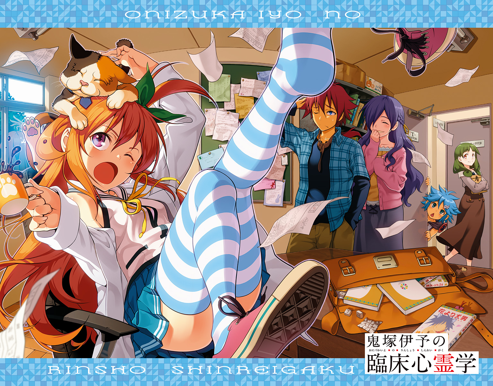
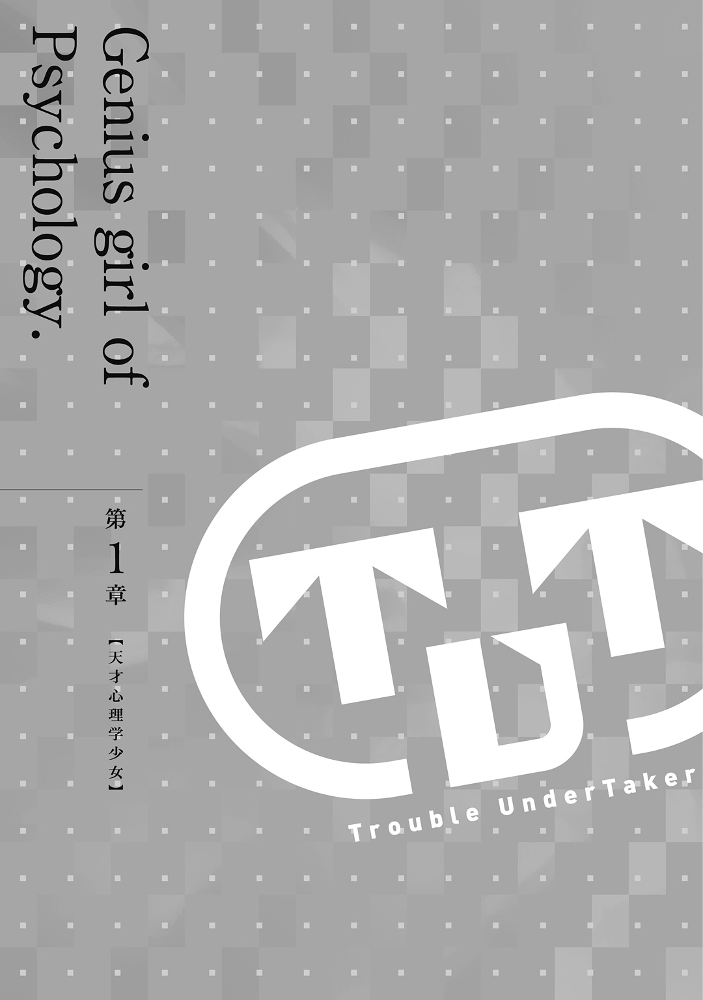

| 鬼塚伊予の臨床心霊学 | |
| 花井利徳 | |
この本は縦書きでレイアウトされています。
また、ご覧になる機種により、表示の差が認められることがあります。

「私たち人間は『目に見えないもの』に支配されています」
アイツは、鬼塚伊予は、俺にはっきりとそう言った。
人間は、『目に見えないもの』は信じない。見えないものに恐怖や不安を覚え、拒絶し、そんなものはないと否定する。そうして、目に見えないものを『存在しないもの』として扱ってきた。
『百聞は一見に如かず／Seeingisbelieving.』
昔の人も、自分の目で見たこと以上に確かなものはない、と様々な国の言語でこの言葉を残したくらいだ。だから、万国共通の真実なのだろう。
俺もそうだと思っていた。それが正しいと信じていた。
でも、「それは違う」とアイツは言った。
「人間は『目に見えないもの』に、『心』に、支配されている」と。
人間の心に形はない。目には見えない。触れない。でも、心なんて存在しないと、ないものとして扱うやつは誰もいない。目に見えないものを信じないくせに、その『目に見えない心』に従い生きている。
なるほど、確かに俺たちは『目に見えないもの』に支配されている。
心という『目に見えないもの』が確かに存在しているのなら、『目に見えないもの』すべてが存在していてもいいのではないか。俺がそんなことを口にすると、アイツは怒ってこう言った。
「心は確かに目に見ることはできませんが、人間の表情や行動、脳波などの様々なデータとして、その存在を観測することが可能です。ですが、心の存在を根拠に、すべての『目に見えないもの』の存在を肯定するのは、科学のルールを逸脱した暴論です」
観測することができるから、心は、目に見えないが確かに存在する。
『目に見えないもの』たちを、人間はそうやって、科学として受け入れてきた。原子や素粒子、重力や電気......実際、俺たちの周りには『目に見えないもの』が確かな存在として溢れている。
観測することで、その存在を証明できるなら、俺には、証明できる『もの』がある。
でも、俺はその存在を『証明しない』。少なくとも今は、『証明してやらない』。
それは俺がアイツのために勝手に立てた『誓い』だ。
アイツが望んだ訳でもない。そもそも、その誓いが間違いだってことも、俺にはわかってる。
だけど、俺は構わない。不器用な俺には、そんな間違ったやり方しかできないから。
俺は、アイツを護りたい。アイツを護ると誓ったのだ。
でも、騎士なんて格好のいいものじゃない。主人を守る番犬なんてのもおこがましい。
こんな俺には、アイツが言う『駄犬』辺りが丁度いい。
そうして俺は今日もまた、天才少女・鬼塚伊予に引かれながら、誰かのために駆け回るのだ。

「朝霧麗さんは今年の一月末に急性心不全で亡くなっています」
それが、今回の依頼の結末だった。
「あなたの言う通り、立川周辺の病院で身元不明の遺体として収容されていることがわかりました......あぁ......」
そう言って松田医師は泣き崩れた。祈るように手を組んで、彼女は何度も「ごめんなさい」と呟いていた。
松田医師は、すぐにこちらの八津葉記念病院へ遺体を搬送してもらえるように手配をしてくれた。
失踪中の学生の現状調査。それが今回俺たち『ＴＵＴ』に寄せられた依頼だった。
依頼を受けたときから、『その可能性』は常に頭の隅にはあった。
連絡が途絶えて、もうすぐ四か月。余程の事情でもない限り、そんなに長期間、大学からの連絡を無視し続けるというのは考えにくい。
つまり、連絡がとりたくてもとれない状況。事故や病気による昏睡状態。もしくは......。
「加奈子さんに、どう報告するかな......」
心優しい彼女のことだ、こんな結末を伝えれば、泣いてしまうかもしれない。
しかし、これが現実だ。どんなにやるせない結末でも、俺は報告しなければならない。
それが俺たち『ＴＵＴ』の仕事なのだから。
事の発端は、今朝、俺たちに舞い込んだ学生課からの依頼だった。
「ワンコさぁん」
「ああ、加奈子さん」
五月にしては暑すぎる日差し。窓の外ではすでに蟬も鳴き始めているようだ。考え事をしながら、二十七号館一階の廊下を歩いていると、不意に後ろから声をかけられた。
この人は山口加奈子さん。えっと、確か二十五歳。この大学の人文学部の事務さんだ。おっとりした性格で、大きな瞳のたれ目に、胸元でカールする癖っ毛の黒髪セミロング。男子からの人気は高いが、天然さんなので扱いづらいらしい。曰く「会話にならないことが多々ある」とのことだが、俺はそう感じたことはない。
「もう、その呼び名で決定っすか？」
「ふぇ？ ワンコさんはワンコさんじゃないですかぁ？」
「あはは、そっすね」
この人もアイツに倣って、俺のことを『ワンコ』呼びだ。アイツの徹底ぶりはたいしたもので、誰かがアイツの前で俺を人として扱おうものなら、最低三十分の説教は当たり前なのだ。必然的に、皆俺のことを『犬扱い』するようになっていくのである。悲しい現実だった。
「で、加奈子さん。俺に何か用があったんじゃないんですか？」
「ああそうなんですよぉ！ 実はぁ......あれ？」
もじもじとしきりに髪の毛をいじっていた手を、小脇に抱えていた封筒に突っ込んで、中の書類を出そうとする加奈子さんに、言いようのない不安を感じたときだった。
「ほわぁっ!?」
ビリッと紙の破ける音と加奈子さんの少し間の抜けた悲鳴と共に、大量の書類が宙を舞った。
「た、大変っ！」
この先の展開がなんとなく予想できてしまって、体が勝手に動き出していた。
宙に舞う数枚の書類を摑もうとした加奈子さんは、落ちた方の書類を踏んで足を滑らせた。
「わわっ!?」
「危ない、加奈子さん！」
倒れ込む加奈子さんをなんとか支えようとした結果、どう間違ったのか、所謂『お姫様抱っこ』みたいな形になってしまった。加奈子さん、軽いし柔らかいんだな......。
「あ、ありがとうございます、ワンコさん」
「い、いえいえ......」
お互い気恥ずかしさが爆発しそうだったので、すぐに加奈子さんを下ろして差し上げた。
真っ赤な顔で、片手でもう一方の自分の手を握ったり、腕を抱きしめるように撫でたり、髪をいじったりしてもじもじしている加奈子さん。なんかハムスターみたいで可愛かった。
「加奈子さん、書類を集めるの手伝いま......」
「チェストォッ!!」
「がはぁっ!?」
変な沈黙を破ろうと加奈子さんに喋りかける俺の脇腹に、横手から強烈な飛び蹴りが突き刺さる。
目前の加奈子さんが、勢いよく吹き飛んでいった。かに見えたが、吹き飛んだのは俺だった。
良かった、吹き飛んだのが加奈子さんじゃなくて。そんなことを考える余裕がある自分に少々呆れながら、俺は顔から地面にキスをした。
「かなちゃんをお持ち帰りとかなに考えてやがりますか、このエロ駄犬!!」
そんな俺の後頭部を、フィールドに立つサッカー選手がボールにするように踏みつけながら、高らかに吠える少女は、俺のよく知る人物だった。
最早トレードマークになっている白衣をはためかせるその姿は、悔しいがちょっとかっこいい。
「『先輩』、超痛いです」
「自業自得です、エロ犬」
少しツリ目がちの大きな瞳に泣きボクロ。茶色がかったクセのある長い髪の一部を横で束ねて、所謂サイドテールにしている。ちまっこいわりに、胸だけは自己主張が激しいこの少女の名は鬼塚伊予。十三歳。中学二年生。黙っていれば、かなり可愛い。美少女と言って差し支えないだろう。不機嫌そうなその表情も、端から見れば凜々しく映るのだろうと思う。
俺はこの伊予のことを『先輩』と呼ぶが、俺は大学生。年齢は十九だ。間違いなく年下である彼女を先輩と呼ぶのには、まぁ、色々と事情がある。
俺と伊予、いや先輩は幼馴染で、先輩が六歳のときからの付き合いだから、かれこれ七年になる。少し前から俺のことを『駄犬』と呼ぶようになった。昔からワガママなやつだったが、それに拍車がかかったのも、丁度その頃だったと思う。俺が無茶苦茶をやってしまったのも原因の一つかもしれないが、年齢的に考えて、第二次性徴に伴う反抗期というのが大きいと思う。優しい母親と多忙な父親より、身近な俺が丁度いい反逆の対象になったのだ。......多分。
「かなちゃん、大丈夫ですか？」
「鬼塚さぁん、誤解ですぅ。ワンコさんは私を助けてくれてぇ......」
「かなちゃん、騙されちゃダメです。この駄犬は、あなたをお持ち帰りしようとしていました」
「えぇ～っ!?」
折角の加奈子さんの弁護にも聞く耳を持たない先輩は、依然俺の後頭部を踏みつけたままだ。
一体先輩には、俺がどんな風に見えていたのだろう。俺は加奈子さんを『お姫様抱っこ』していただけだというのに。......うん、誤解されても仕方なかった。
「それはさておき、かなちゃん、ハゲ親父の言うことを気にすることはありません。あの人が怒鳴るのは、大抵、何か別のことに腹を立てているときです。妙にもっともらしいことを言うので、かなちゃんのような真面目な方は深刻に思うかもしれませんが、要は八つ当たりですので」
先輩は、突然真面目な声で加奈子さんにそう言った。俺のことは踏みつけたまま。ちなみに、ハゲ親父というのは、おそらく加奈子さんの上司のことだ。
「ふぇ!! 鬼塚さん、私が昨日、事務長に怒られているところを見ていたんですかぁ!?」
「いえ、昨日は学会で九州にいたので、大学には来ていません」
「じゃあ、なんでぇ、私が事務長に怒られたことを知ってるんですかぁ!? 私、誰にもまだ話していないんですよ？ それなのに、どうして......？」
「知っていた訳ではありません」
頭上で飛び交う会話は、嚙み合っているようで嚙み合っていない。それはそうだ、先輩は加奈子さんの悩みを知っている風に、突然慰めの言葉を投げかけたというのに、当の先輩はその悩みを知らなかったと言っているのだ。加奈子さんの混乱も当然だった。
「ただ、先ほどのかなちゃんの様子を見て確信しただけです。長い付き合いなのでわかりますが、かなちゃんに髪をいじる癖はありません。ということは、その行動には、何か原因があるはずです。髪を引っ張るようにいじる行動は、最も小さな自傷行為。その深層心理には自己否定や「もっと頑張らなければ」という自己叱責のような感情があると考えられます。また、自分の手をもう一方の手で覆う、口元に手を当てるというしぐさは、目の前の相手に対して隠し事をしているときなどに表出しやすい行動です。これらのことから、つい最近、かなちゃんに落ち込む出来事があり、それを駄犬に隠そうとしたことがわかります」
「ふえぇ......相変わらず、鬼塚さんはすごいですぅ。確かに私は昨日、事務長に叱られてぇ、しょんぼりしてました。でも、どうして事務長に怒られたと思ったんですかぁ？」
加奈子さんの疑問はもっともだ。先輩の話では、加奈子さんが落ち込んでいたことはわかっても、具体的に誰に何をされたというところまではわからなかったはずである。
「今もしている、その腕をさする行動です。これも、かなちゃんの癖ではありません。この行動は、不安や恐怖をやわらげたいという深層心理があるときに表出しやすいものですが、先ほどの場面でそういった感情が生起するとは考えにくい。だとすると、その部分を痛めたりしている可能性もありますが、転んだりぶつけたりする前に駄犬がかなちゃんを抱き支えたのでそれもない。では何故か。これが昨日かなちゃんをハゲ親父が怒鳴ったという事実を私に気付かせました。ハゲ親父は学生時代野球部だったそうですが、肘を故障して引退したそうです。ですので、何かイライラしたことがあると、決まって今のかなちゃんのように肘周辺をさすります。その行動がかなちゃんにうつってしまったんです」
「えっとぉ......行動がうつるんですかぁ？」
「はい。『行動感染』という心理現象です。一般に模倣と呼ばれるものもこれですが、教師や上司といった目上の人間の行動が生徒や部下にうつってしまうということがあります。また、情報不十分な危機的状況下で、その感染力が強まることもわかっています。行動感染するほどです、理不尽に長時間怒鳴り散らされたのでしょう。心的負担も大きいはずです。落ち込むのもわかりますが、あれはイライラしたハゲ親父の八つ当たり。かなちゃんが落ち込むことはありません」
「はえぇ......ありがとうございます、鬼塚さん。なんだか少し元気になりましたぁ」
ハムスターみたいで可愛いと思っていた行動に、そんな心理的意味があったとは思わなかった。俺は加奈子さんが落ち込んでいることにすら気付けなかったのに。あんな些細な変化からここまでのことがわかってしまう圧巻の洞察力からもわかるかと思うが、先輩はこの若さにして、大学内外にその名を轟かす『天才心理学者』なのだ。
先輩はこの大学の教授で俺の指導教授でもある鬼塚武史の一人娘だ。幼少の頃から『神童』と呼ばれ、その天才ぶりをいかんなく発揮していた先輩は、教授の研究を手伝っている内に、心理学に関して膨大な知識を有するようになっていた。小学生のときに書いた作文が、論文として知覚心理学分野での最高峰の学会誌『PERCEPTION』に掲載されたり、いくつかの大きな海外学会に招待され講演をしていたり。『IyoOnizuka』の名前は、この世界では親である教授よりも有名なのだ。だから俺は先輩を呼び名通りの意味で一目置いている。
そもそも何故『先輩』と呼ぶようになったかといえば、以前、「心理学ではお前より伊予の方が先輩だな」なんて酔いながら言った教授の言葉を真に受けて、俺に自分のことを『先輩』と呼ぶよう強要するようになったのだ。
「何をぼーっとしているんですか駄犬。散らばった書類を集めなさい。今すぐに」
「あ、はい。かしこまりました！」
先輩の足の裏から解放されたと思えば、次に飛んできたのはそんな理不尽な命令だった。
理不尽すぎて文句の一つも言いたくなるが、また踏みつけられても困るのでおとなしく従うことにした。俺が集めた書類はすべて俺たちへの依頼書で、それらを束にして手渡すと、先輩はそれをさっと眺めて嬉しそうに笑った。
「なるほど、丁度依頼はないのかとウズウズしていたところです！」
俺への労いの言葉などある訳もなく、先輩は加奈子さんに向かってそう微笑む。
本当に人助けのことしか考えていないやつだ。基本的にコイツは、俺を罵倒するか、誰かを助けるか、しかしていない。少しだけ、コイツの将来が心配になった。
「では、いつもの応接室まで来てください。他にもいくつか資料があるんですよぉ」
「わかりました。では、行きますよ駄犬」
不思議なもので、こうして先輩に先導されながら歩いていると、彼女の理不尽に対するモヤモヤした気持ちが、少しずつ晴れていくような気がした。
なんだかんだ言って、俺はこんな風に彼女に引き摺られる日常が好きなのだ。
「さぁ、ＴＵＴのお仕事です!!」
さて、『ＴＵＴ』とは何か？ さすがに説明が必要だろう。
TroubleUnderTakerの略称で、我が学園の理事会から正式に認められた奉仕団体だ。
日本語に訳せば『厄介事請負人』。その名の通り、学内で発生したトラブルのすべてを無償で解決するたった二人のボランティア団体だ。二人で団体というのもおかしな話だが仕方がない。
そして、鬼塚伊予こそがこの組織を立ち上げた張本人。俺はそのただ一人の平メンバーだ。
その始まりはこんな感じだった。
八王子近郊に数ある大学の中でも、付属の幼小中高一貫校を持ち地域最大の規模を誇る我が学園。その高等部で数年前に起き、ワイドショーを賑わせた『連続傷害事件』を先輩は鮮やかに解決した。学園とテレビ局が、そんな彼女に目をつけて、『美少女名探偵』というキャッチコピーで生放送のニュースバラエティ番組で特集を組んだのだ。番組の中で、事件解決までの再現ＶＴＲが流れたあと、先輩のコメントを撮る中継中に彼女が突然『ＴＵＴ』の発足を宣言したのだ。
打ち合わせにない発言に、番組は混乱を見せたが、学園側も番組も彼女の宣言に乗っかった。話題になる上に、厄介事を無償で解決してくれるというのだから首を縦に振らない訳がない。
そんなこんなであっさりと、この『ＴＵＴ』は発足した。
それから数年、俺たち『ＴＵＴ』が解決してきたトラブルは、失せ物探しに痴話喧嘩仲裁、刑事事件に民事事件、果ては心霊騒ぎなど、多岐にわたって数え切れない。
結果、その実績と評判もあいまって、全学生に携行の義務がある学生手帳にも問い合わせ先が記載されているくらいに、メジャーな組織となったのだ。
当時付属高校一年の俺が、小学四年生の伊予に振り回されながら駆け抜けた日々は、結果として学園からの信頼を俺に与え、推薦一発で大学の人文学部心理学科に入れた。まさか、人文学部、理工学部、情報学部の様々な学科から声がかかるとは思わなかったが。それが去年のことだ。
それからの一年も激動の日々だったとだけ言っておこう。
俺が『あんなこと』になっても腐らずに、こうしてお天道様の下を歩けているのも、この活動に打ち込んでいて、色々考えずに済んだからだろう。
だが、そもそも『あんなこと』に巻き込まれたのも、この『ＴＵＴ』の活動のせいなのだから、なんとも難しい話なのだ。とにかく、『ＴＵＴ』というのは、そういうボランティア活動で、俺のお仕事なのである。
「あ、『ポンちゃん』だ」
「本当だぁ！ 今日も白衣着てるんだ！ おーい、ポンちゃーんっ!!」
先輩と共に加奈子さんの後をついて歩いていると、遠くから声をかけられた。
「先輩、呼ばれてますよ？」
「い、いいです......い、今はＴＵＴの仕事中ですから......」
『ポンちゃん』というのは、先輩の愛称だ。鬼塚伊予の『伊予』からの連想で、伊予→伊予柑→ミカン→ポンジュース→『ポンちゃん』ということらしい。
先輩は基本的に人見知りなので、見知らぬ人に話しかけられると、『ポン』と音を立てそうなくらいに真っ赤になって逃げ出すことから、この呼び名が定着したという説もある。
こと大学では、『天才美少女』ということで、男女問わず大人気な先輩だ。活躍のたびに学園内での知名度が上がると共に、注目も高まって人気もうなぎのぼり。先輩のファンクラブができるほどである。
「照れてる、可愛い！」
「ねーねーポンちゃーん、飴食べるー？」
「い、いらない......って言っておきなさい、駄犬」
「自分で言えばいいじゃないですか？」
「う、うるさいっ！」
こういう反応をすると余計に絡まれるのだが、その辺を先輩はわかっていない。ちなみに、
「ポンちゃ......」
「ふんっ！」
俺がその愛称で先輩を呼ぼうものなら、閃光のような右拳がボディーに刺さるのだった。
「その名前で呼ぶなと言ってありましたよね？」
可愛いと思うのだが......。
付属中学の生徒とは言え、大学構内を制服で歩き回るから、目立って声をかけられる回数も増える。それが嫌ならば制服をやめればいいのでは？ と進言したことがあったが、「校則ですし、目立った方がＴＵＴの宣伝にもなりますので」と却下された。苦肉の策で上に着せた白衣は、余計に先輩を目立たせてしまったし、まぁ、なんというか、今や大学のマスコット的な存在なのだ。
「あ、ポンちゃーん!!」
「先輩は、人気者ですね」
「うるさい！」
結局、目的地に辿り着くまでに、十数人の学生に声をかけられたのだった。
人文学部事務室の奥にある応接室に通される。相変わらずのふかふかなソファーに身を預けると、どうにも落ち着かない気持ちになるのは何故なのか。横を見ると先輩は思いきり寛いでいるようだ。
俺は残念ながら寛げない。こういうＶＩＰな待遇はどうにも身に余る気がするのだ。そこへいくと先輩はしっかりその扱いに順応している。きっと将来大物になるのだろう。一瞬、何がしかの大物になりバリバリ働く先輩の横、もしくは下で、馬車馬のように働く自分の姿を想像してゾッとした......ありえそうで嫌だった。
ＴＵＴへの依頼は大きく分けて二通り。
一つが学生が自身で持ち込む依頼。これは俺や先輩が直接受けることが多い。内容は些細な悩みから刑事事件ギリギリ手前のトラブルまで様々である。
そして、もう一つが今回のように、教授や職員など大学側からの依頼。これは、加奈子さんを通して俺たちに伝えられる。内容は大学として踏み込めない学生のプライバシーに関わる調査や介入がほとんどだ。
朝霧麗 あさぎりうらら 二十歳 神奈川県厚木市出身 現在立川にて一人暮らし
人文学部教育学科在籍 学部三年生
所属サークルなし 所属部活動なし
奨学生のため学費免除 出身高校なし（高等学校卒業程度認定試験合格）
追記
本学入学前まで八津葉記念病院にて長期入院（一九九四年～）
心臓に重度の疾患を持っていたが、手術により快復
保護者である母親は現在八津葉記念病院に入院中（二〇一二年一月中旬～）
現在、電話・電子メール・郵便・その他すべての連絡手段をもっても当人との連絡がつかないまま長期欠席中（二〇一二年一月中旬～）
早速、渡された資料に目を通す。今回の依頼は学生の現状調査。依頼主は学生課だ。
入学時の書類不備が原因で顔写真はないが、それ以外の情報は最低限揃っている。資料の最後にあるように、今年の一月から欠席中で、全く連絡がとれない状況だ。本来なら単位不足で留年か、休学扱いになるのだろうが、奨学生は優秀な成績を修めていなければならないので、おいそれと簡単に留年などにはできないのだろう。
「普通に考えるのであれば、この母親の入院が関係していると見るのが妥当ですね」
母親の入院と学生が消息を絶った時期の一致が、無関係だとは考えにくい。
「そうなんですけどぉ。大学としてはぁ、ご本人にもご実家にも連絡がつかない時点で、もうどうすることもできないんですよぉ。一応私もご本人の自宅には行ってみたんですけどぉ、いつもお留守みたいでぇ......」
加奈子さんの言うことももっともだ。大学からできる働きかけはせいぜいその程度。入院中の母親以外には身よりもないようで、大学側も扱いかねていたのだ。むしろ自宅を訪問した加奈子さんの行動は、大学事務の仕事を逸脱している。彼女の善意なのだろう。
「だとすると、調べるべきは、この『八津葉記念病院』ですかね？」
「そうなりますね。駄犬、車を回してください」
「仰せのままに」
「えーと、それでは、後はお二人にお任せしますねぇ。よろしくお願いしまぁす」
丁寧に頭を下げる加奈子さんに挨拶をしてから、俺たちは応接室を後にする。ちなみに、この加奈子さんは、大学のＴＵＴ担当にいつの間にかされてしまった可哀想な人だ。まぁ、そのお陰で仲良くなれたし、今ではこうして気軽に話せるようになったのだが。
私服に着替えるというので、一旦先輩と分かれ、大学から少し離れた駐車場で車に乗り込み、カーナビに目的地を入力する。『八津葉記念病院』。ここから約一時間半で着くようだ。先輩を拾う前に、俺はある場所に寄ることにする。移動にそれだけ時間がかかるなら、恐らく必要になるものを買うために......。
「コノ先道ナリデス」
「道なりって、カーナビの意味がないじゃないですか？」
俺の隣では、先輩が、少し不機嫌そうに座っている。恐らくは退屈なのだろう。カーナビなんかにツッコミを入れているのがその証拠だ。
「駄犬、ヒマです。試しに高速道路を逆走してみてください」
「大事故になりますので、丁重にお断りします」
そして、やはり予想していたような台詞が先輩から飛び出す。
でも、その気持ちはわからないでもない。ドライバーと違い、助手席の先輩は本当にすることがないのだ。普段ならもう少し放っておけば可愛い寝息が聞こえてくるのだが、これからＴＵＴの仕事だというときに、すやすや眠ってくれる先輩ではない。
「そうだろうと思って、こんなものを用意しておきました」
「こ、これはっ!?」
一時間半の間、退屈なまま放置すれば何をしだすかわからないので、俺は今先輩が愛読している少女漫画を大学のブックセンターで買っておいたのだ。
「北川原先生の新刊ですか!? 駄犬にしては良い心がけです。褒めてあげましょう！」
「いえいえ、先輩の退屈しのぎになればと思いまして」
「駄犬、うるさいです。読書に集中できないので黙ってください」
......これで恐らく到着までの時間、先輩は静かでいてくれるはずだ。
「コノ先道ナリデス」
「うるさいと何度言えば......」
隣でカーナビと喧嘩をする先輩を見て、口元を緩めながら、俺は前方をのんびりと走る軽自動車を追い抜くため、車線変更を試みるのだった。
ほどなくして目的地に着いた。車から降りようとドアに手をかけると、不意に先輩が言った。
「駄犬、最悪の場合も、覚悟しておいた方がいいでしょう」
それは恐らく、この依頼の結末に関する示唆だろう。俺も同意見だった。
先輩の横顔を見る。平然としているが、眉根が微かに曲がっていた。想定される最悪のケースにならないことを願う優しい本心が想像できた。
「行きましょう、駄犬」
不穏な空気を払拭するように、力一杯ドアを開けて、車を降りる先輩だった。
受付で朝霧麗さんの母親、朝霧あけみさんの病室を確認し、俺たちはそこへ足を運んだ。
リノリウムの床を歩いていると、かつて入院した病院を思い出す。嫌な思い出ばかりだった。そんなことに気を取られて、廊下の角で男性とぶつかってしまった。
「おい、君、気を付けたまえ......全く......」
不機嫌そうにそう言う男性は、白衣を着ていて胸には『俵大介』と書かれた名札を下げていた。そしてブツブツと何かを呟きながら謝る暇もなく行ってしまう。
「どうかしましたか、駄犬？」
「いえ......」
こちらの不注意だったので謝るべきかとは思ったが、追いかけて謝るのもおかしい気がして、そのまま先輩の後を歩き出した。
「そういえば、先ほどの漫画で恭介が――この恭介というのはヒロインの憧れの男の子なんですが――恭介が本を読んでいるところに飛んできたサッカーボールを片手で受け止めるシーンがあったんです。漫画なのでしょうがないのですが、実際は、読書中に飛んできたボールに気付くことはできません。何かに集中している人間の視野は極端に狭くなりますから。それを見て、私はある論文を思い出しました。『Attention』に対する有効視野の広さに関しての実験なのですが......」
先輩は車内で読んでいた漫画の内容の話をしていたはずなのに、いつの間にか心理学の論文の話になっていた。そのまま漫画の話に戻ることはなく、目的の病室に着くまでの間、ずっとその論文について話をしていた。
女子中学生が嬉々として話す内容ではないのだが、実に先輩らしい話題だった。
こんな風に賢すぎることに加えて、この正直すぎる性格もあいまって、先輩は幼い頃から友人がほとんどいなかったのだ。恐らくそのせいもあって彼女は『心理学の天才』のくせに、人付き合いが極端に苦手なのである。俺に対する暴力的な行動も、上手く感情表現ができないがために思わずやってしまうものが多いのだろうと思う。小さな子供がだだをこねるようなもので要するに俺に甘えているのだろうと勝手に解釈しているのだ。
もっと年相応に振る舞えれば、中学校でもきっと人気者になれると思うのだが......。
『朝霧あけみ』と書かれたプレートがついている病室に入ったとき、俺がかつて入院していた病室との差に驚いた。大きな窓のすぐ横に大きなベッド。大型の液晶テレビ。小さなテーブルに二つのソファーは来客用だろうか。そもそも、一人用の個室なんてドラマでしか見たことがない。
「おや？ えーと、どちら様かね？」
病室には先客がいた。麗さん以外に、あけみさんに縁者はいないはずだが。
「朝霧さんの娘さんの友人で同じ大学の大和です」
「ああ、麗ちゃんの。私はオカモトだよ。ご近所のお友達ってところかね。そちらは？」
オカモトと名乗った気さくそうなお婆さんがにこにこ笑いながら指差す先には、俺の背中に隠れて、コソコソしている先輩がいた。
「妹の伊予ですっぁ!? ......妹......みたいなものです」
力一杯足を踏まれたので、どうにも微妙な言葉になってしまった。どう説明したものか迷って、妹として乗り切ろうと思った俺の思惑は、残念ながら先輩には伝わらなかったようだ。
「そうかいそうかい。よろしくね、お嬢ちゃん？ 麗ちゃんは元気かい？ 試験とかで忙しいんだろうね。私は携帯電話も持ってないから連絡もできなくてねえ......」
それからしばらく、俺たちはオカモトさんと談笑した。オカモトさんは色々話してくれた。
付き合いの深い方らしく、麗さんが小さい頃からずっと、仕事で忙しい母親に代わりよく麗さんのお見舞いにも来ていたそうだ。曰く麗さんを自分の孫のように思っているのだとか。
あけみさんについても色々と話してくれた。娘の回復を信じ、その将来の蓄えを作るために、本当に必死で働いていたらしい。だから、彼女の退院が決まったときは、涙を流して喜んだそうだ。
言葉には出さないが、オカモトさんは麗さんを孫のように思うと同時に、あけみさんのことも本当の娘のように思っているようだった。
麗さんの大学進学を受けて、あけみさんは一層仕事に打ち込んだそうだが、その無理が祟って脳卒中で倒れてしまい、現在は重度の意識障害。話を聞いて、医療費などを心配したが、麗さんのために貯めていたお金と国からの助成金を充てているそうだ。
どれもこれも、資料にはない情報で、麗さんの生活の厳しさがよくわかった。奨学生なのでなんとか生活を維持できていたようだ。
もしかしたら、オカモトさんが知らないだけで、アルバイト等をしていたのかもしれない。
だとしたら、いくら手術によって快復したとはいえ、病み上がりの彼女には過酷すぎる生活だ。
不意に、誰かに見られている気がして、入口の扉の方を見た。扉のすぐ向こう側から、覗き窓越しに俺のことをジッと見つめる視線。何かを語りかけるような、そんな瞳。
「どうかしたかい？ 扉の方に誰かいるのかい？ 私はもう年だからね......よく見えないんだよ」
「いえ、別になんでもありません。お手洗いってどこですか？」
「ああ、廊下を左に出て突き当たりを右に行った奥だよ」
「ありがとうございます。先輩、オカモトさんのことよろしくです」
「任されました」
「行ってらっしゃい」
オカモトさんの反応でわかる。いくらお年寄りとはいえ、あの人影が見えないということはないだろう。つまりは、この視線の主は、オカモトさんには『見えない』のだ。
「えーと、その、俺に何か話があるんじゃないかな？」
「......え？ あれ？ わたしが見えるの？」
腰より長い髪を風に揺らすこともなく、閉じたままの窓枠に腰をかけ窓ガラスをすり抜けている入院着の女の子。年は先輩と同じくらいだろうか。
窓の向こう側に見える人間は、誰も彼女に気付いていないようだ。
この手の存在との会話は、いつだってこんなやり取りから始まる。
普通の人には見えない存在。死んだ人間の魂、つまり幽霊だ。
俺は、過去に文字通り死ぬような思いをし、その結果として、幽霊を見たり、幽霊と話したり、幽霊に触ったりができるようになった。最初こそ混乱したが、まぁ、人に見えないものがちょっと沢山見えたりしてしまうだけだと今は割り切っている。このことは訳あって先輩には秘密にしているのだが。
幽霊が見える人間は、本当に少ない。また、幽霊同士の交流も基本的にはあまりないらしい。だから、死んでも成仏できず、幽霊になってこの世に留まってしまうと、高い確率でたとえようもないほどの孤独に見舞われるという。ひとところに留まれば『心霊スポット』などと言われ、人間も近づかなくなり、余計に成仏の機会を失ってしまうのだそうだ。
「大丈夫、俺には君が見えるし、君の声も聞こえる。何かを誰かに話せなくて、ずっとこの病院を彷徨っているのかな？」
だから本当は、この病院を彷徨うすべての幽霊に話しかけて、できるなら成仏するための手助けをしてあげたい。でも、それは無理だ。多くの場合、幽霊はすでに外界との繫がりを遮断してしまっていて、会話することもままならない。それが長い孤独に耐えかねてなのか、そもそもそういうものなのかはわからない。
でも、こうして会話ができる場合は、大抵、強い思念のこもった視線を向けてくる。ただこちらを眺めているのではなく、必死に視線で語りかけてくる。
そんな存在に気づいたとき、俺はできる限り話しかけるようにしているのだ。まぁ、生きている人間相手でもそれは同じことだし、俺には幽霊が生きている人間と同じように見えてしまい、それらをはっきりと区別することはできないので、先ほどのように、他の人に見えているかどうかを確認してから対応を決めるのだが。
「俺にできることは少ないけど、君の話を聞くくらいならできる。良かったら話してくれないかな？」
後は普通の人間と変わらない。しっかりと目を見て、伝える言葉に「あなたの力になりたい」という思いを込めて話しかけるのだ。
「変な人。わたしみたいな存在が怖くはないの？」
「説明は難しいけど、君がそういう怖いものじゃないってのはわかる」
「そうなんだ。ふーん......要するに変な人なんだね」
「よく言われる。生きている人からも、死んでいる人からもね」
「そっか、お節介なんだね」
「それも、よく言われるよ」
クスクスと笑いながら足をパタパタと揺らしたその少女は、片桐優奈と名乗った。
先月の中頃に心臓の病気で亡くなったのだという。
幼い頃からこの病院に入院していた彼女は、看護師さんから、入院したときの年齢もその境遇も似ていた麗さんの話を聞いて、ずっと友達になりたいと思っていたそうだ。しかし、彼女は重病で立ち上がることもできなかったので、会いに行けなかったのだと言った。
「生前のわたしは、自発呼吸がやっとで、字を書くとかはもちろん、会話もできなかったんだ」
だから、心の中で『友達になりたい』と思うのでやっとだったそうだ。
「きっと、その気持ちは朝霧さんにも伝わりましたよ」
「ありがとう。あなたは優しいんだね」
そう言って、片桐さんは笑った。
「そんなあなたにだったら、ううん、そんなあなただからこそ、このことを話すべきなのかもしれない。わたしはこのことを誰にも話せなかったから......誰にも言うことができなかったから。きっと、それがわかってたから、松田先生もわたしにだけ話したんだと思うんだ」
そう言って片桐さんが話してくれたのは、麗さんの隠された過去だった。
「もう少し、もう少しだけ早く、あなたがここに来てくれていたら......なんてね。きっと、今になってあなたがここに来たことにも意味があるのだろうから。このことをあなたに託すね。ううん、託します。どうか、朝霧さんの力になってあげてください。お願いします」
「俺なんかに、何ができるかわからないけど。約束します」
「あなたなら、きっとそう言ってくれるって思ったよ。本当に、ありがとう」
すべてを話し終えた片桐さんは、最後にもう一度、幸せそうに微笑んで、すっと立ち去って逝った。
そこに、もう片桐さんの気配がないのはわかっていたけれど、誰もいない廊下に、俺は「ありがとう」と感謝を告げて、あけみさんの病室に足を向けた。
今回の依頼の結末は、どうやら悲しいものになりそうだ。そう思った。
麗さんの担当だったという松田医師に話を聞こう。すべてはそこからで、そこですべてが解決するかもしれない。あけみさんの部屋のドアをノックする手が、ほんの少しだけ重たく感じた。
「随分長かったですね、何をしていたんですか？」
「伊予ちゃん、そんなもの、うんこしてたに決まってるだろうよ」
「お、おばあちゃんっ!?」
「あっはっはっ！」
あけみさんの部屋に戻って、先輩の開口一番の質問には、何故かオカモトさんが答えてくれた。正直に話をする訳にもいかないので、俺は、ははは......と乾いた笑いを浮かべるばかりだ。
先輩はすっかりオカモトさんと打ち解けて、楽しそうに話していた。オカモトさんの表情も、先ほどより明るくなったように感じる。意識のない人間のお見舞いは、どうにも気が滅入ってしまうものだ。先輩はそんなオカモトさんを気遣って、色々と働きかけてくれたのかもしれない。
しばらく三人で会話をしたあと、俺たちは、オカモトさんに松田医師を紹介してくれるように頼んだ。オカモトさんに紹介を頼んだのは、松田医師に俺たちが麗さんと関係が深いのだと錯覚させることができるかもしれないという先輩のアイデアだった。
先輩は、病院へ来る車の中でこう言っていた。
「いいですか、駄犬。今回唯一の手掛かりである朝霧さんのお母様は重病で入院中です。話を聞くのが難しい状態であった場合、担当医に話を聞く必要があるでしょう。しかし、医師には『守秘義務』があり、無関係の人間に個人情報を漏洩することは厳しく禁じられています」
多くの個人情報を扱う職業には『守秘義務』というものがある。俺も心理学を学ぶ学生だからわかる。医者は特に厳しくて、例えば恋人にさえ、情報を漏らすことはないのだ。
「その場合、周辺の看護師などから頻繁に見舞いに来ている人物をそれとなく聞き出し、その人物の友人を演じます。人間は『想像』をする生き物です。目の前に対呈示される事柄について、その関連性をほぼ自動的に連想します。初対面の私たちの印象は、その人物の印象によって連想され、朝霧さんやそのお母さんとの関係が、さも深いかのように錯覚させられるはずです」
オカモトさんからの紹介は、その先輩の作戦にピッタリ合致するカードだったという訳だ。
看護師さんに案内されてやってきたのは、内科病棟の入院患者用の診察室だった。
ドラマでよく見るレントゲン写真の投影機と、大きめの液晶モニターが数台並んだ長い机、沢山のカルテが入った棚に、小さな枕の置かれたベッド。医療の専門家と話をするというだけでも十分緊張するのに、如何にも診察室といった部屋に通されて、いやが上にも緊張する。
「あなたたちがオカモトさんの言っていた麗ちゃんのお友達ね？」
部屋に入ってきた俺たちに対して、いきなり質問してきた女性が松田医師だ。肩までのボサボサの黒髪で、目の下には濃いクマがある。少し大きめのくたびれた白衣の下は、飾り気のないパンツルックだ。正直白衣は普段の先輩の方が似合っていると思った。
「あ、はい。麗さんの大学の友人で、大和一也です」
「妹の......伊予です」
朝霧麗さんと会ったことも、話したこともないが、そう言わないと話は進まないので、申し訳ないが噓を吐いた。ここに来るまでの間に先輩と色々と打ち合わせをした。妹を名乗るのを最後まで嫌がったが、それが一番自然だと言って納得してもらったのだ。
「麗お姉ちゃんには、いつもお世話になってました」
「そうなの......麗ちゃん、子供の面倒見良かったものね」
先輩の迫真の演技に、医師はそう言って懐かしそうに微笑んだ。オカモトさんから、麗さんは子供好きだと聞いていたので、『友人だ』という噓に真実味が増したはずである。
それからしばらく、雑談をしながら、徐々に核心に迫っていく、そういう段取りだった。
しかし、やはり一筋縄では行かなかった。
「麗さんから、心臓病を患っていたって聞いたんですが、どんな病気だったんですか？」
「それは、お話しできないわね。ごめんなさい」
普通に考えて、年下の先輩の方が医師にいろいろ質問するというのは不自然だということで、俺が質問役になったのだが、それとなく麗さんのことを聞き出そうとしても、医師はなかなか話してくれなかった。
「あけみさんが倒れてしまったとき、麗さんもすぐにここに駆けつけてきたんですか？」
「それも、プライバシーの観点から、お話しすることはできないわ」
それほど踏み込んだ質問をしている訳でもないと思うのだが、頑なに「話せない」の一点張りなのだ。
彼女の偽りの笑顔の防壁を、俺では全く破れない。
それどころか、どんどん警戒されてしまっている気すらしてくる。
「麗さんのことなんですけど......」
「さっきから、あなたは麗ちゃんのことを何かと聞き出そうとしているようだけれど、彼女のことは彼女に直接聞くべきだと思うの。違うかしら？」
いや、事実として、がっつり警戒されているようだ。
「......あなたたち、何を探っているの？ まさか......」
これまでにないほど厳しい目つきで投げかけてきたその質問には、言葉以上の警戒心が感じられた。幽霊の片桐さんの話にあった、松田医師の隠しているという事実を考えれば、当然の反応だとも言えるが、これではその片桐さんから聞いた話を持ち出せそうにない。核心に触れる話をしようものなら、そのままここからつまみ出されそうな雰囲気だ。
「さ、探っているって......そんなつもりはないんです。麗さんはそういうことをあまり話してくれなかったので、彼女の体のことで、何か気遣ってあげた方がいいことがあったら知っておきたいなぁっていう、興味本位です。いろいろ突っ込んだことを聞いてしまってすみません」
「そう......そうだったのね、変なことを言ってごめんなさい」
咄嗟に噓をでっちあげてしらばっくれてはみたものの、これ以上何も聞けそうになくなってしまった。
気まずい雰囲気をどうすることもできず、俺は苦笑いを浮かべながら頭を搔いた。
先輩と決めていたジェスチャーサインだ。これ以上は俺ではどうにもならないと思ったら、頭を搔いて先輩にバトンタッチをするという約束だったのだ。
先輩は小さく頷いてから、医師の方を向いたが、じっと黙ったままだった。重苦しい空気がしばらく部屋を満たしていた。
重い沈黙に耐えかねて口を開いたのは、医師の方だった。
「麗ちゃんは......元気？」
「先生はおかしなことをお聞きになりますね？ 『元気ではない』と思うのですか？」
医師の言葉は、場を取り繕うなんでもない質問に聞こえたが、先輩は鋭く質問を返した。
先輩の言葉で俺も気付いた。医師のした質問には、確かにそんな違和感があった。どこか麗さんを心配しているようなニュアンス。言葉の後に『元気だと良いのだけれど』という続きが隠れているような感じだった。
「え？」
年端もいかない少女に切り返されたのが予想外だったのか、医師は一瞬キョトンとした顔で先輩を見返した。そしてすぐさま、その身を固くして、平静を装うように笑顔を作った。
「べ、別にそうは思っていないわ。手術によって快復したとはいえ、心臓の疾患だった人だもの。術後の経過や彼女の健康状態を気にするのは、元担当医として当然の務めでしょう？ 元気ならそれはそれで安心だけれども、もし何かあったら......それを聞いただけで他意はないわ」
「そうでしたか、それは失礼致しました」
先輩は医師の言葉を受けて、優しい笑顔で頷いた。それを見て、医師の表情が少し緩んだ。
医師の態度に、以前聞いた先輩の言葉を思い出す。「人は噓を言うときほど、雄弁になる」という言葉だ。今の医師の姿はまさにそれなのではないだろうか。
そして、先輩は明るい声で更に続ける。
「麗さん、あけみさんが倒れたときこの病院に来ませんでしたか？」
「え、ええ、もちろん。飛んできてくれました。本当に一生懸命、お母さんのために色々とやってくれて......麗ちゃん、優しい子ですから」
先ほどの鋭さと比べて、随分と柔らかい空気で投げかけられたその質問に、医師はすんなりと答えていた。俺が聞いたときには頑なに答えてくれなかった質問だというのに。
絶妙な空気の寒暖差。敢えて警戒心を煽ってから、肩透かしのようなぬるい質問を投げかけることで医師の固い口をいとも簡単に緩めてしまった。先輩がカウンセリングで使うテクニックだ。
俺では何を言ってもその口を割ることができなかったのに、先輩は医師の一瞬の隙を見逃さず、たった二つの質問でそれをやってのけてしまった。さすがとしか言いようがない。
先輩の予想は、オカモトさんから聞いた話とこの医師の話で裏は取れた。その時期大学は試験期間中だが、やはり彼女は試験を投げ出してここに来たのだ。きっと相当無理をしたのだろう。『長期的な昏睡状態』の患者の快復には、身内の熱心な語りかけなどが有効だ。麗さんもそんなお母さんに、必死に語りかけ、介護したに違いない。
でも、オカモトさんは言っていた。「一月末以降、麗ちゃんとは会っていない」と。彼女はずっとここにいた訳ではないのだ。約半月お母さんの病室に通い、以降はこの病院に来ていない。だからこそ先ほど、医師も俺たちに麗さんの安否を確認したのだろう。
「貴女はそのとき気付いたんじゃないですか？ 麗さんの現状に」
「麗ちゃんの、......現状？」
すっかり先輩のペースに飲まれてしまった医師には、最早余裕など見られなかった。先ほどまでなら「それは話すことはできない」と言って終わりだったのに、その言葉が出てこない。
「ええ、そうです先生。麗さんは本当に、病気が治ったから退院したんですか？」
「そ、それは、どういう？」
完全に余裕を失った医師に、畳みかけるように核心を突く質問を投げかける先輩。
揺さぶりをかけて先輩が聞き出そうとしているのは、俺が片桐さんから聞いた話だ。看護師の噂を聞いたという話に変えて、打ち合わせのときに先輩にも話したのだ。それはどうしようもないほどに不幸な出来事だった。
「麗さんは一月中旬以降、大学には来ていません。この意味が先生にはわかるはずです」
その先輩の言葉に、医師は硬直し、悲痛な表情を浮かべた。
「あなたは、一体どこまで知っているんですか？」
「私は何も。でも、先生はご存知のはずです。麗さんの現状を......話していただけませんか？」
先輩の視線に、彼女は瞳を大きく揺らした。数分か数秒か、正確な時間はわからないがしばらく逡巡したあと、ゆっくりとため息を吐いて、観念したように松田医師は言った。
「この話はどうか内密に......なんて、私にそんなことを言う資格も権利もないですね。お話ししましょう。私の罪を......それが私にできる、彼女への唯一の罪滅ぼしかもしれません」
そして、医師はとつとつと語った。その日までの出来事を。
＊
私がまだ二十代の頃なので、三年ほど前のことだ。
「こんにちは、今日もよろしくね麗ちゃん」
「はい、松田先生」
朝霧麗ちゃん。私が数年前から担当している患者さんだ。生まれつき重い心臓病を患い、二歳のときに心不全で救急車で運び込まれ緊急手術をして以来、ずっと入院生活を続けている。
小児の心臓手術だったこと、また彼女自身の体質の問題もあり、手術後も様々な合併症を起こして完全快復ができず、今は様々な投薬治療と定期的なカテーテルによる治療を行っている。
何もしなければ早くて二十代で命を落とし、どんな治療を行っても四十代まで生存した症例はほとんどない。
私はまだ経験も浅いのに、こんな重病の患者の担当になったときは貧乏くじを引かされたと思った。病院はすでにターミナルケア同然のスタンスで彼女の治療に当たっていたのだ。助かる見込みが薄い彼女の治療に対して、虚しさを感じずにはいられなかった。
「先生、私はいつまで生きられますか？」
彼女は毎朝、笑顔でそんなことを冗談のように聞いてくる。
「なに言ってるの、いつまでだって生きられるわよ！」
「そうだといいんですけど......」
それが、挨拶がわりのいつものやりとりだった。もちろん彼女には短くて二十代、長くても四十代なんて伝えていない。でも、薄々気付いているのだろう。
いつだって寂しそうにベッドで本を読んでいる彼女のことを、気の毒に思わないスタッフはいなかった。助からないとわかっているから余計に、よく言えば大切に、悪く言えば腫れ物に触れるように彼女に接してきた。あまり人間関係を知らない彼女だって、そんな空気に気付かないはずはなく、自分の寿命もなんとなしに察していたのだと思う。
それでも私は彼女のことが大好きだった。いつの間にか彼女のことを大切に思うようになっていた。噓ではなく、本当に心からそう思っていた。
彼女が一分でも一秒でも長く生きられるように、最善を尽くそう。そう思った。
そんなある日のことだった。
「新しい治療法ですか？」
「ああ、今度うちの病院に来た俵先生なんだが、なんでもアメリカで彼女のような心臓疾患を抱えた患者への新しい術式を考案したらしく、彼女の手術を希望していてね......」
それは願ってもない話だった。現状私たちの技術では、彼女の快復を見込めなかったのだ。彼女を救う術があるのなら、喉から手が出るほどに欲しかった。
その話にもちろんあけみさんも飛びついた。「助かる見込みがあるのなら」と、快く様々な書類にもサインをしてくれた。それで彼女が救われるなら......私だって大喜びだった。
そして、手術は行われ、成功した。
もちろん私たちは『手術の成功』を二人に報告した。あけみさんは泣いて喜び、麗ちゃんは夢のようだ、信じられないと言ってキョトンとしていた。
半年後に退院も決まった。それまで術後の経過を観察して、問題ないようなら退院ということになった。
「退院できるなら、私、学校に行きたい」
麗ちゃんがそう言うので、私は色々調べて高等学校卒業程度認定試験のことを彼女に教えた。
それから半年、麗ちゃんは経過観察やリハビリと並行して、高認に向けて必死に勉強した。
今まで学校というものに行ったことのなかった彼女は、本当に一生懸命に勉強していた。
すべてが順調だった。順調なはずだった。真っ暗だった朝霧家の未来に一筋の光が差していた。
でも、そんなときだ。『その手術』には全く効果がないということがわかったのは......。
俵医師はただ心臓の手術経験を積みたいがために、ほんの一時、心臓の活動を回復させるだけで、時間の経過と共に元の状態に戻ってしまうような手術を行ったということに、院長が気付いたのだ。
すべてはぬか喜び。彼女の心臓はその危険を残したままで、一筋の光は幻だった。
私はそれを彼女たちにどう伝えればいいのか......わからないでいた。
そんな私に、悪魔が囁いたのだ。
「あの手術がデタラメだったなんてことが世間に知れれば、俵先生に手術をさせたこの病院にも責任が及ぶ。幸い彼の父親は医師会の役員で、今回の件に目をつむれば、色々と便宜を図ってくださると言っている。新しい術式だということになっているのだし、何か問題が起きる前に、『経過も良好』ということで退院させてしまおう。その後で問題が起きたとしても『新しい術式』だったんだ、いくらでも言い訳はきく......君もまだ若い、その年で職を失いたくはないだろう？ いいね、松田君。あの手術は『成功していた』んだ」
どうかしていた。そうとしか言えない。私は我が身を守るためにそんな院長の言葉に逆らえずまんまと唆されてしまった。
それに、言えなかった。幸せそうにする二人に、明るい未来を夢見る二人に、再び絶望を突きつけることが、私にはできなかった。
そして、彼女は退院した。真実を知らない多くの職員と患者たちに見送られ、
「先生、本当にありがとう」
そう言って泣きながら......彼女はとびきりの笑顔で退院したのだ。その心臓に欠陥を抱えたまま。タイムリミットのわからない時限爆弾をその胸に抱えたまま。
間違いだらけの私たちは、麗ちゃんを見殺しにしようとしていたのだ......。
最低だった。医師としても、人間としても。
＊
「あけみさんが脳卒中で担ぎ込まれたとき、私は麗ちゃんに連絡しました。麗ちゃんはとるものもとりあえず駆けつけてくれました。その元気そうな姿を見て、私は安心したものでした」
そして麗さんは先ほどの話の通り、あけみさんのために色々と頑張ったそうだ。
毎日朝から晩まであけみさんのそばに付き、話しかけ、ワーカーさんに習って四肢のマッサージをしたり、基本的には厚木の実家から通っていたが、許可が出れば病室に泊まって介護をしたりしたそうだ。本当に献身的に......。
「みんな彼女の頑張る姿を見て本当に元気になったと感動していました......ですが私は心配でした。彼女は本来なら絶対入院しているべきなんです。ですからあけみさんの容態も安定した段階で、彼女には立川のアパートへ帰るように伝えました。心臓への負担が心配でしたから」
そして、医師は時折鼻をすすりながら続けた。辛そうな声で。
「帰り際に変な咳を......していて、心配で、でも、それを直接は言えなくて......『風邪には気をつけなさい』なんて、本当はそのとき無理やりにでも彼女をもう一度入院させていれば......」
医師はそう言って涙をこぼした。それが答えだった。もう間違いない。そう思った。
治っていない心臓に、お母さんのことでのショック。過酷な介護は確実に麗さんの心臓を蝕んだ。想定の中でも最悪のケースになったのだろうことが、容易に想像がついた。
だとすれば、彼女の居場所は恐らく......。
涙を堪えるように黙り込む医師に対して、続きを告げるはずの先輩も一緒に黙り込んでいるので、横目で見ると、少し様子がおかしかった。目を見開いて、硬直している。
「先生、聞いてください」
先輩の様子も心配だったが、俺たちは、その事実を確かめるためにここに来たのだ。だから、そこから先は俺が引き継いで医師に進言した。
「辛いことかもしれませんが、それはあなたたちが背負うべき責務でしょう？ すぐにでも俺の言う地域の病院に問い合わせてみてください。きっと、麗さんが『見つかる』はずです」
「.........そうですね、すぐに、すぐに問い合わせます」
医師は電話帳を開いて片っ端から電話をかけていった。そして、とある病院へ電話したとき、一度大きく目を見開いて、しばらくの間やり取りをしたあと、受話器を置いて振り返った。
「あなたの言う通り、立川周辺の病院で身元不明の遺体として収容されていることがわかりました......あぁ......」
俺たちがここで確認すべきことは、先輩のお陰でもう確認できた。
用件を済ませた今、すぐにでもここを立ち去るべきだろう。俺たちは麗さんの友人だと、身分を偽ってここにいるのだから。
「先輩、先に戻ってください」
先輩の様子がおかしいのは、昏睡状態のあけみさんの現状、この診察室の雰囲気、朝霧さんの悲しい結末が、先輩の過去にあった『ある出来事』を思い出させてしまったからなのだろう。
「......わかりました」
俺の意図が伝わったらしく、素直に従ってくれたようだ。
「先輩、朝霧さんのことは......」
「わかっています、今日突然出会った私たちが彼女に伝えるような話ではありません。それは、そちらの方にお任せします」
「ですね。では、先輩は俺が戻るまでオカモトさんの気が紛れるように楽しい話をしてあげてください......」
「そうですね、ではそうさせてもらうとしましょう......」
朝霧さんのことを話せば、オカモトさんは間違いなくショックを受けるだろう。それを今日出会ったばかりの俺たちに教えられれば、きっと混乱をさせてしまう。それに、すでに参りかけている先輩が抱えるには、少々重すぎる案件だ。このことは、松田医師の口から、きちんと話されるべきだと思う。それは、先輩も同意見のようだ。
ここは隠し事をするようで申し訳ないが、黙っておくより他はない。
先輩も見る限り気分転換が必要そうだ。でも、気分転換をしてこいと言っても、どうせ聞いてくれないだろう。だから、これからオカモトさんに訪れる不幸に備えて、少しでも気持ちが明るくなるような話をしてくれるようにお願いする。お互いの気分転換になるように。
そしてオカモトさんのことだ、先輩の様子を見て、きっと気を紛らわせるような話をしてくれるに違いない。そういう優しいご婦人だ。
先輩が出ていって静かになった部屋に、医師の鼻をすする音だけが響いていた。
「先生、信じる、信じないはあなたの自由ですので、聞くだけ聞いてください」
俺がここに残ったのは、彼女に伝えるべき言葉があったからだ。
「俺はつい先ほど、入院患者だった片桐優奈さんの幽霊に会いました」
「っ!? 優奈ちゃんと!? ......それは一体？」
「その人からすべてを聞いたんです。今あなたが語ってくれたことを......先生は、彼女にすべてをお話ししたそうですね。彼女は、自分が誰にも喋ることができないとわかっていたから話したのだろうと言っていました。でも、あなたは片桐さんの快復のために本当に最後まで尽力してくれたとも、彼女から聞きました。賭けていたんじゃないですか？ 片桐さんがもし快復したなら、すべてを公表しようと......」
俺の言葉に明らかに動揺している医師。どうやら、信じてくれたらしい。
「それだけです。色々教えてくださってありがとうございました。後のことはお任せします」
「え？ あなたたちはこの事実を公にしないんですか？」
「それは、あなたの仕事でしょう、松田先生？」
俺の返答に、医師は目を丸くした。そんなに驚くことだろうか？
自分自身がそれを悔いているなら、後はすべて彼女が責任を持ってやってくれると思うから。
本当に驚いた顔で目をしばたたかせてから、医師は再びゆっくりため息を吐いて、何かを決意したような表情で力強く頷いた。
「......そうですね。後はすべて任せてください。でも、あなたは一体何者なんですか？」
「ああ、そうでした。自己紹介が遅れてすみません。俺は通りすがりの『駄犬』です」
「はい？」
再び目を丸くする医師を置いて、俺は今度こそ診察室を後にした。ここから先は、彼女に任せればいい。きっと、しかるべき手続きをとって、解決に導いてくれる。そんな気がした。
医師と別れて、少し時間を空けてから病室へと戻った。見ればオカモトさんと先輩が何やら楽しそうに話している。期待した通り、オカモトさんは先輩の気を紛らわせてくれたらしい。
「そうなんです、全くワン兄は女心がわかっていないんです！」
「しっかりしていそうに見えるのにねぇ......」
「本当です！」
どうやら俺の話題で盛り上がっている様子の病室のドアをノックして、ゆっくりと部屋に入ると、俺に二人の視線が集まった。
「あら、おかえりなさい。先生から話は聞けたのかい？」
「ええ」
俺とオカモトさんがやり取りをする中、ノックの音に気付かなかったらしい先輩は口を三角形にして、真っ赤な顔で俺を見つめて固まっていた。なんか、こんな顔文字あった気がする。
「だ、駄犬......いつからそこに？」
「本当に今来たところですよ」
「本当に、本当に、本当ですか？」
先輩が慌てている理由がわからないが、見ればオカモトさんは楽しそうに笑っている。大方オカモトさんとの話の内容を俺に聞かれたのではないかと疑っているのだろう。
「『全くワン兄は女心がわかっていないんです！』辺りからですよ。それ以前の話は知りません」
「本当ですね？」
「ええ」
「そ、それなら良かったです。一安心です」
「左様ですか。では、そろそろ行きますよ？」
「わ、わかりました。おばあちゃん、本当にいろいろなお話、ありがとうございました」
「ええ、伊予ちゃんとのお話、本当に楽しかったわ、ありがとうね」
「私も楽しかったです」
先輩とオカモトさんの話を聞いていると、大きな声が廊下に響き渡った。
「全く君は、どこに目をつけて歩いているんだね！」
「すいませんっ！」
怒鳴り散らす男性の声と、平謝りする女性の声が聞こえる。
「全く、手元のカルテを見ながら歩くから、前が見えないで私にぶつかってしまうんだ」
「急いでいたものでつい......本当にすみません、俵先生」
「私だから良かったものの、ぶつかった相手が患者さんだったらどうするつもりだったんだ！」
怒鳴り散らす男性の名前に聞き覚えがあった。確か松田医師の話の中で聞いた名前だった。
「まぁた、俵先生の看護師いびりが始まったのかい」
「看護師いびり？」
「今怒鳴ってる俵先生ね、最近しょっちゅう廊下で看護師の娘とぶつかっては、ああやって怒鳴り散らしてるんだよ......言ってることはもっともなんだけどねぇ、聞いてるこっちが気の毒になるくらい大声で言うからねぇ」
「......最近しょっちゅう？」
すると、先輩が突然廊下に飛び出した。
「先輩!?」
慌てて後を追ってみると、先輩は何故かスリッパを脱いで、怒鳴り散らす俵という名の男性医師の方に音もなく歩いていった。
「大体な、この病棟は足腰の弱いお年寄りも多いんだ、そういう患者さんがぶつかって転びでもしたら大問題に発展しかねないんだぞ？」
「え？」
依然看護師に向かって説教をしている俵に向かって、先輩は、看護師のすぐ右脇を抜けるようにして正面から歩いていった。突然の闖入者に看護師は驚き声を上げる。
「聞いているのかね？ ん？」
だというのに、変わらず看護師をいびり続ける俵。看護師の方をしっかり見ているはずなのに、先輩の存在には『気付いていない』ようだった。直後、先輩は俵の胸をトンと小突いた。
「ん？ 何なんだ君は、いきなり!!」
「いきなり？ なるほど......」
そこで初めて、俵は先輩の存在に気が付いたようだ。
「おかしいですね。私は、貴方の真正面から、まっすぐ歩いてここに来たというのに、貴方には『私が見えなかった』んですか？」
先輩の指摘に、俵は答えない。俵医師、朝霧さんの心臓手術をでっち上げた悪徳医師の名前だった。そして、病院に来て最初に俺とぶつかったのが俵だったことも思い出す。
「オカモトさんの話を聞いて、おかしいと思いました。貴方は『最近しょっちゅう看護師とぶつかっている』ということですが、そもそも、病院内で、医師と看護師がそう何度も衝突しているというのは異常です。先ほど貴方がおっしゃったように、病院内での衝突は、怪我につながりかねないので極力避けるように細心の注意を払っているはずです。それなのに何度も衝突を繰り返しているのだとすれば、それには何らかの原因があると考えた方が自然でしょう」
「何が言いたいんだね？」
「様々な人物が、様々な場所で衝突を重ねているのであれば、それは病院スタッフの注意力不足や、就労形態の問題などを考える必要があります。ですが、ある特定の人物が、限定的な場所で衝突を重ねているのだとすれば、それはその人物に問題がないか疑うべきです。オカモトさんが頻繁に貴方の怒鳴り声を聞いているということは、その衝突は、常にこの病室周辺で起こっているということになる。この、ナースステーションの出入口付近で」
なるほど、そういうことか。あんな些細なオカモトさんの言葉から、ここまで看破する先輩は化け物じみている。さすが知覚心理学の天才だ。
「貴方は今、目の前の彼女を睨みつけて怒鳴っていました。私は、その彼女のすぐ右脇を抜けて、貴方に近付いた。そして、貴方は、その私に気付かなかった......」
「き、気付いていた！ 気付いていたぞ私は!!」
「気付いていたのに、見向きもせず、制止もせず、彼女に対する説教を続けたと？ そんなことありえません。貴方のようにプライドの高い人間が、自分が他者を窘めているときに、部外者の、私のような小娘の侵入を放置できるはずがない。貴方は私の存在に気が付かなかったんです。いいえ、『見えていなかった』。貴方は恐らく中心から左下の視野が欠損していますね」
俵はやはり何も答えない。だが、十中八九間違いないだろう。だから俺ともぶつかったのだ。
動物は、自分に向かってくる何かが視界に急に現れた場合、必ず注視してしまう。それは、身を守るための生理的な反応で制御することは難しい。俵が先輩を一瞥すらしなかったのは、気付いていたが無視をした、のではなく、『見えていなかった』からだ。
「貴方がいつもここでだけ、看護師と衝突するのも、ナースステーションの出入口がこの廊下で唯一こちら側の壁にあるからです。貴方は普段、その視野欠損を庇うために、廊下を歩くとき、左側の壁に沿って歩いているのでしょう。それで大抵の衝突を避けることが可能です。基本的には、お互いに衝突に対して細心の注意を払っているのですから。ですが、ここでは、看護師の方からは廊下を歩く貴方が壁に隠れて見えていないため、出会いがしらの衝突の可能性があるんです。『貴方が看護師の姿を確認できていれば』、話は別ですが......」
先輩がわざと大きな声で俵を問い詰めていたため、次第に人が集まりだしていた。
「以上のことから、貴方が病気か、もしくはそれに準ずる何かによって、目に視野欠損が生じている可能性が極めて高いものと思われます。さて、これが普通の職業の方であれば、そのことにさほど問題はないでしょう。しかし、貴方が医師でありながら、それを隠して人の命に関わるような手術で執刀しているのであれば、この事実は非常に重大な意味を帯びてきますが......」
「俵先生、この子の言っていることは、本当なのですか!?」
「で、でまかせだ！ こんな小娘に何がわかるって言うんだ!!」
「でしたら、ちゃんとした検査を受けていただきます！」
「ま、待て！ 待ってくれ！」
集まってきた人の中に、別の医師がいたようだ。これで俵はおしまいだろう。松田医師の話を聞いていた俺は、胸がスカッとする気分だった。こうして朝霧さんの無念を晴らしてくれたのだ。先輩が狙ってそうしたのかどうかはわからないが。
「駄犬、行きましょう。後はもう、大丈夫です」
スタスタと歩いていく先輩の後を追って、騒がしい俵の叫び声を背に、病室に戻った。病室で廊下でのトラブルを心配するオカモトさんに事情を簡単に説明し、別れの挨拶を終えてから、俺たちは病院を後にしたのだった。
帰りの車中で、先輩は黙り込んでいた。まだ『あのこと』が後を引いているのかもしれない。
先輩が危惧していた通りの悲しい結末。言いようのない沈黙が、車の中に満ちていた。
「加奈子さんには、俺の方から報告をしておきます」
「そうしてください。私は少し疲れました。ワンコ、しばらく寝ます。車を家に回してください」
どんなに大人ぶっても、彼女は十三歳の少女だ。たとえ交友のなかった相手でも、亡くなったという現実にショックを受けない訳がない。静かになった先輩から一度だけ鼻をすすり上げる音と、『朝日......』と小さく呟く声が聞こえた。見れば静かに寝息を立てる先輩の目元には、小さな滴が溜まっていた。
朝霧麗は、今年の一月末に、急性心不全で亡くなっていた。
学生課から受けた、この依頼は、そんな悲しい結末で解決を見せた。
いや、これを解決というのは些かおかしな気がするので言い換えよう。
この依頼は、そんな悲しい結末で決着した。
これが、俺たち『ＴＵＴ』の仕事だ。見返りのない、ボランティア。
厄介事を、すべて綺麗に解決することなんて、できる訳がない。
だから、俺たちはこうした辛い結末だって、沢山見てきたのだ。でも、どれだけ沢山のそんな悲しい結末を見てきたからって、その辛さや悲しさに慣れることなんてできない。
俺も先輩も、そんなやるせない感情を胸に抱いたまま、明日を、夜明けを待つのだった。
「いいですか、駄犬。今日はこの方と一日デートをしてください」
「......はい？」
朝、いつも通り研究室に顔を出すと、まるで当たり前のようにそこにいた先輩は、なんだか楽しそうな様子でそう言った。ん？ デート？ デートって言ったか？
「聞こえませんでしたか？ 仕方がないのでもう一度言ってあげましょう。よく聴きなさい、この駄犬。『今日は、この方と、一日デートをしてください』」
自分の後ろに立っている女性を指差して、ゆっくりと丁寧に、先輩は言う。
「......お前、熱でもあるんじゃ？」
冗談ではなく、本気で俺は先輩を心配して額に自分の額を当てた。
「ほわぁっ!? なれなれしく触るな、このエロ犬!!」
「はぐぅっ!?」
ミゾオチに小さな拳が突き刺さった。大きめのサンドバッグを殴りつけたような、鈍い音が自分の腹部から聞こえた。よし確認。夢じゃない。すごく痛い。
我ながら実に挑戦的な確認法だとは思う。胃袋の中身が逆流しそうになるのを必死に堪えていると、それはもう鬼の形相で俺を睨みつけながら、先輩は絶叫した。
「言葉遣いに気を付けなさい！ 飼い犬のくせに生意気ですよ!!」
膝から崩れ落ちてうめいていた俺の頭をそのまま踏みつけて、先輩は高らかに吠える。
「返事は!!」
「は、はい!! 申し訳ありませんでした先輩!!」
こうして俺の一日は、またもや美少女に頭を踏みつけられるところから始まったのだった。
「だ、大丈夫ですか？」
先輩に踏まれていた俺にそっと手を差し出してくれたのは、綺麗な女性だった。
見たところ同世代。黒髪のロングヘア、長めの前髪に隠れているが、大きめの瞳が印象的だ。なんとなく和服が似合いそうだなんて思った。
「あ、大丈夫です。いつものことなんで」
「いつもなんですかぁっ!?」
女性は、当然ながら驚きで声を上げた。そりゃそうだ、美少女に踏みつけられるのが日常だと言われれば誰でも驚く。完璧に失言。きっと彼女もドン引きだろう。その証拠に、俺と全く目を合わせてくれない。
女性の手を借りつつ立ち上がった俺は、体についた埃を払いながら、どうにも残念な方向にされた勘違いの訂正を試みた。それは、俺という存在の尊厳に関わる問題だった。
「あのですね、いつもというのは......」
「大丈夫です、夕凪さん。それは丈夫に出来ていますから」
しかし、俺のそんな試みは、先輩の面倒臭そうな言葉に切って捨てられてしまうのだった。
完全に物扱い。死んでも多分器物破損。
悲しいほどに『そんなやつどうでもいいです』という感情がこもった言葉だった。
「あの、えっと......」
「ああ、それは『駄犬』です。私の飼い犬です」
「ダケンさん？ 飼い犬？？ ......ん？」
俺と先輩のことを交互に見つめて、困り果てている女性は『夕凪さん』というらしい。
そんな彼女からは、確認するような上目遣い。会ってから初めて目が合った気がする。『駄犬』を俺の名前だと思ったのだろう、普通、人間を犬呼ばわりするやつはいない。......普通はな。
「失礼しました。俺は大和一也。この『知覚認知心理学研究室』の学生です」
「あ、その、すみません。私は......夕凪鈴です。この大学の学生です」
「夕凪さん。それは『駄犬』で構いません。それの名前なんて貴女の脳の貴重な記憶資源に留める価値なんてないですから。忘れてください」
改まって自己紹介をする俺と夕凪さんを無視するように、先輩はきつい言葉を放つ。
「あの、ええっと、すみません......」
そう言って、先輩の乱暴な言葉に困り果てている夕凪さん。俺は何と声をかけていいものかわからなくて、ただ苦笑いをするほかないのだった。
「で、先輩。先ほどの言葉の意味を俺は受け取りかねているんですが？」
『この方と一日デートをしてください』
俺の耳がぶっ壊れていないのなら先輩はそう言ったはずだ。その言葉を文字通り捉えるなら、彼女いない歴＝年齢のこの俺に、素敵な彼女を先輩が紹介してくれたということになる。
いや、絶対ありえない。ある訳がない。
基本俺のこと『犬』扱いで、さっきなんて頭踏みつけられていましたよ？
そんなやつに、彼女を斡旋？
ないない、ありえない。そんなこと、地球が逆回転し始めてもありえない。
そんな俺を、先輩は何も言わずに『なに言っちゃってんのこの駄犬？』みたいな表情で見下していた。先輩必殺の『下目遣い』だ。
「ごめんなさい、申し訳ないのですが、先ほどのお言葉の意味をお教えください」
気付けば反射的に謝ってしまうこの眼力は恐らく血筋なのだろう。鬼塚の姓は伊達じゃないのだ。
「どこまでも残念なおつむですね、貴方は。私がこんなにわかりやすく言っているのに、どうして理解できないのですか？ 言った通りの意味です。もう一度言わなければわからないのでしたら言いましょう。『今日一日彼女とデートをしてください』」
手に持った三十センチ物差しで俺の頭をトントンと叩きながら、見下すように繰り返す先輩。的確に角をぶつけてくる辺りが先輩らしさだ。
「つまり、可哀想なこの俺に、彼女を紹介してくださるんですか？」
「死ねっ!! この色情魔っ!?」
「ぐげぇっ!?」
言われた言葉を自分なりに解釈してみたら、ものすごく物騒な単語と共に、鮮やかなハイキックで側頭部を打ち抜かれた。倒れなかったのは、奇跡かもしれない。
ちなみに、今日はくまさん柄のバックプリント。いつもいつも蹴られたり踏まれたりしている俺だから知っている、先輩のお気に入りの一つだ。
「な、なにを失礼極まりない、かつ、気持ち悪い勘違いをしくさってやがりますか、この駄犬は!?」
ふらつく足元で、揺れる視界に捉えた先輩の顔は、真っ赤になっていた。完璧にブチギレ。
「貴方のような卑しい犬に、こんなに綺麗で愛らしい女性をあてがう訳がないでしょう？」
夕凪さんが綺麗で愛らしい女性であることには、欠片も異論はないが、その理不尽な物言いに疑問を感じずにはいられない。
「仕事に決まっているでしょう？ ＴＵＴのお仕事です!!」
俺はようやく合点がいった。
「ですよね、こんな俺にそんな美味しい話がある訳ないですよね！」
「わかれば良いんです。わかれば」
コホンと咳払い。こんな風に咳払いをして話題を替える人を俺は先輩しか知らない。
「男性と上手にコミュニケーションをとれない夕凪さんが、意中の男性に想いを伝えられるようになるまでサポートするのが今回の依頼です!! そのためのデートです!!」
「で、デートなんて無理です。お話すら上手にできないんですよ！」
「では駄犬、まずは私が立てたデートプランに沿って、夕凪さんをエスコートです！」
早速、依頼人であるはずの夕凪さんの発言を、鮮やかにスルーする先輩。
「先輩、その夕凪さんは『無理だ』とおっしゃってますが？」
「何もやらない内から『無理だ』と決めつけているような弱音は聞くに値しません。やってみて、それでも駄目だった。そのとき初めて『無理だ』と口にするべきです」
さすがは先輩、暴力的なまでに正当で、清々しいほどに自己中心的な物言いだ。とても中二の女の子とは思えない発言だとも言えるし、その自分勝手な言い分は逆に年相応と言えなくもない。
「しかしですね、先輩。先輩のお立てになった完璧なまでのデートプランには何の問題もないのでしょうが、不肖この駄犬、これから必修の講義があるのですが？」
「貴方の時間割なんて把握済みです。それなら何の問題もありません。先ほどお父さんにお願いして、駄犬の公欠手続きをしてもらいましたから」
「おおう......」
学業のためと言い訳すれば逃げられると踏んでいた俺の退路が、綺麗に断たれてしまった。
根は真面目な先輩だから、普段は学業を理由にすれば大抵の依頼を先送りにできる。それが通用しないところを見ると、今回の依頼に、先輩は相当意気込んでいると見える。
いやいや、夕凪さんのような可愛い女の子と、練習とはいえデートできるなんて夢のようだ。
この展開は全然ウェルカムだ。なのだが。そんな美味しい展開、俺みたいなヘタレキャラにとっては死亡フラグなんじゃないかって不安になる。こんなリア充展開、俺死ぬんじゃね？
さて、仮にも学生の本分である学業が、たかだかボランティア活動のためだけに蔑ろにできてしまうのは、彼女の父が我が学園の大学教授様だからだ。俺に単位を与えるか否かを決定できる方なので、教授がＯＫを出せば、俺の欠席は公的なものとして扱われてしまうのである。
その辺の判断を娘の『お願い』一つで簡単に下してしまう、教授の親馬鹿っぷりは相当にアレだが。教授にとっては、先輩が『白い』と言えば、ポストだって『白い』のだ。
教授の娘と学生。この関係はもちろん俺と先輩の間の上下関係に関わっていないと言えば噓になる。ただ、それは実際、俺の中での尻込みに似た遠慮であって、先輩は一切その威光を振りかざすことはない。あくまで先輩個人として、俺と向き合った上で、俺を犬扱いするのだ。
「さぁ駄犬。もたもたしていたら、最初のデートスポットが混雑してしまいます。さすがにそんな白衣姿では夕凪さんに恥をかかせてしまいますから、まずはまともな服に着替えてください」
「了解です」
最早従うしかない。素直に指示通りに、実験用の個室で先輩の差し出す服に着替えることにする。
ここで一つ説明をしておこう。誰でも感じるであろう疑問に対する回答だ。
えーと、神奈川県在住、駄犬さんからのお便りです。
「先輩はご自身の中学には行かなくていいんですか？」ご質問ありがとうございます。
駄犬さんの疑問に対する答えなのですが、良い訳がありません。大問題です。
先輩は基本毎日俺の研究室にいます。当たり前のように。
つまり、サボり、サボタージュです。
理由は様々あるようですが、この正直すぎる性格と周囲と比べて少しだけ良すぎる頭が問題なんでしょうね。馴染めない場所に身を置く苦痛は、皆さんも知っているのではないでしょうか？
そして、親馬鹿な両親の甘やかしの結果、時間を持て余した彼女が、父の職場である大学に入り浸るという状況が生まれてしまった訳なのです。
とか、おどけてみたものの、このままでは先輩の将来が心配である。
まぁ、学校の成績の方は定期試験も全国模試も優秀すぎる成績を残しているので、出席がなくても基本オール３は貰えているらしい。おいおい、それで良いのか、教育現場？
「お待たせしました。ではどちらに出かけましょうか？」
かしこまって声をかける。先輩から渡されたメモには『常に優しい紳士たれ』とあったので、努めて優しい表情を心がけた。『紳士』というものが俺にはイメージしにくいが、英国紳士のように行くのなら、女性を大切にする感じで行けばいいのだろうと思う。フェミニストだったか？
「お嬢様方、さぁ、お手をこちらへ」
俺は自分自身に『英国紳士たれ』と暗示をかけて、できるだけそれっぽく振る舞うようにする。
「............」
そんな俺を、可哀想な人に向けるような哀れみの瞳で見つめる先輩は、
「駄犬、何か変なものでも食べましたか？ 超気持ち悪いのでやめてください」
と、はっきりと言った。どうやら英国紳士は違ったらしい。地味に傷ついた俺であった。
さて、勇んで駅前に出てきたが、平日の午前十時ではさすがに閑散としているな。ここだって休日なら家族連れで、夕刻には学生で賑わうのだが。平日のこの時間では、まぁ、こんなもんなのだろう。
「デートと言えば、まずは待ち合わせからです！」
咳払いの後に、元気一杯に先輩はそう言って銅像の前に夕凪さんを立たせた。そして俺に『遅れてきた彼氏』の役を演じるように命令する。
彼女など生まれてこの方いた試しがない俺にとっては、もちろん未知の経験だ。デートの手はずなどわかる訳もないし、待ち合わせの何たるかも知らない。
取り敢えず、昔読んだ漫画の展開を頭に思い描きつつ、小道具を用意する。これが正解かどうかなど皆目見当もつかないが、近くの自動販売機で、冷たいスポーツドリンクを二本買って、待ち合わせ場所に急いだ。見れば夕凪さんが一人ぽつんと銅像の前に立っている。
俺は夕凪さんに気付かれないように彼女の後ろに回り込んだ。
そういう作戦だ。先輩の指示ではなく、俺のオリジナル。
「待った？」
「ひやゃあっ!?」
声をかけると同時に、持ってきたドリンクの缶を夕凪さんの頰にそっと当てようとした。
缶が触れるか触れないかのタイミングで、予想通り少し大げさに驚く夕凪さん。
ちょっと悲鳴が大きくてびっくりしたけど、ご愛嬌だ。デートは少し強引なくらいが良い。ってどこかのニュースサイトの特集で見たことがある。
「ごめんな、鈴。ちょっと遅れた。お詫びにこれ」
「あ、ありがとうございます」
「んじゃ、行くがはぁっ！」
手を繫いで歩き出そうとしたところで、背後から先輩のドロップキックが飛んできた。
夕凪さんには、視界を水平に吹き飛んでいく俺が見えたことだろう。
「大和さんっ!?」
夕凪さんの悲鳴が、さっきより大きいことにちょっと安心。理由は自分でもわからないが。
「イテテ......何するんですか、先輩......」
立ち上がろうとすると、俺の後頭部を踏みつける足の裏。本日二度目の踏みつけだ。
「ちょっと、待ちなさい。なんですか今のはっ!?」
「今のって、『遅れてきた彼氏』ですが、何か？」
「どうして貴方のような駄犬が、そんなに女性の扱いに手慣れてるんですかっ!?」
「手慣れてなんていません。いっぱいいっぱいですよ、マジで」
「ま......まさか彼女がっ!?」
「先輩はよく知っておいででしょう？ 生まれてこの方、彼女がいたことはありませんよ」
「『鈴......』とか、甘い声で名前を呼び捨てていませんでしたか!?」
「恋人ならそれくらい普通だってどこかの記事で読みましたよ？」
「か、彼女いないくせにっ!?」
「もちろんいませんが、それをわざわざ言わないでください。悲しくなります」
そんな虚しいやり取りを、どうして俺はこんな風に後頭部を踏みつけられながらしているのだろうか。切なさで胸が一杯になった。しかし、人目がなくて本当に良かった。誰かに見られていたら、そういう性癖の人と勘違いされそうな画だった。
「と、とにかく！ 必要以上の接触は禁止です!!」
接触禁止令発令。俺、彼氏役なんじゃないんですか？ とも思ったが、よく考えれば、彼氏だからといって彼女にべたべたするのもおかしいし、それが自然なのかもしれない。
そして、何故だか怒っている先輩の足の裏からやっと解放されたと思ったら、なんだか上目遣いでそわそわした先輩が、
「わ、私のことも、よ、呼び捨てで呼んでみても良いんですよ？」
とか、訳のわからないことを言っていた。
「なに言ってるんですか、先輩は先輩ですよ」
笑顔で言ったら、握り拳で顎下を打ち抜かれた。視界が、暗転した。
駅前のショッピングモール。この辺りの学生のデートでは定番のスポットだ。俺たちは先輩に連れられて、その中にあるフードコートにやって来た。
「デートと言えば、もちろんラブラブストローでメロンソーダですっ！」
咳払いの後にそうおっしゃるのは、もちろん先輩だ。発想が乙女というより小学生だった。俺はといえば、若干赤く腫れた顎をそっと撫でていた。超痛い。
「すみません、なんだか変なことになっちゃって......」
「そ、そそそそそんなの、夢みたいですっ!!」
「アンタもかいっ!?」
呆れて言葉を失ってしまっているだろうと思っていたが、夕凪さんは予想外に大喜びだった。あれ？ もしかして、二人で同じコップからジュースって、女の子なら誰でも夢見るシチュエーションなのだろうか？
「さぁ、駄犬。そちらをくわえてください」
「......本気ですか？」
「夕凪さんはやる気満々ですよ？」
「え？ 正気!?」
「ふぇ、駄目ですかぁっ!?」
夕凪さんは俺の向かいに座って、一本のストローが途中でねじれてハート型になり、二またに分かれているラブラブストローなるモノと俺の顔をチラチラと見ていた。
どうやら本気でやりたいらしいことがその表情からわかる。見た目通り純粋な人なのだろう。
「ほら、駄犬っ!!」
「ええい、ままよっ！」
急かされるまま勢いでストローをくわえると、徐々に近づいてくる夕凪さんの顔。目測にして十五センチ。うわ、この人すっごい睫毛長いんですけどっ!? 目、デカイなぁ。てか、やばい。すごい可愛いって！ マジでっ!!
......ズズズズズッ!!
「すごい、もうなくなっちゃいました!?」
近すぎる顔の距離に堪えられなくて、俺は一気にメロンソーダを飲み干した。
炭酸が少しキツかったけれど、この恥ずかしさはヤバイ。
むせそうになるのを必死に堪えてストローから口を離すと、のけぞるように飛び退いた。
「こ、これは......さすがに......」
正直に言おう。俺はちょっと嬉しかった。
こんなに可愛い夕凪さんと、キスでもしそうな距離で数秒間見つめ合うのだ。
彼女いない歴...（以下略）の俺にしてみたら、ご褒美以外のなにものでもない。
「な、なんだかドキドキしましたね......」
夕凪さんは別段イケメンでもない俺なんかでもドキドキしてくれていた。身の危険を感じてとかのドキドキかもしれないけれど......その辺は気にしたら負けだ。
「駄犬！」
「はい？」
「ここにもメロンソーダがあります!!」
「ああ、そうですね。でも俺もう飲んじゃったんで、先輩全部飲んでいいっすよ？」
......ズゴゴゴゴゴッ!!
先輩は、俺に張り合ったのかものすごい速度で飲み干していた。
「全く、駄犬は乙女心というものが、ちっともわかっていないんですから！」
「何か言いました？ 先輩？」
「いいえ！ なんでもありません!!」
元気一杯にジュースを飲み干していたと思っていたのに、気が付けばものすごく不機嫌になっている先輩。本当に扱いが難しいやつである。
先輩の企画したデートプランでは、次は少し離れた場所でということらしく、移動することになった。今は別段、指示がある訳ではないので、先輩の目を気にすることなく自然に歩ける。
やはり、何かを演じるというのはかたひじ張るから疲れるのかもな......。
「そういえば、夕凪さん」
見ると夕凪さんはなんだか気がそぞろなのか、足取りが危うい気がしたので、車道側を歩かせるのが不安になった。俺は話しかけながらできるだけ自然に彼女と車道の間に割り込んだ。
「私以外には、そういう気遣いができるんですね、駄犬は......」
「え？ 何か言いました？」
「なんでも」
よくわからない先輩は取り敢えず放っておいて、できるだけ当たり障りのない話題を夕凪さんに振ってみた。
「俺、基本的に『夕凪さん』って呼んでるじゃないですか？ さっきなんて、呼び捨てにしちゃいましたけど。なんか友達同士の渾名とかないんですか？」
「......私は学部の友人たちに......いえ、どちらかというと友人ではない人たちに、かな？ 『幽霊』なんて渾名で呼ばれていました......」
「ゆ、幽霊？」
「......はい、無口で、存在感も薄いしで『そこにいてもいるかどうかわからないやつ』という意味で『幽霊』だそうです。私の声小さいですし、気付いてもらえないことも良くあるのでピッタリだなと思うんですが......やっぱりそれはちょっと寂しくて......」
「すいません、変な話を振ってしまって......」
やっちまった。そう思ったのだが、夕凪さんは笑っていた。
その笑顔は、自嘲とかではなくものすごく自然で、なんというか可憐で美しかった。
けれど、『そこにいてもいるかどうかわからない』なんてことはなく、確かな存在感を持っていた。本当に純粋に、綺麗だと思った。
「そうやって笑えば、きっとそんなこと言われないのに」
俺は思ったことをそのまま言っただけなのだが、夕凪さんは真っ赤な顔をして俯いてしまう。
変なことを言ったか考えるのと、先輩の拳が俺の顎下を的確に打ち抜くのはほぼ同時だった。
大げさな音などせず、コキッと小気味よい音が鳴ったと思ったら、一瞬にして世界が歪んだ。
先輩の拳は大真面目に世界を狙えると思うのだが、その話はいつか機会があったらしたい。
その際には間違いなく今以上の一撃をいただくことになるだろうから相応の覚悟ができたときに、いや、一生その機会はないかもしれない。
「全く、この駄犬は......一瞬でも気を抜くと、そうやってすぐに可愛い女子をたぶらかそうとするんですから恐ろしい犬です。......大丈夫ですか、夕凪さん？」
「え、ええ、そんなこと言われたの初めてだったので、びっくりしました」
「そうですか？ 今まで夕凪さんの周りにいた人たち、もしかしたら目が節穴だったのかもしれないですね。こんなに綺麗なのに」
「もう黙りなさい、駄犬！」
「えぇっ!?」
ちょっと褒めただけで『たぶらかす』とか、言いがかりにもほどがある。
「でも......そんな私に、それでも声をかけてくれた人がいたんです」
そう語り出す夕凪さんの横顔は、本当に綺麗で、恋する乙女のそれだった。
＊
大学一年生のときの、夏休み明けくらいでしょうか？ その人が私に話しかけてくれたのは。
「お前って本当に『幽霊』なのか？」
「......ほへ？」
第一声はそんな言葉だった気がします。もう随分前のことですから言葉まではうろ覚えですが。彼はがっちりとした体格で強そうで、ちょっとガラの悪そうな感じに見えました。
「誰にでも見える幽霊......って噂なんだよ、お前」
「えと、私は幽霊ではないです」
「あ？ なんだって？ 聞こえねぇよ」
「す、すみませんっ！」
怖い人だと思いました。少し乱暴な言葉遣いも鋭い目付きも。でも、
「もっかい言ってみろよ、ちゃんと聞いてやっから」
「......え？」
そう言って大きな彼は屈んで私の口元に耳を寄せて、
「もっかい、言えって」
私を横目で見たんです。その表情は固かったけど、鋭い目付きも変わらなかったけど、
「私は、幽霊じゃないです。ごめんなさい」
「やっぱそうだよな。みんなに見える幽霊なんておかしいもんな」
そのときの言葉一つ一つには、不器用な優しさがこもっているような気がして、
「はい、幽霊じゃなくてすみません」
「謝んなよ、良かったんだよ、お前が幽霊じゃなくて」
そうやって笑う顔は、まるで、
「だってさ、本物の幽霊だったら怖いじゃん？」
「......っ、はい。怖いです」
少年のようだと思ったのでした。
それから、彼は私を見かけると声をかけてくれるようになりました。と言っても、
「よう」
「こんにちは」
「今日も存在感うっすいのな」
といった感じで他愛のないものでしたが、それでも私は嬉しかったです。
私は引っ込み思案な自分を変えたくて一人上京してこの大学に入りました。でも、右も左もわからないし、なにより田舎者で、都会の人にどう接すればいいかもわからない。元々声も小さく自分から誰かに話しかけるのも苦手。そんな私がモジモジしている内に新入生たちの友人開拓の時期は終わってしまい、気が付けば食堂で一人お弁当を広げる私がいました。
語学の必修科目や取った講義の班分けなどでは一応頭数には入れてもらいましたが、基本的に鈍臭い私は班のお荷物で、いつの間にか『幽霊』なんて呼ばれるようになっていました。
いてもいなくても変わらない、いるかいないかもわからない、そんな『幽霊』。
それが私の入学当初の立ち位置。
その後、噂に尾鰭が付いて、私は『在学中に必要な単位が取れず、卒業できないまま死んでしまった不遇の人の幽霊』ということになり、『霊感がなくても大学構内では出会える幽霊』だとか、『目撃したらその日は一日幸せに過ごせる幽霊』だとか言われていたらしいです。彼から聞いた話なので、どこまで本当かわかりませんが、少なくとも私は大学で『幽霊』として周囲に認識されていたのは間違いありませんでした。
当然大学に友達は一人もいませんでした。
そもそも昔から、歳の近い友人と呼べるような知り合いはいませんでした。
理由は簡単で、私は人付き合いも大きな声で喋るのも苦手でしたし、小さな頃から体が弱くて、ほとんど外にも出ることができず、学校にもろくに通えていませんでしたから。
だから、長年患っていた病気とさよならした冬、ベッドに寝てばかりの部屋から出られたときの感動は忘れられませんでした。
切り取られた四角い空じゃない、限りなく続く青い空の下に出てこられたんですから。
それから、この大学に進学。敢えて地元ではなく東京を選んだのは、誰も昔の私を知らない場所で新しく生まれ変わりたかったからでした。
でも、私は生まれ変わることができませんでした。輪廻する前の『幽霊』止まり。
結局私には無理だった、そう思っていたときだったから、彼に出会えたことが、余計に嬉しかったです。
彼がどう感じていたかは私にはわかりません。でも、少なくとも私は勝手に彼のことを自分の初めての友達だと思っていました。自然と大学では彼の姿を探すようになり、彼を見かければ、こちらに気付いてくれないかと必死に視線を送りました。
どうすれば良いかわからないから、私から話しかけられなくて、私はいつも受け身でした。
彼は私を気にしてくれていたのか、そういうときはいつだって声をかけてくれました。私はそれだけで楽しかったんです。
＊
「話してくれてありがとうございました。夕凪さんは、その人のことが好きなんですね......」
「え？ あ、その、......はい......」
青春だな。そう思った。夕凪さんの話してくれた思い出は、本当に大切な彼女の宝物のはずだ。
どうして話してくれたのか、それは俺にはわからないけど、俺はお礼を言うべきだと思った。その理由もまた、わからなかった。自分のことなのにな。
「さぁ、もうすぐ次の目的地です!!」
「それで、次は何なんですか？ 先輩」
神殿のような造りの建物が見えてくる。横文字の名前があった気がするが覚えていない。
ショッピングモールの外にある、謎のオブジェとベンチが並ぶ小さな公園だ。その公園の脇にあるオープンテラスのカフェを指差して、先輩は元気一杯に言った。
「恋人同士なら、もちろん次はパフェで『あーん』です!!」
「............マジすか？」
「大マジです!!」
夕凪さんに至っては、言葉を失って直立不動だ。固まっている。
でも、先ほどまでと違って、俺は少し、この依頼に前向きになれた気がする。
夕凪さんの秘めた想いを知ってしまったからかもしれない。俺も彼女の恋の後押しをしてあげたいなんて、偉そうにも思ってしまったのだ。
「それが、彼女のためになるなら頑張りますよ」
「......ふんっ！」
「いてぇっ!? なんで殴るんですか先輩!!」
「うるさいです。なんだか貴方が調子に乗っていたからです!!」
それにしたって、相変わらず、先輩は謎だった。
「あーんっ!!」
先輩が差し出すスプーンを見て、俺はどうしたものかと固まっていた。
どうも皆さんこんにちは、みんなの駄犬です。
時間的に丁度お昼時になりまして、ここもランチを食べに来た主婦で賑わっております。
「あら、ご覧になって皆さん、あそこのカップル、可愛らしいわよぉ！」
「ほんっと可愛いわねぇ......初心な感じがすごくいいわぁ......私の若い頃を思い出しちゃう！」
「やぁだ、あなたの若い頃は、あの子みたいに可愛くなかったでしょう？」
近くの席の奥様方の会話が、しっかりと聞こえてきます。
しかし、当方そもそも、カップルではないんですけどね。
夕凪さんは期待の視線で俺たちの姿を見守っております。恐らく俺の顔は真っ赤でしょう。
これ想像以上に恥ずかしいです。なので、俺は目をつむってチャレンジしようと思います。
ふいに隣の席から、俺の脇腹に肘撃ち。目を開けて見れば、怒った顔の先輩。
「全く、貴方たちが不甲斐ないから、こうして私が見本を示しているのに、なんで目をつむってるんですか？」
「すいません、先輩。でも、これ恥ずかしすぎますよ」
「うるさいです、駄犬。あなたはただ口を開ければいいんです。いいですか？ はい、返事」
「はい、了解です」
先輩は再びスプーンでパフェのクリームをすくうと、俺の口に持ってきて、楽しそうに叫ぶ。
「あーんっ!!」
「あーん......」
観念してそれを食べたのだが、もう恥ずかしすぎて味もわからない。
「たはは、やっぱりこれ、絶対に恥ずかしいですよ先輩......」
「べ、別に恥ずかしくもなんともないです。なんで私が貴方のような犬に照れなければならないんですか？ 全然、全く、これっぽっちも照れてないです、馬鹿ですか、貴方は？」
怒っているのか、先輩の顔も赤くなっていた。
「次は夕凪さんの番です!!」
そのままの勢いで、次は夕凪さんから俺に『あーん』をしろとスプーンを差し出す先輩。夕凪さんは目の前に差し出されたスプーンを凝視して固まってしまう。
彼女の中で様々な思考がグルグルと回っているのだろう。
「む、無理ですよぅ～っ!!」
そして、恥ずかしさに耐え切れなくなった夕凪さんが席を立って飛び出していってしまう。
「夕凪さん!?」
「駄犬、夕凪さんを追いかけなさい!!」
「は、はい!!」
すかさず俺に指示を出す先輩。こういうときの先輩の決断の早さは目を見張るものがあるな。
思いの外速い夕凪さんの足に少し面食らいつつ、俺はその場を後にすることとなった。
「ありがとうございましたぁ！」
走り去る俺に、朗らかに挨拶する店員さん。サービス業の鑑ですね。さすがです。
てか、傍から見たら、先輩も含めた俺たちはどう見えているのだろうか？
カップルにおまけがついている時点で、カップルには見えないんじゃないか？
「ありがとうございましたぁっ！」
俺の後ろでは、また店員さんの声。きっと真面目な人なのだろう。
店を出て、周囲を見渡すと、もう米粒のように小さく見える夕凪さん。
「驚いた。足速いんだな......」
見た目やキャラクターに反して、結構アクティブな人なんだと感心する。
「あれ？ でも体弱かったんじゃ？」
確かそんなことを言っていた気がする。
だとすれば、無我夢中でそれを忘れて無理してしまっている可能性もある。
まぁ過去の話だったし、普通に考えれば治ったのだろうが。
「なんにせよ、追いかけませんとね」
そんな訳で、ちょっと気合を入れて走ることにする。
「いやぁ......予想に反して、足速いんですね」
「大和さん!?」
気が付けば、先ほどの店が小さく見えるほどに遠く離れた小高い丘の上に俺たちはいた。
瞬発力に加えて、なんて持久力だよ。この人本当に昔病弱だったのか？
「すいませんね、うちの先輩が......」
「いえ、それよりも、急に逃げ出してしまってごめんなさい。緊張してしまって......でも、大和さんは大変だったかもしれないですけど、私はすごく楽しかった。どれもやってみたいことでした。どれも夢でしたから」
「そんな大げさな」
夕凪さんと一緒に街を見下ろす。ここらで一番の高台からの景色はなんだかスカッと胸が晴れるような気持ちのいいものだった。
「大げさなことはありません。本当に......感謝してるんです」
「そうですか、なら良かったです」
先輩が好き勝手にやって、迷惑に感じていたのなら申し訳ないと謝るつもりだったけれど、どうやらその必要はないようだ。
彼女の言葉に噓はない。それがわかるくらいに、その横顔は晴れやかだった。
「むしろ、こちらの方が申し訳ありませんでした」
「......ん？ もしかして俺謝られちゃってます？」
「はい......大事な授業があったのでしょう？」
本当に真面目な人だな、この人は。大事な授業なんて、そんなもの方便に決まっているのに。真正面から、それをその言葉のまま受け止めている。純粋で危うい人だ。
「大丈夫ですよ。『ＴＵＴ』は学校にも認められた活動ですから。後でなんとでもできます」
「そうですか、それを聞いて安心しました」
「お気遣い感謝します。にしても、随分と遊び回りましたね......さすがに俺、クタクタですよ」
「ふふふ、本当にそうですね」
お互い楽しんでいたのも間違いのない事実だが、先輩に振り回されていたのも紛れもない事実だ。精神的には充実したが、肉体的には疲労を隠せない。少なくとも俺は。
「ちょっとそこで休みましょうか？」
「え？ あ、はい......あ、でも、鬼塚さんは大丈夫でしょうか？」
「大丈夫ですよ、ほら、あそこ」
「あ、......ふふふ、そうですね。大丈夫みたいですね」
見下ろす景色の中に先輩を見つけた。何をしているのかと思えば、どうやらお婆さんの道案内をしているようだ。相変わらず、あの人はあの人だった。
二人でベンチに腰掛けて、ちょろちょろと動く先輩を視界に収めながら、ゆっくりと深呼吸。
なんだか空気が美味しかった。あれか？ 可愛い女の子と一緒にいるからかな？ らしくない軟派なことを考えていると、モジモジしながら夕凪さんが俺に話しかけてきた。
「聞いても良いですか？」
「え？ あ、はい。何でしょう？」
「大和さんのことです」
「俺のこと？」
「はい」
俺のこと。そう言えば俺、彼女にろくな自己紹介もしてないもんな。そもそもの目的は、男とうまく話せない夕凪さんに男に慣れてもらうことだったはずだ。ならばこうして二人で話すこともまた、十分依頼に沿った内容だと言える。
「どうぞ、なんなりと......答えられる範囲でお答えしましょう」
「はい、では、お言葉に甘えて......」
どんな質問が飛び出すのか？ そう考えるとなんだか楽しみだ。
「恋人がいらっしゃったことはないと言っていましたが」
「いきなり厳しい質問キタコレッ!?」
「ふえぇっ!?」
「いや、なんでもないです。続けてください」
楽しみ半分、恐怖半分になってきた。夕凪さん、もしかしたら、見かけによらずＳなのかもしれない。彼女いない歴をネタにしていた俺も俺だが、それを掘り下げるとは。
「は、はい。......その、そうおっしゃっていたわりに、女性の扱いに慣れておられるようなのは何故なのかと思いまして」
「なるほど......その答えは簡単ですよ。俺には妹が三人います。それに先輩とも、もう長い付き合いです。終始一緒にいた妹たちと、先輩とのやり取りで、自然とって感じですね」
「そうなんですか......鬼塚さんとはいつから？」
「先輩とは、七年前に。親同士が友人なんです。それからずっとこんな感じです」
「仲がよろしいんですね。そういうのすごく羨ましいです」
しばらくそんな風に、俺に対する素朴な疑問を夕凪さんはぶつけてきた。
最初は俺と目も合わせられなかったけれど、段々と俺の目を見て話せるようになっている。
思うに彼女は元々引っ込み思案だったとかではなく、単にこういうコミュニケーションの機会が少なかっただけなんじゃないだろうか？ 頭も回るし、会話も決して下手じゃない。病気がちだったせいで、そういう経験を積めなかっただけなのだと思う。
「大和さんは、どうして心理学を？」
「......俺は、『人間とは何なのか』を知りたかったんです」
だから、不意の質問に、思わず本音をこぼしてしまった。本来、彼女に話すような内容でもないのに話してしまったのは、彼女が持つ独特の空気のせいだと思う。
いきなり俺がなんだかでっかいことを言い出したので、夕凪さんも「え？」と驚いていた。
「心理学っていうのは、人の心を学ぶ学問です。でも、多くの人が考えているようなものとは違います。『その人の考えていることがわかる』とかそういうものじゃないんです」
「違うんですか？ 心理学ってそういうものだと思ってました」
「ええ、俺も最初はそう思ってました。でも違った。心理学は、あくまでも過去の統計の上に成り立っている。過去の多くの人たちの行動や感情のデータの蓄積から、現在のその人の行動を分析して、見えないしあるかもわからない人の心を想像する。そういう学問なんです」
「難しいですね」
「そうですよね、すみません。とにかく俺は、どうやったら『人間になれるか』を知りたかった。いや、違うか。今も知りたいんです。だからこんなことを勉強しているんだと思います」
なんで彼女にこんなことまで話してしまっているのか、俺にもよくわからない。でも、どうしてか彼女には話しやすかった。
「夕凪さんは『幽霊』って信じますか？」
こんなこと話せば、気味悪がられるのはわかっているのに。
「『幽霊』もしくは『死んだ人の魂』と呼んでもいい」
「『死んだ人の魂』......」
「デカルトって知ってますか？ 数学や哲学の業績で有名な人ですが、心理学者でもありました。彼は人間を『肉体』と『魂』の二つで定義した。『肉体』という器に『魂』が宿っていると......それが正しいとは思いませんが、その話を聞いたとき、俺は心理学を学ぼうと思ったんです」
こんなこと、話さなくても良いことなのに。
「私は『幽霊』はいると思います」
「そう、『幽霊』はいるんです」
何故か俺は、彼女にそんな話をしてしまった。
「信じてもらえる訳ないですけど、俺はそういうものが見えるんです」
「そういうものって、『幽霊』がですか？」
「はい」
「すごいですね」
「信じるんですか？」
「え？ なんでですか？」
「普通、『そんなの噓だ』とか『なに言ってるんだ、お前幻覚でも見てるんじゃないのか？』とか言います。こんな話をした相手は、みんなそう言って離れていきましたから......」
去っていった親友たちの背中を思い出して、俺は激しく後悔した。折角仲良くなれたのに、俺は何をやっているのだろうと。
「でも、大和さんは噓を吐くような人じゃないですから」
「......ありがとうございます」
けれど、彼女は違った。彼女の目は、適当に話を合わせている訳ではなく、本気で俺の話を信じた上で受け入れてくれている目だった。何故か俺は、彼女ならそう言ってくれるような気がしていた。
「俺は、以前ちょっとした『厄介事』に巻き込まれて、死にそうになったんです」
思い出したくもない、でも忘れることなど到底できない過去の失敗。俺は高二の冬にＴＵＴの仕事で友人を巻き込んで、命を落とすほどの大怪我をした。
「本当なら死んでいるはずの怪我でした。俺も死ぬだろうと思ってました。てか、胸の真ん中に向こう側見える風穴ですよ？ 普通死にます。でも、俺は何故か病院で目を覚ましたんです」
そして俺は驚いた。身に着けていたコートにもポロシャツにも、大量の血液がこびり付き、胸に馬鹿でかい穴が開いてたっていうのに、医者は俺の体に『傷一つない』と言ったのだ。
「医者が言うには、俺は健康そのものだったそうです。医者も首をかしげてましたよ。衣類に付いている血痕は間違いなく俺のもので、そのシミの大きさから推定しても俺の失血は間違いなく致死量だったそうですから......医者は『奇跡だ』って言ってました」
「......それは、本当に『奇跡』ですね......」
「ええ、でもそれからですよ、俺の生活が一変したのは」
それまで見えなかったものが見えるようになった。
そして、それらに触ることも、それらと会話することもできるようになった。
最初はそれが何なのかわからなかったし気付かなかった。自分の見ている世界が変わったって気付いたのはずっと後になってからだ。それに気付いた頃には、俺は日常のすべてを失っていた。高校の友人もそれ以前からの友人も、高校の教師からの信用も、本当にすべてをだ。
「そして出会ったんです、俺のこの奇妙な体質について教えてくれる人に」
「その方は？」
「俺に一通りのことを教えて、半年くらいしたらいつの間にかいなくなってました。その人が言ったんです。『君はもう人間とは言えない』って」
「そんな......」
本当に、何を話しているのだろう。
さすがに夕凪さんも『この人はちょっと危ない人なのかも？』なんて思っているかもしれない。
でも残念ながら事実なのだ。あの人の言葉通り、俺はもう『人間とは言えない』存在なのだ。
「俺は、『死んでいるのに生きている』んです。どちらかと言えば、人間よりも幽霊に近い存在だと、その人は言いました。だから本来霊感を持たない俺でも、『幽霊』を見たり触ったりできるんだそうです。本質的には同類だから」
俺はあのとき確かに死んでいて、でもこうして生きていて。どうしてなのかとか、そういう理屈はわからないし、知らない。でも、見えるし触れる現実と、死んでいたはずなのに生きている現実は変わらない。......そう、俺は『人間じゃない』んだ。
「って、俺は何を話してるんですかね？ すみません。変な話をして」
「今も見えるんですか？ 『幽霊』」
てっきりドン引きかと思ったが、どうやら彼女は、そんなとんでもない話を信じてくれたらしい。自分で話しておいてなんだが、信じられない内容だというのに、本当に懐が深いというか、なんというか。俺がまともな人間ならば、その彼女の心に惚れていたかもしれない。
「見えてるのかも、しれません」
「......？ どういうことですか？」
俺はそんな夕凪さんの質問にあやふやにしか答えられなかった。
「俺には『生者』も『死者』も同じように見えるんです。よく言うみたいに『幽霊』が透けていたり、足がなかったりすればわかるんでしょうけど、俺には全く変わらないようにしか見えない。だから目の前の人が『生きている』のか『死んでいる』のか、区別がつかないんですよ」
「そんな......」
「だから、今も見えているのかもしれないし、見えていないのかもしれないんです」
「それは、辛くないんですか？」
夕凪さんは心配するような目で俺を見つめた。彼女は本当に優しい人だ。そう思った。
「辛かったですよ。いもしない人間が『見える』と騒ぐ俺のことを、受け入れてくれるやつなんていませんでしたから。あっという間に一人です。気味悪がって皆俺から離れていきました」
そう、自分とは異なる存在に対して、人間は残酷だ。わからないもの、理解できないものに対して、人間が抱く感情は『恐怖』だ。だから、徹底的に排除する。
だから、俺の居場所はもう、どこにもなかった。おかしくなった俺を受け入れてくれた家族のもとですら、心が安らぐことはなかった。
「自棄になりました。すべてがどうでもいいとやけくそになって。そんなとき、アイツが、先輩が俺のもとを訪ねてきたんです」
そして、俺は先輩の言葉に救われた。
「先輩は俺に言いました。『幻覚が見えるからなんだって言うんですか？』って」
堂々と胸を張って、先輩は俺にそう言った。『幽霊』の話をして、彼女が離れていくのを恐れた俺は、『自分にしか見えない誰かが、俺に話しかけてくるんだ』とか、そんな風に話したんだったと思う。その俺の頰を両手で挟んで先輩は言った。
「『誰に見えようが見えまいが、その人がワン兄の目の前にいることには変わりがないじゃないですか？ そこにいて、もしもその人がワン兄の助けを必要としているのなら、いつものお節介で、力になってあげればいいんです。お父さんが言っていました。本当はどうなのかなんて、我々にはわからない。わからないなら、それは考える必要のないことなんだって。錯視と一緒です。そう見えてしまうなら、それが現実でいいじゃないですか？』って、当時十歳の女の子が、そう言って説教ですよ？」
思わず笑いがこみ上げてくる。十歳の少女にそんな馬鹿な相談を持ちかけた俺も相当にあれだが、『ですからお化けが見えるみたいな話にはしないでください。私はお化けを信じません。困っているのだろうに、何もしてあげられない相手なんて、心苦しいだけなので、私はいないと信じているんです』なんて、当時の先輩はその頃からもう先輩だった。
俺が彼女の理不尽に耐えているのも、駄犬扱いを甘んじて受けるのも、彼女のことを、心の底から尊敬しているからなんだ。六歳も年下の彼女を、俺は本当に尊敬している。
「そのときから、俺はずっと思ってるんです。先輩にはかなわないなぁって」
「素敵な思い出ですね。羨ましいです」
「そうですか？」
「お二人の信頼関係が、なんだかわかった気がします」
そう言って笑う夕凪さんの顔は、本当に優しくて、彼女もまた、先輩と同じで強い人なんだなと思った。ってか、最近の女性は基本的に強いのだろうか？
妹たち然り、先輩然り、夕凪さん然りだ。あれ？ もしかして俺が弱いだけか？
「好きなんですね、鬼塚さんのこと」
「いやまぁ、好きか嫌いかで言えば好きでしょうね。大事な存在です。俺はアイツを『どんなときでも守る』って決めてますから......ま、保護者ですね、要するに」
「なんだかプロポーズみたいですね。『どんなときでも守る』なんて......素敵です」
そんな風に言われたのは初めてだったので、思わず顔が赤くなるのが自分でもわかった。
実際俺がアイツのことをどう思っているのかと聞かれれば、はっきりとした答えはない。
小さい頃から知っているし、一緒にいるのが当たり前だった。守るのも時に守られるのも当たり前だった。だから、わからない。
「あ、でも、この話は秘密でお願いします」
「はい。大和さんがそうおっしゃるなら、私は誰にも喋りません」
「そうしてもらえるとありがたいです」
「そもそも、私『幽霊』ですから、お話しする相手がいませんもの」
「いえ、あなたは『幽霊』なんかじゃありません。俺が保証します」
「でも、大和さんじゃ保証にならないんじゃ？」
「ぬあ、確かにッ!?」
そうして、俺と夕凪さんは声を上げて笑った。
「ちょっと、汚い手で触らないでください！ ウザイです！ 私は連れを探してるんです！」
「いいじゃん、そんな君を置いてどっかに行っちゃうようなやつ放っておいて、俺と遊ぼうよ！」
「う、うっさい!! キモイです!!」
夕凪さんと談笑したあと、俺たちが高台から戻ってくると、先輩が誰かと揉めていた。
「や、大和さん!!」
夕凪さんが慌てた声で俺を呼ぶ。パッと見でおおむね状況はわかった。
十中八九、先輩がナンパされているのだろう。背こそ小さいが、整った顔立ちとスタイルのせいもあって、彼女は実年齢よりも年上に見られることが多いのだ。
今回もそうだろう。この時間帯にこの場所で制服を着ていないところを見ると相手は大学生か。
しつこく付きまとっているようだが、勇気ある行動だと思う。
俺は知っているのだ。彼女のパンチの威力を。
「いいじゃん！ カラオケにでも行こうよ！」
「さ、触らないでください!!」
男が先輩の腕を摑もうとした。先輩はびくっと身構える。潮時だな。と思った。
「そこまでだよ、少年。それ以上はやめておこう」
「あ？ 何だよ『少年』って。おっさんかっての。邪魔すんなよ!?」
男の手が先輩に触れるすんでのところで、俺は男の手を取った。
男は邪魔くさそうに俺を振り返って悪態をつく。
おっさんという言葉に、俺のガラスのハートは傷ついていた。同世代のはずの彼に、おっさん呼ばわりされたことは結構ダメージが大きい。
「ワンコ!!」
先輩の顔がパァッと明るくなった。
『駄犬』ではなく『ワンコ』と呼んでくれているので、機嫌も上々といったところだろう。
先輩の機嫌は俺の呼び方で判断できるのだ。『駄犬』＜『ワンコ』＜『ワンコさん』＜『ワン兄』という感じ。ちなみに『ワン兄』はなかなか聞けないレアな呼称だ。
「ッチ......あんだよ、彼氏かよ？」
ここで『親父さんかよ』とか言ってたら、ぶっ殺してたので少年は命拾いしたと思う。
しかし彼氏か......ここは肯定した方が自然な収束が望めるだろうが、ここでそんな「調子に乗った勘違い発言」をすれば、後々先輩の幻の右が俺のどこかに炸裂することは目に見えている。なので、ここは不本意だが、
「惜しいな、保護者だよ」
そう言うことにする。もう一つの選択肢として、
『惜しいな、飼い犬だよ』
というものがあったが、見ず知らずの相手とはいえ、それはさすがに先輩の人格を疑われかねないものだったので、選択するのはやめておいた。
「はいはい、そうですかぁ～、しーませんでしたぁ～」
男はそう不機嫌そうに言いながら、先輩に手を振ってからそそくさと逃げていった。
「先輩、大丈夫でしたか？ はぶぅっ!?」
「くたばりやがれです、駄犬!!」
駆け寄る俺を襲ったのは先輩の幻の右だった。
先輩の小さめの拳が、綺麗に俺の左頰に突き刺さる。歯が折れなくて良かった。
しかし、なんで殴られたのか、皆目見当がつかなかった。
「ふふふ......お二人を見ていると、本当に微笑ましくなりますね」
夕凪さんには、ものすごく意味ありげに笑われる始末だった。
てか、夕凪さん。俺ぶん殴られてるのに微笑ましいとか、実はあなたも相当にアレですよね？
「はい？ どうしました？」
「いえ、別に」
ほんのちょっぴり、夕凪さんの笑顔が怖かった。ほんのちょっとだけね？
「うぅ......何か知らない内に、駄犬と夕凪さんが仲良くなってます......」
「夕凪さん夕凪さん！ 見てください、こんなのはどうですかっ!! キャーッ!! これものすごく似合いますよ、これは絶対買いですね！ あっ!? あのスカートもすごく可愛いです!! どうですか？ ほら、やっぱりすごく似合います!!」
「え？ あの......私は......」
「あはははっ！ あのワンピース、犬のアップリケが可愛いですね！」
「......どことなく、大和さんに似てます」
「言われてみれば、この小憎たらしい表情なんかがそっくりですね！」
「......でも、可愛いです」
「それじゃあこれも買いましょう！」
「......はい！」
「あのパンダのＴシャツも！ あ、あっちのワンピースも夕凪さんに似合いそうです！」
大はしゃぎの先輩が、服を持ってきては、夕凪さんに当てて似合う似合わないと騒いでいる。
テンションが最高潮の先輩に対して、夕凪さんは困った顔で優しく笑っていた。
夕凪さん、完全に振り回されてるな......。でもそれにしては楽しそうだな。
「デートといえば、『恋人に似合う服を見立ててあげる』です!!」
先輩がそう叫んだのは、もうかれこれ三十分前のことだ。その後、先輩が持ってきて、俺の持つカゴに放り込んだ服の数は合計二十六着。ざっくり計算して一分に一着のペースで服を持ってきている。
お前が彼氏なのか？ と突っ込みたくもなるが、夕凪さんも先輩も、なんだかんだで楽しそうだからいいか......なんて、俺は一歩引いた距離から、二人の様子を眺めるのだった。
「あのブラウスも似合いそうですね！ ああ、あっちのキャミソールとかどうでしょうか？ おおぉ、やっぱり似合いますよ!! 夕凪さんは可愛いので、何でも似合うみたいですね」
「そんな、鬼塚さんだって似合いますよ？」
「そうですか？ こんな可愛い系の服、私に似合いますかね？ 私はかっこいい系の服が似合うと思うのですが......」
心配しなくても先輩の場合、どこからどう見ても『かっこいい系』の要素は感じられませんよ。
確かに凜とした顔立ちは格好のいい服装も似合いそうですが、如何せん身長が足りません。
「じゃあじゃあ、色違いで同じの買いましょう、そうしましょう!!」
「え？ その、あ、はい......」
困りながらも嬉しそうに笑う夕凪さんと、思い切り羽目を外して走り回る先輩。
本当に楽しそうな二人だ。そうだな、仲の良い姉妹と言われれば、そう見える。
「ん？ これは......」
なにげなく店内を見回していたら、目に付いたのは落ち着いた色のワンピース。紫陽花の刺繡がなんとも可愛らしいデザインだ。俺はそれを手にとって、夕凪さんと先輩のもとへと歩いた。
「これ、似合うんじゃないかな？」
「おお、駄犬にしてはいいセンスしてるじゃないですか!!」
夕凪さんに当ててみると、ふむ、やはりよく似合っている。
「うん、落ち着いた感じの色が似合ってるんじゃないかな？ 可愛いよ」
「や、大和さん!?」
思った通りのことを口にしただけなのに、夕凪さんは真っ赤な顔をして固まってしまった。
「駄犬！ その服私にも似合うのではないでしょうか!? 落ち着いた感じが、ベストマッチだと思います!!」
「ああ、はい、そうですね。お似合いですよお嬢様」
「むぅぅぅっ!!」
夕凪さんの横でポーズをとっている先輩に、適当なリアクションをしたら、なんでか頰膨らませて怒ってしまった。
「じゃ、この服も買いましょう」
「そ、そんなに一杯お金持ってないですよぅ!!」
「大丈夫です、駄犬がすべて払います!!」
「こらこらこら、聞き捨てならないこと勝手に言うんじゃありません」
好き勝手言っている先輩に文句を言ってやろうとしたとき、店員さんに声をかけられた。
「可愛らしい方ですね、彼女さんですか？」
「え？ ああ、えっと」
一瞬店員さんが言っているのがどちらのことかわかりかねて、返答に困る。
しかし、この場合先ほどの失敗もあるので、アレを踏まえて返答することにする。
「ええ、まぁ」
「やっぱり!! 本当にお似合いです!!」
「あ、ああ、どうも。ありがとうございます」
「でも、先ほどから見ていたら、カゴに服を入れるばかりで、ご試着されなくてもいいんですか？」
「ああ、そういえば」
言われてみれば、確かにそうだ。先ほどから先輩がどんどん放り込んでいる服だが、夕凪さんが着られるかどうかを全く確認していなかったし、そもそもサイズすら確認していなかった。
危うく、買って帰ってみたものの、実は全部着られませんでした、なんてオチがついてしまうところだった。危ない危ない。店員さん、ナイスだ。
「じゃあ、すみませんが、お願いします」
「お任せください!!」
そうお願いすると、店員は元気一杯にそう言って、ツカツカと二人のもとに近付いていき、
「では、試着室はこちらです！」
「いぃっ!?」
夕凪さんの目の前で、先輩の手を取って、試着室の中へ消えていった。
「いやいやいや......あの店員さん、あんだけ服あてがってたのに、見てなかったのか？」
「鬼塚さん可愛いですから......店員さんじゃないですけど、鬼塚さんと大和さん、すごくお似合いですよ？」
「いやいやいや」
先ほどまでの俺たちのやり取りを見て、どうして『お似合い』だなんて言葉が出てくるのだ？
良くて兄妹とかそんな感じだろう？
「仮に百歩、いや万歩譲って、俺と先輩がお似合いだったとしてもですよ？ その前に立っている、こんな美人をスルーって......店員さんの目節穴なんじゃないですかね？」
「美人？」
結構本気で言ったのだが、夕凪さんは首をかしげながら店内を見渡している。
店内にいる客は俺、夕凪さん、試着室内の先輩だけなので、『美人』なんてもう間違いなく夕凪さんのことなのだが......夕凪さんはしきりに首をかしげながら「美人の方なんて鬼塚さん以外にいませんよ？」とか言っている辺り、もう本当に堂に入った天然ぶりである。
年齢的に考えても、先輩は『美少女』、夕凪さんは『美人』で良いと思うんだけどなぁ？
「ありゃりゃ、丈はちょっと大きいくらいですが、全部胸がきついんですね......」
「そりゃそうです、私のおっぱいはかなり大きいですから!!」
試着室内から楽しそうな店員さんの声と、自信満々の先輩の声が聞こえてくる。
隣を見ると、自分の手のひらで胸を覆うような仕草をする夕凪さん。
その夕凪さんの動作には確かな哀愁が漂っている。
夕凪さんの名誉のために言っておくが、夕凪さんだってその掌からは溢れるサイズなのだ。決して小さくない。むしろ大きい部類のおっぱいだ。
大丈夫ですよ夕凪さん。この件に関しては、アイツが少々規格外なだけです。全然全く、気にするようなことはありません。大きければ良いってものじゃないんです。大事なのはバランスです。だから大丈夫、あなたは胸を張っていい。むしろ張るべきなんです。
俺は心の中でそう叫びながら、そっと、夕凪さんの肩に手を置いた。
「あは......」
俺の気持ちが通じたのか、夕凪さんは力なく俺に笑ってくれた。
「ぐはぁっ!?」
突如、どこからともなく飛んできたハンガーが、俺の眉間に突き刺さった。
「夕凪さん、大丈夫ですか!? 駄犬のいやらしい気配を感じました!!」
先輩が投擲したものだったらしい。俺はその場に崩れ落ちた。
さすがは先輩。とんでもなく鋭敏な第六感をお持ちである。
結局、すべての服を買えるような持ち合わせがなかった俺は、先輩に頼み込んでなんとか予算内に収まるように服を吟味してもらった。夕凪さんの服が七割と先輩の服が三割だった。
なんで先輩の服まで買わされたのかは、もう本当に謎だった。
また、先輩はかなり真剣に勧めていたが、夕凪さんは頑なに試着を断った。
まぁ、気持ちはわからないでもない。アレだけ散々先輩のファッションショーを見せられ、しかもその一つ一つに対して、あのテンションの高い店員のべた褒めコメントを見せつけられれば、それに続いてファッションショーをやる気など起きないだろう。
それにしても、あの店員。いくらなんでも先輩ばかりを褒めちぎりすぎだ。
まぁ、夕凪さんが俺の彼女である訳もないのでアレだが、ここまであからさまにすることもないだろう？ それを夕凪さんに言うと、「仕方ないです、鬼塚さんすっごく可愛いですもん」と笑っていた。
それからも、先輩の無茶ぶりは続いた。
「手漕ぎボートで湖デート」とか言って、貯水池に無理やりボートを持ち込ませたり。
「夕焼けの浜辺でお散歩デート」のために、俺が車をかっ飛ばして海まで行ったり。
と東へ西へ大忙しだった。
大学近くの夕凪さんのアパートの前にやってきた頃には、俺たちはもうぐったりで、唯一元気だったのは、若者たる先輩だけだった。
「夕凪さんのお部屋は何号室ですか？」
「二〇五号室です」
「二階の一番奥ですか、なるほど。本当は三階以上が防犯上好ましいですが、二階建てですし仕方ないですね。ポストに表札がないのもいいですね！」
「女子大学生の一人暮らしなら、表札を設けないのが常識ですけどね」
「うるさい駄犬、黙りなさい」
先輩の防犯うんちくに横槍を入れたら怒られた。その後しばらく、女性の一人暮らしの危険さを熱く語ってくれた先輩だったが、夕凪さんの顔に疲労の色が見て取れたので、ボディーに一発もらいながらなんとか切り上げさせると、俺と先輩は、明日夕凪さんと遊園地に行く約束をして、彼女と別れた。
夕凪さんは最後まで俺たちに感謝を述べ続け、それに対して先輩は終始尊大だった。
「あれ？」
去りいく俺たちに視線を向けて、何かを言いたそうにしていた夕凪さんの更に奥。丁度夕凪さんの部屋を見上げるように立ち尽くす男性が一人。
その表情は、悲しそうな、辛そうな、苦しそうなもので、その人は俺の視線に気付くこともなく、ただじっと窓を見つめて佇んでいた。
俺は先輩に耳を引っ張られて、俺たちに頭を下げて挨拶をしてくれる夕凪さんと、その向こうに立ち尽くす男性を、見えなくなるまで見つめるのだった。
「どうしたんですか、駄犬？」
俺は先輩に耳を引かれながら、なんだか不自然な体勢で歩く。今は耳がもげそうなくらい痛いが、明日には腰が悲鳴を上げそうな気がする。まぁ、今はそんなことはいい。
「さっき、夕凪さんの家の前に、誰か立ってましたよね？」
「......？ 私は気付きませんでしたが？」
「そうですか」
あの男性は何だったのだろうか？
夕凪さんの家の前にいただけの男性のことが、俺はどうしても気になった。
「それがどうかしたんですか？」
「いえ、なんでもないです」
「そうですか。では、家まで送ってください」
「了解です」
やはり先輩も疲れていたのだろう、車を走らせてしばらくすると、助手席からは静かな寝息が聞こえてきた。先輩は先輩なりに全力で、夕凪さんの悩みを解決しようと必死だったのだ。
空回りも多いが、そんな先輩の優しさを思うと、俺は自然と笑みがこぼれた。
「お疲れ様でした、先輩」
「......ワン兄の......ばかぁ......」
何だか不名誉な夢を見ていそうな先輩の寝顔は、悔しいことに天使のように可愛かった。
この寝顔を、俺はどんなことがあっても、護るんだ。絶対に。
翌日、待ち合わせの場所に、夕凪さんは来なかった。
「それにしてもぉ、一昨日はなんだかすごかったみたいですねぇ？」
「一昨日？」
教授から提出するように頼まれた書類を届けに人文事務室を訪れたら、いきなり加奈子さんからそんな話が飛び出した。一昨日というと、夕凪さんを連れ立ってのデートの日だ。うん、ああ、そういうことか。
「そ、その、鬼塚教授の力を使ってぇ、講義をなくさせてぇ、街で遊び回ってたぁって噂が」
「おおう、もうそんな噂に......」
しかも、なんだかおおごとになっているような......ってか、聞き捨てならない言葉もあった。
「加奈子さん、今『講義をなくさせて』って言いませんでした？」
「え？ ええ、一昨日は基礎心理学研究の講義が鬼塚教授の指示で休講になりましたからぁ」
「あの馬鹿親子......俺の休みを取りつけるために、授業自体をなくしやがったな......」
どうやら俺は、先輩と教授にお説教しなくてはならないようだ。
「その俺が遊んでたって噂、誰から聞いたんですか？」
「えっと、小鳩ちゃんからですねぇ」
「あいつか......」
こんな風に噂をばら撒くのが好きなやつが、俺のごく少ない友人関係の中に一人いた。
「あ、あのぉ......ワンコさぁん？」
「はい？ なんですか加奈子さん？」
「で、ででででデートしてたって本当ですかぁ!?」
「ええ、まぁ」
「えぇっ!?」
俺、あいつ苦手なんだよなぁ......とかげんなりしていたら、不意の質問に適当に答えてしまった。ちょっと誤解を生んでそうな気がして、加奈子さんを見ると何故か泣きそうな顔。
「デートって言っても、ＴＵＴの仕事ですけどね。正確には『デートの予行演習の相手役』って感じです。先輩も一緒でしたし」
「そ、そうなんですかぁ。良かったぁ～......デートじゃなかったんですね。本当に、安心しましたぁ。あ、そうだぁ。ワンコさん、コーヒーいれますねぇ！」
ものすごく嬉しそうに頰を緩める加奈子さん。そのまま部屋の奥へと消えてしまう。
しかし、そうか。そういう噂になっているのか。
いや、ある意味見たまんまなのだが、だとしても広まって良いものではない。
現時点で個人の特定がされているのは、俺の方だけだから良いが、今後夕凪さんのことまで明らかになってしまうと、間違いなく彼女にとって迷惑になる。
好きな男に告白するために頑張っているというのに、その努力の結果、想い人に誤解されてしまうなんて、笑えない冗談だ。今後気を付けないといけないな。
「ん？」
ふと、視界の端に映った光景を俺は見逃せなかった。
人文事務室のガラス張りの壁の向こう、大きな荷物を抱えた学生が、バランスを崩して階段の下へと、今にも倒れてしまいそうだった。危ないと思った瞬間には、勝手に体が動いていた。
出入口は遠い。そちらを選べば絶対に間に合わないだろう。
最短経路は、目の前のガラスの壁を抜けるルートだ。
だから俺は、そのガラスの壁を通り抜けることにする。
たまたまそこに、『会長』という名の猫がいたのはラッキーだった。俺は会長に触れると、そのふかふかの毛を少しだけ摑み取る。会長は短く「うにゃっ」っと声を上げた。
全身にかかっていた重力が、失われていくような感覚と共に、服に触れる皮膚の感覚や、髪が首や額に触れる感覚が薄れていく。
「あらぁ？ 会長ぉ？ あれ？ ワンコさぁん？ 何処ですかぁ？」
俺の後ろで奥から戻ってきた加奈子さんの声。俺はそのまま目の前のガラスに突っ込んだ。
すり抜けられるとわかっているのに、突き出す手がガラスに触れることもなく、吸い込まれるようにするりとガラスをすり抜けていくのを見て、どうにも不思議な感覚になる。そのまま、額がガラスにぶつかるのではと思って一瞬目を閉じるのだが、そんなこともなく、頭に続き体も、足も何に引っかかることもなく通り抜けていく。まるでそこにガラスなんてなかったかのように。
何度やっても慣れない気持ちの悪さを覚えながら、俺はまっすぐ階段へと駆けつける。握り込んだ会長の毛を手放して、指先に貼りついていた毛も、吐息で吹き飛ばした。
「うわっとっ!?」
唐突に足の裏に感じる地面の感触に思わずつんのめりながら、今まさに階段を転げ落ちそうな学生の体を後ろから抱きつくようにして支える。
「落ち着いて、荷物を放すんだ！」
「は、はいっ!!」
荷物が階段を転がる音を聞きながら、俺は学生を抱えたまま、その場に尻餅をつくのだった。
「痛つつつ......」
「あ、ありがとうございます」
「いや、怪我とかがなくて良かったですよ」
思わず抱きとめてしまったが、よく見れば女の子だった。
抱きついたりして申し訳なかったと謝罪をしたら、むしろ危ないところを助けていただいてなんて、さんざん感謝された。転がった荷物を女の子と一緒にまとめていたら、台車を押して女の子の友達らしき人が近づいてきたので、後のことを任せて俺は人文事務室に戻ることにした。
「......誰にも、見られてないよな？」
「何をですかぁ？」
「おわぁっ!?」
背後からかけられた加奈子さんの声に、心臓が飛び出そうになる。
「べ、別に、こっちの話です」
「......はぁ。そんなことより、ワンコさぁん、会長見ませんでした？」
「会長はこの間、お亡くなりになったじゃないですか」
「私もそう思ってたんですけどぉ、さっき見たんですよぉ......すぐまたいなくなっちゃて......見間違いかなぁ？」
「会長の霊が、ふらりと現れたのかもしれませんね」
「ま、まさかぁ......そんなわけないじゃないですかぁ！」
そのまさかなのだが、そんなことが加奈子さんにわかる訳もない。彼女の言う『会長』とは先ほど俺が協力してもらった猫のことだ。
この人文事務室のマスコット的存在で、恐らくどの職員よりも長くこの部屋にいた老猫だ。
職員や学生から会長と呼ばれるほどに、誰よりもこの部屋の主のような顔をしていたその猫は、先月頭に、天寿を全うした。
つまり会長はもうすでに死んでいる。遺体は俺が丁重に埋葬したので間違いない。
では、加奈子さんが見たという会長は何だったのか。
あの瞬間、会長は確かにそこに実体を持って、いたのである。
それは一体どういうカラクリなのかと言えば、何を隠そうほかでもない俺の仕業だったりする。
先ほどの壁抜けの副産物みたいなものなのだ。
『人間とは言えない』、どちらかと言えば幽霊寄りの存在である俺は、この手に触れた幽霊に実体を押しつけることで、自分の身体を『霊体』にすることができる。
つまり一時的に幽霊になることができるのだ。
幽霊になれば、壁や扉をすり抜けることができるし、神に誓って絶対にしないが、誰にも気付かれずに、女子更衣室だって覗き放題だ。......いや、本当にしないよ？
先ほどのガラスの壁抜けは、この力を利用したのだ。
本当に偶然、目の前に会長の霊がいたので、会長に協力してもらって俺は幽霊になり、会長は一時的に復活し、加奈子さんに見られたという訳である。
その後俺は、加奈子さんに手を振って別れて、噂の発生源へと急ぐことにした。
「はぁ......はぁ......」
いくらエレベーターが来なかったからとはいえ、四階から十三階まで階段を駆け上がったのは失敗だった。息が上がりすぎて、酸素が足りない。
本当なら、このままの勢いで彼女の所へ赴いて、文句を言うつもりだったのだが、今この状態で行っても、まずちゃんと喋れる自信がない。ここはしばらく休憩しよう。
「結局......はぁ......エレベーター待ってても変わらなかったかな？ ......はぁ」
全く、情けない話だ。やることもないので、少し物思いに耽ることにする。
夕凪さん、昨日はどうしたのだろうか？ 俺は先輩を車で迎えに行って、そのまま待ち合わせ場所だった駅前に行ったのだ。待ち合わせの時間は朝六時。先輩は動きやすそうな格好で、夕凪さんの到着を今か今かと待っていた。遊園地が楽しみで仕方がないのだろう。うずうずしながらあっちへ行ったりこっちへ来たりを繰り返していた。
しかし、待ち合わせの時間になっても、夕凪さんは一向に現れず、それから一時間、二時間経過しても、現れる気配はなかった。
心配になった俺と先輩は、前日別れた夕凪さんの家まで行ってみたが留守だった。
先輩に携帯へ電話するように言って初めて発覚したのだが、先輩は夕凪さんの連絡先を一切聞いていなかった。だから、連絡のとりようもなかったため、予定していた遊園地デートの企画は後日に延期ということになったのだ。
「夕凪さん、どうしたんだろう？」
姿を見せなかった夕凪さん。それと同時に、俺はあの男のことも気になった。夕凪さんの家の前で、何をするでもなく立っていたあの男性の表情が。
「夕凪さんって、何すか？ ワンコ先輩の新しい彼女すか？」
「......小鳩。俺は今お前に三つのことを聞きたいんだが良いか？」
「何すか？ 三つのことってスリーサイズすか？ 教えても良いすけど、ポンちゃんには遠く及びませんよ？」
「何だよその自虐ネタは。んなこと聞かねぇよ」
物思いに耽っていたために思わずこぼれた俺の言葉に答えたのは、残念な後輩だった。
小山小鳩。確か十八歳。馬鹿みたいにでかい目と、ツンツンした短い茶髪。必要以上にでかい声で基本笑顔。賑やかというか、騒がしい少女だ。自作だという服装も奇抜だと有名らしい。
「なんだ、聞かないんすか？ 私結構自信あるんすけどね？」
「知るかよ。何なんだよ、なんで俺の周りの女性はみんな自分のスタイルに自信満々なんだよ？」
先輩然り、こいつ然り、妃美子さん然りだ。
「で？ 何すか？ 何を聞きたいんすか？」
「え？ なんでそんな偉そうなんだ？」
こいつは基本こんな感じなのだが、だからと言って甘やかすとろくなことがないのである。
こいつこそが俺が探していた下手人であり、学内で出回るおかしな噂の七割の発生源なのだ。
「えへへ......」
「いや、全く褒めてない」
こういうやつが、話していて最も疲れるタイプである。
「はぁ......まぁいい。俺が聞きたいのは、まず俺の呼び方だ」
「『ワンコ先輩』？」
「何だそりゃ？」
「ポンちゃんが『そう呼ばないと死刑です』って言ってるし、従うべきかな？ って」
「うぐぅ......」
そう言われてしまうと、もう反論できない。俺にとって『先輩が言っていた』という台詞は、水戸黄門でいう『この紋所が目に入らぬか！』という台詞に等しい。
出された瞬間に負けを認める他ないのだ。
自分でも呆れるほどの忠犬ぶりである。ははは、笑いたきゃ笑え。
アイツの厳命を忠実に守っているという訳か。『先輩』が付いているのは、こいつなりの気遣いなのかもしれない。
「なら仕方ない。その呼び方は認めよう」
「わーい！ 認められたぁ!! やったぁーっ!!」
何故か大喜びの小鳩。そして、その呼び方をあっさりと認める俺、ヘタレの極みである。
「ったく......次の質問だ。『新しい彼女』って何だよ？」
「え？ ワンコ先輩って基本一杯彼女いるじゃないすか？ ポンちゃんに、事務の加奈子ちゃんに、妃美子先生に、私に、えーと、新しい彼女で夕張さん？」
「メロンじゃねぇよ！ それにお前が言ってる人たちは誰一人俺の彼女じゃないし......ってか俺の耳が正常なら、今お前、自分が俺の彼女みたいに言ってなかったか？」
「えへへ......」
「照れるところじゃねぇよっ!!」
「あいたっ!?」
この話題に関しては、こいつは本当に訳がわからない。俺と関わる女性はすべて俺の彼女になるみたいなことを結構本気で言っているのだ。そして、何故かこいつは俺に対してウェルカム的なリアクションをとってくるのでものすごくやりにくいのである。
「愛の鞭すか？」
「違う!!」
ご覧の有様だ。そして、今までそのすべての可能性を否定してきたにもかかわらず、こいつは俺の恋人が増え続けているとかぬかしているのだ。もう何が何だかわからない。
しかし、甘やかすと厄介なのと同じで、ここでしっかりと否定しておかないと、根も葉もない噂を、どんどん広められてしまうのだ。
「ちぇ～っ!! ってことは、今回の噂も？」
「ああ、もちろんお前の勘違いだ」
「えぇーっ!! つまんないっすよぉ、ワンコ先輩!!」
「知るか!!」
こいつはこんな性格なので友人が多く、口の軽さも羽毛布団並みだ。いつもなら別にそれを気にすることはないのだが、今回は夕凪さんに確実に迷惑をかけてしまうので、見過ごす訳にはいかないのである。
「だってポンちゃんと二人でセンターを楽しそうに歩いてたじゃないすか！」
「ん？ 二人？」
「さすがですね、小鳩ちゃん。駄犬は犬ですから。数えるなら一匹が妥当でしょう」
「あ、ポンちゃん！」
振り向くと、俺の後ろにはいい笑顔の先輩がいた。なんだか嬉しそうに頷いている。
......こん畜生。何だこのいじめ。どんどん俺のことを人として扱ってくださる心優しい人間が減っていっている気がする。てか、確実に減っている。
先輩に犬扱いされるのは良いが、小鳩に犬扱いされるのは許せない。小鳩のクセに生意気だ。
「ああ、そうですね。確かに一昨日は二人でセンターをぶらついていましたとも！ でもな小鳩。俺と彼女はそういう関係ではない。あくまでＴＵＴの仕事の一環だっ!!」
「出た、ＴＵＴ。ポンちゃんもワンコ先輩も好きっすよねぇ、人助け」
「駄犬、貴方は犬の分際で小鳩ちゃんを呼び捨てとは何事ですか!?」
「そうっすそうっす、『何事ですか!?』駄犬先輩！」
「小鳩、てめぇ......」
「駄犬？ 口の利き方に気をつけなさいといつも言っているでしょう？」
本当に徹底した犬扱いだ。ぐぬぬぬ......。
「小鳩様、あんまりお調子に乗られますと、当方も黙っていられませんよ？」
「調子に乗っているのは駄犬です。何ですかそのふざけた言葉遣いは？」
「そうだぞ、駄犬先輩！ 言葉遣い変だぞぉ！」
小鳩、後で、絞める。
先輩がいる手前、小鳩の頭をどつくこともできない。こん畜生。
ってか、俺の方が畜生扱いだ。小鳩のクセに、鳥畜生のクセに。
「小鳩様、一昨日の件は広められると迷惑がかかる人がいらっしゃいますので、申し訳ないのですが、噂の拡散を止めてくださいますようお願い申し上げます」
「あ、了解っす。ＴＵＴのお仕事がらみなら仕方ないっすね。皆にもそう言っておきますよ」
「ありがとうございます、小鳩様」
「そうですね、例の件は広まれば夕凪さんの迷惑に繫がります。ワンコにしてはいい判断です」
先輩も満足げに頷いているが、先輩と一緒で小鳩も噓は吐かない。だから、こいつが拡散を止めると言えば、それは本当に拡散を防いでくれるという意味だ。
広げることが容易いのと同様、その影響力は折り紙付き。この噂の拡散の心配はないだろう。
「その噂がデマだったって噂を、全力で広めてください」
「了解！」
これで、噂の件は解決だ。こういうときは頼りになる後輩である。
「んじゃ、ワンコ先輩。私そろそろ授業始まるから行くっすね！」
「おう、頑張れ......じゃなくて、頑張ってくださいね、小鳩様」
「そうそう、言葉遣いをわきまえてきましたね、駄犬。あ、小鳩ちゃん、後で」
「ああ、うん。後でメールするっすね！」
「はい！ 待ってます」
まるで弾かれたようにダッシュで走り去る小鳩。本当に賑やかで騒がしいやつだ。
でも、先輩にとっては学内の数少ない友人だし、あいつのテンションの高さは、先輩を元気付ける意味では必要不可欠だ。うるさいやつだが、大事な存在なのである。
「にしても、先輩。今日の講義の時間にはまだ早いと思うのですがどうされましたか？」
「ヒマです。駄犬、その窓から紐なしバンジーをして見せてください」
「なるほど。ですが、その要望には応えかねます。死んでしまいますので」
そんないつになく期待に満ちた視線を俺に送っても、絶対に飛びませんからね。
講義というのは、先輩が大学からの依頼で開講する『心理学特訓講座』なのだが、その講義は先輩の中学校の時間割を考慮して午後に設定されているのでまだ数時間先だ。
しかし、先輩は中学生の本分を放棄しているので、時間を持て余しているという訳だ。だが、そのヒマ潰しに無茶ぶりをするのはやめてほしい。命がいくつあっても足りなくなってしまう。
「ワンコさぁーんっ!?」
先輩をどう宥めようかと頭を捻っていたら、加奈子さんが駆け足でやってきた。
そんな走ると転びますよ？ と言おうとした矢先に、それはもう綺麗につまずく加奈子さん。
さすがのドジッ娘だ。完璧です。めくれたスカートから見えたのはピンクの縞々。眼福眼福。
「いたたたぁ......」
思い切り顔から倒れていたので、ぶつけたのだろう鼻を摩りながら起き上がった加奈子さん。俺の顔を見ると、何故か真っ赤な顔になる。
「大丈夫ですか、かなちゃん？ 怪我してませんか？」
俺を押しのけて、加奈子さんを助け起こす先輩。
「で、どうしたんですか？ 加奈子さんが廊下を走るなんて珍しいじゃないですか？」
「そうです、そうなんですよっ!!」
俺の質問に目をカッと見開いて、珍しく大きな声で叫ぶ加奈子さん。彼女がこんなに取り乱すということは、何か事件でもあったのかと思わず身構える。
「ど、どうしたんですか？」
「ＴＵＴへ依頼です！」
「大事件なんですか、かなちゃん!?」
「はぁい？ いつも通りの悩み相談ですよぉ」
「え？ あれ？ そ、それだけなんですか？ かなちゃん......」
「はい、それだけです！」
先輩は少し残念そうにため息を吐いたが、すぐに気持ちを切り替えて加奈子さんに依頼の詳細を確認しているようだ。
しかしさすがは加奈子さんだ。雰囲気的に大事件を予想していただけに、その肩透かし感は大きい。
以前、『鬼塚教授が倒れた』と大騒ぎして俺たちのもとに飛んできたときも、確かこんな感じだった。血相を変えて先輩と二人で教授のもとに駆けつけると、なんてことはないただ足を挫いただけだったということがあった。加奈子さんはたまに、必要以上に大げさなときがあるので要注意なのだ。
「何をしているんですか、駄犬！ 行きますよっ!?」
妙に張り切った先輩の声。こういうとき気持ちの切り替えが早いのも彼女のいいところだ。その顔を見ればわかる。先輩は嬉しいのだ。
ＴＵＴへの依頼ということは、なんらかの厄介事であることは明白だ。もしかしたら誰かの不幸かもしれない。それを喜ぶなんて、不謹慎だと思うやつもいるだろう。だが、彼女の嬉しそうな笑顔を、俺は不謹慎だとは思えなかった。
何故なら、彼女は、困っている誰かのために何かができることが嬉しくて、同時にその誰かの厄介事を少しでも早く解決してあげたくて、その気持ちをはやらせているのだから。
歩き出したはいいものの、どこに向かえばいいかわからない先輩が困っているのがわかったので、俺と加奈子さんは慌ててその後を追いかけた。
依頼に大きいも小さいもない。依頼人にとってはすべてが等しく厄介事なのだ。
「部員のサボり癖を治してほしい？」
「ああ、次の試合も近い大事なこの時期に、エースにサボられたら練習にならなくてな......」
急いで駆けつけてみたら、依頼内容はそんな感じだった。
部内の話し合いで解決しそうな話だが、なんとなく加奈子さんが飛んできた理由はわかった。
依頼人はサッカー部の主将だ。そして、サッカー部は我が校が特に力を入れている部活動だ。
要するに、学園側としてはサッカー部のトラブルは深刻な事態なのだ。加奈子さんも事務長辺りに怒鳴られてしまったのかもしれない。「あの『何でも屋』になんとかさせろっ！」とか、あのハゲ頭なら言いそうである。
「主将である貴方の話も聞いてくれないんですか？」
「いや、そんなことはないんだ。話は聞いてくれるし『わかってる』って言ってくれてる。でも......」
「でも？」
「練習には必ず参加するんだが、いつも途中で帰っちまうんだ」
全く来ない訳ではなく、決まった時間になると帰ってしまうらしい。
「アルバイトとか？」
「うちの部はバイト禁止だ」
「恋人ができたとか？」
「以前からずっと片想いだって話を聞いている」
「なるほど......」
先輩は考えられる可能性を一つずつ確認している。しかし、どれも違うようだった。
「もう二か月くらいそんな感じで......真面目なやつだから、何か事情があるんじゃないかと、部員はみんな心配してるんだよ」
主将の話では、そのエースと何度かしっかり話をしているようだし、彼が真剣にエースのことを心配しているのも、話から伝わってきた。部内でのコミュニケーション不足や、主将のリーダーシップの問題かと思っていたが、事態はそう簡単でもないらしい。
「わかりました。その方の事情を調べ、問題なく練習に参加できるよう取り計らってみます」
「よろしく頼む」
それから、いくつかの聞き取りをしたあと、主将には部活動に戻っていただいた。大事な試合が近いというのなら、そちらを頑張ってもらわないと困る。
「という訳で、加奈子さん」
「あ、はぁい、何でしょうかぁワンコさぁん？」
「サッカー部員の生徒情報の閲覧許可を申請します」
「あ、はぁい。申請を承認しまぁす」
この辺が、加奈子さんがＴＵＴ担当になっている理由だ。学内の厄介事のすべてを引き受けるという謳い文句に噓はない。俺たちＴＵＴには、それなりの特別な権限が認められているのだ。
その一つが、学園に関わるすべての情報の閲覧許可だ。この承認は原則として学長しかできないため、その承認の代行を担っている加奈子さんが、俺たちの担当になっているのだ。
申請や承認に必要な諸々の書類と、その認可にかかる膨大な時間が、俺たちには必要ない。今回のような学園からの依頼の場合は、俺たちのところに話が来る前の段階で、その他様々な手続きも済んでいるので、こんな風に、ほぼノータイムで許可が下りるのである。
その代わり、そうした情報を使用した場合、その依頼は極力解決しなければならないのだが、これまで、こうして許可を得た依頼で解決できないことはほとんどなく、あまり困った記憶はない。
「サッカー部っと......」
閲覧許可が下りたので、早速手持ちの端末で学内データベースにアクセスする。
「部員多いな......」
その中から例のエースの情報と、関係のありそうな部員の情報だけ端末にダウンロードした。
「小笠原達也、二十一歳、ポジションＦＷ、人文学部経済学科三年生、学校近くの寮住まいか......」
エース、改め小笠原さんは比較的成績も優秀で、これまでのサッカー選手としての実績も華々しかった。オールジャパンのユースにも召集されたらしい。うちの学校に来てからも、その華やかな経歴は続いていて、Ｊリーグユースのチームとの試合でもハットトリックを決めていたりする。順風満帆の彼に一体何があったのか？
写真を見る限り顔も良いようだ。情報によれば、学内外にファンクラブがあるらしい。
でも、目つきはちょっと悪人っぽい。いや、やっかみかな、これは。
「あれ？ この顔どっかで？」
「行きますよ、駄犬！」
「え？ あ、はい。でも、行くってどこへです？」
「もちろん本人のところです。わからないことは、直接聞くのが一番手っ取り早いですから」
「あははは......」
さすがは先輩。恐らく様子見とかいう言葉は通用しないだろう。
最初から最高潮というやつだ。このあと起こるかもしれないトラブルを思うと、若干ゲンナリもするが、実に彼女らしい決断に、納得している俺がいるのも事実だった。
「会いに行くのは構いませんが、相手がどこにいるのかご存知なんですか？」
「知りません！ それを調べるのが貴方の仕事でしょう、駄犬？」
「ああ、そういうことですか」
「ワンコさぁん、その学生をお呼び出ししましょうかぁ？」
「あ、大丈夫です。加奈子さんはお仕事に戻ってください。この時間なら多分......」
俺と先輩のやり取りを聞いて、ありがたい申し出をしてくれた加奈子さんだが、丁重にお断りする。大学から呼び出しなんてされたら、それだけで身構えられてしまうからだ。ここは、それとなく近づいて、それとなく話を聞くのがベストだと思う。
「ではぁ、お言葉に甘えて、私はお仕事に戻りますねぇ。お二人とも、頑張ってくださいねぇ！」
笑顔で手を振ってくれる加奈子さんに見送られながら、目的の人物に会いに行くのだった。
「貴方が小笠原達也ですね」
「ん？ あんたは？」
スポーティーな短髪に、鋭い切れ長の目。シンプルな服装が映えるすらっとしたスタイル。他校の女子学生にも人気があるのも頷ける。これでサッカー部エースはズルイよな。
「鬼塚伊予。ＴＵＴです」
「ああ、学内何でも屋が、俺に何の用だ？」
この時間、三年生はどの学科も大抵ゼミ講義の時間なので、その研究室にやってきた。彼の所属するゼミの先生が以前ＴＵＴの依頼でお世話になった知り合いだったので、ほんの少しだけ時間をいただくことができた。隣の教室に面談スペースを用意して、向かい合わせに座って話をする形になったのだが、さすがは先輩。誰にでも物怖じしないその態度は大したものだ。少々礼節は欠いているけれど。
「もちろん依頼解決のために、ご協力いただきたくて来ました」
「協力？」
「はい、『詳しくは話せませんが、サッカー部周辺でのトラブル解決のために、部の中心人物である貴方のことを、少し聞かせていただきたいんです』」
「ああ、いいぜ」
先輩が俺の用意した台詞を言ってくれたので安心する。先輩の場合いきなり「ここ最近部活動を早退するのはどうしてですか？」とか直球で攻めそうだったので、一応前置きをするようにお願いしていたのだ。
こうして前置きをしつつ徐々に目的の質問に入れば、相手もその理由を話してくれるかもしれない。打ち合わせ通りなら、次は近々行われる試合に向けての部の様子を聞くはずだ。
「ここ最近頻繁に部活動を早退するのはどうしてですか？」
......はずだった。これでは、一応クッションは挟んだものの、直球と変わらないじゃないか。
「直球だな。普通そういう話をする前に、世間話とかを挟んで様子見とかしそうなもんだが」
「もちろん、色々前置きも用意していましたが、必要ないと判断しました」
小笠原さんが俺の気持ちを代弁してくれているが、聞く限り不快に感じてはいないようだ。
「先ほど、協力をお願いしたときに、貴方は机の上に置いてあった荷物をわざわざ脇に置き直しました。これは話に協力する意思がある人間の無意識にとる行動の一つです。加えて貴方は、そのお願いを了承する際に、手のひらを開いて上に向けるジェスチャーをしましたが、これもその一つです。少し前傾の話を聞く姿勢といい、あなたの協力の意思は強いと判断しました」
「大したもんだな、俺の動き一つでそんなことまでわかるもんなのか」
相変わらずの観察眼と行動分析だ。それをわざわざ小笠原さんに話す辺りが先輩らしい。
「お話、お聞かせ願えますか？」
「ああ、知り合いの見舞いだよ。最近調子崩したみたいで心配でさ」
そんな話なら主将も言ってそうなものである。本当なのか？
「主将さんはそんな話してませんでしたよ？」
「ああ、もう主将とも話したのか？ って当たり前か。でその次が俺ってことだよな？ ......主将には話してないよ。主将にも前から相談してた片想いの娘の見舞いだし、変な心配させたくないし」
そういえば、ずっと片想いがどうとか主将が言っていた。
「でも、そういう理由は伝えないと。主将さん心配してました」
「マジか......心配かけないようにって思ってたのに、失敗したな......」
「試合が近いそうですね......」
「今度の日曜のライバル校との練習試合だけどな。この前はＰＫで負けたからリベンジだよ」
「その試合に向けて、チームのモチベーションが下がっているからなんとかしてほしいという学校からの依頼でした」
「そうなのか......あんたらも色々大変だな」
「いえ。主将さんの話を聞いて、貴方の練習からの早退が原因だと考えました」
「マジか？ 俺のせいでそんなことになってるのか......」
「見る人によっては、貴方の行動は『やる気のないサボり』にも見えます。真面目に練習しているチームメイトに不快感を与えていたかもしれません」
先輩は、少々オブラートに包みながら、彼に早退をやめるように促しているようだった。
「そっか、了解。確かにそうかもな。んで？ 俺はどうすればいいんだ？」
「主将さんへ先ほどの事情を説明したあと、練習の場でチームメイトにもそれを話すべきかと」
「了解」
なんというか、ビックリするくらいのスピード解決だった。
何の問題もなく解決したのだけれど、なんだろうか、この微妙な感じは？
いや、こうして無事に解決してくれる方がこちらとしてもありがたい訳だが、このあっけなさに物足りないものを感じている俺がいるのも事実だった。要は、事情の説明を恥ずかしがったエースと、行動の裏を勘繰った主将の間のすれ違い。
お互いを思いやっているのに、その思いがうまく伝わらずに絡まってしまった訳だ。
「差し支えなければ、貴方の想い人の名前を教えてくださいませんか？」
「ん？ それもなんかＴＵＴの仕事に関係あるのか？」
不意に予想外の質問をする先輩。小笠原さんも少々驚いている様子だった。
「どうなんだ？」みたいな視線を俺の方にも向けてくる。
ってか、俺さっきから何も喋ってないな。その辺も含めての視線なのかもしれない。
俺はそれに、両肩を上げて首をかしげる動作でわからないということだけ示しておく。
「いえ、単純に興味です。女の子は恋バナには敏感なんです」
「なるほど......いいよ、教えてやる」
仕事に関係ない、興味本位の質問を平気で投げかけてしまうような、本当に自由な先輩の行動には最早驚きもしないが、その質問に躊躇いなく答えてしまう小笠原さんには驚かされた。
っていうかいいのか？ そんな簡単にこんな今会ったばかりの俺たちに教えてしまって？
「そいつの名前は......いや、やっぱりやめておこう。ただ、とびっきりの美人だよ」
その話をするとき、ほんの少し表情を翳らせた。その顔を見て思い出す。
そうか、この人、あのときの......。
「好きなんですね......私は応援します。頑張ってください!!」
そう言って小笠原さんに微笑む先輩の言葉は、多分本心からの声援なのだろう。
先輩は気付かないのか？ とも思ったけれど、よく考えればあのときは見ていないと言っていた。
俺の思い過ごしかとも思ったが、彼の悲しそうな、辛そうな、苦しそうな表情が、勘違いじゃなかったことを俺に教えてくれていた。
あれ？ ちょっと待てよ。あのときアパートの前にいた男性が小笠原さんだったってことは、小笠原さんの想い人は夕凪さんってことになる。こっちは夕凪さんに確認してみないと確信できないことではあるが、夕凪さんの想い人ってのも、もしかしたら小笠原さんなんじゃないか？ だとしたら、この二人って、両想いってことになるんじゃないだろうか？
「噂通り変わってるな、あんた」
「私は別に普通です。むしろ変わっているのは、後ろの駄犬の方です」
「ふはっ、そうかもな」
なんだか二人は交わした視線で心が通じ合ったかのように、楽しそうに笑った。
小笠原達也。この人はすごくいい人なんだと思う。何か根拠がある訳ではないけれど、これまでの会話を聞いていて不思議とそう確信できた。優しい、いい人なんだと思う。
イケメンで優しくてサッカー部のエースで......非モテ組の俺からしたら、羨ましい限りだが、そんなこととは関係なしに、好感の持てる青年。
これなら夕凪さんが惚れてしまうのもわかる。それが俺が彼から受けた印象だ。
そうして、俺たちは小笠原さんが所属するゼミの研究室を後にした。
「珍しく静かにいい子にしていたじゃないですか、駄犬」
「ヒヤヒヤはしましたけどね、俺の出番はなさそうだったので」
「何がヒヤヒヤですか。何も問題ありませんでした。完璧です」
「小笠原さんの話に、噓の可能性は？」
「ありません、腕や足の動きに違和感はありませんでしたし、表情筋の硬直も、視線の動きも見られませんでした。瞬きにも変化はありませんでしたし、間違いないでしょう」
「なるほど」
先輩の特技、噓発見器。
行動心理学の中に表情分析学というものがある。人は感情を表情や行動で表現する生き物なので、表情や行動から相手の心理状態をある程度推測することができるのだが、先輩はそれの精度がずば抜けて高いのだ。
俺もたまに忘れて、これにひどい目に遭わされている。その先輩のセンサーが白だというのだから、小笠原さんの告白に噓はないのだろう。なんとも恐ろしく、そして便利な能力だ。
「......何か気になることでもありましたか？」
「いえ、彼を前に見たことがあっただけです」
「そうですか」
俺の言葉に納得できなかったのか、何回か首をかしげる先輩。
「それではそろそろ丁度いい時間ですし、向かうとしましょう」
でも、詮索するほどのことでもないと思ったのだろう、コホンと咳払いをしたあとに、そう言って俺の前を歩き出した。
「心理学を学ぼうと思いこの学科に入学した方の多くが、『イメージしていたものと違った』と転部や退学を希望するそうですが、そのようなことが起こってしまう背景には、一般に紹介される心理学が、大きく歪められてしまっている現実があると私は考えます......」
比較的大きめの教室の壇上には、マイクに向かって堂々と喋る先輩の姿がある。
『心理学特訓講座』と名付けられたこの講義は、入学してしばらく経つ一年生のために開講されている特別講座だ。入学してみたものの、想像していたものと実際の研究の中身にギャップを感じて辞めていく学生が多いことに危機感を覚えた大学側が、その対策として設けたのだ。
当初は、著名な教授が講師となって講義をしていたのだが、どうにも聴講する学生が増えなかった。お偉い先生に小難しい話をされても、学生には響かなかったのだ。
「私も父が心理学を研究していたこともあり、なんとなく興味を持ったのは事実です。ですが、そういった漠然とした理由だけでは基礎研究を勉強することは苦痛です。やはり、強い目的意識がある方が、勉強に身が入るのだと思います......」
そこで、大学に目を付けられ、白羽の矢を立てられたのが、『天才少女』たる先輩だった。
ＴＵＴのお陰で今や有名人である『天才少女』の講義だ。興味を持って聴講する学生で溢れ返ったのは言うまでもないだろう。
「私の場合、友人を助けたいという強い願望でした。プライバシーもあるので、詳しくは話せませんが、ある事件に巻き込まれた友人は、心的外傷を負ってしまいました。そんな友人を助ける方法を探すために、父の手伝いの延長でなんとなく続けていた心理学という学問を、私は改めて、学ぼうと強く思いました。その思いを持ち続け研究を続けた結果、いつの間にかこうして皆さんの前に立ち、マイクに向かって話をするようになっていたんです......」
その『天才少女』の体験談も交えた講義は、多くの学生の心に響き、転部や退学を希望する学生の数を、劇的に減らしたらしい。
「皆さんも、どうか、心理学を通して、何か明確な目的を見つけてください。それが何より皆さんに、学ぶことへの強い気持ちをくれると思います。......ということで、毎回この講座の最初にこうして話す私の起源の話ですが、実は今日の講義には少し関係があるんです。それでは、テキストの八十二ページを開いてください。今日のテーマは、『学習心理学』の『される行動とする行動』という......」
普段のハチャメチャな言動からは想像もつかない先輩の研究者としての顔は、『天才少女』と呼ばれるに相応しいものだった。最初こそ、物珍しさで集まっていたであろう学生たちも、今ではもう先輩の講義に引き込まれ、耳を傾け、必死にノートをとっている。
同じ人間のはずなのに、まるで別人を前にしているような錯覚。
そんなことがある訳はないのだが、見ていると、先輩がどんどん遠い存在に感じられるような気がして、視線を窓の外に向け、無理やり別のこと、先ほどの依頼のことでも考える。
サッカー部の件は、なんだか色々あっさりだった。ＴＵＴの仕事はいつもこんな感じなのだが。
ふと、サッカー部主将に連絡していないことを思い出して、先輩の講義の最中で少々心苦しいが、携帯メールで先ほどのやり取りの概略を伝えると、丁寧なお礼の言葉をいただいた。
まだ小笠原さんが練習に最後まで参加するかどうかはわからないので、少々早い気もするが、事実上この依頼については解決したものとして、加奈子さんにもメールで報告しておいた。
「ん？ ......あれは、夕凪さんか？」
窓の外、図書館の前。
雑踏の中に夕凪さんの姿を見た気がして、俺は教室を抜け出した。
「っはぁ......はぁ......相変わらずの健脚だよ」
図書館前で見かけて、その後を追っていたら、いつの間にか旧館校舎の屋上に繫がる階段の前へと辿り着いていた。
「にしても、こんな所に何の用なんだ？」
階段を上がって、屋上に続く扉に手をかける。いつも通りの「関係者以外立入禁止」の張り紙。
「あれ？ 閉まってる？」
ドアノブを回そうとしたが、ガチャンという音と共に回転をはばむ感触。どうやら鍵が閉まっているらしかった。
ここの鍵は外からならつまみを捻るだけで閉められる。
夕凪さんは一人で考え事でもしたかったのかもしれない。
ＴＵＴの特権で得たここの鍵があったはずだ。俺はポケットからキーホルダーを取り出して、この扉の鍵を探し出した。
基本的に鍵は申請すればその場で借りることができるので、一般生徒でも簡単に出入りできる場所に「関係者以外立入禁止」というのもなんかなぁ？
と考えるものの、前に転落事故があったことを思えば仕方ないかと一人勝手に納得する。
「こんな所に何の用ですか？ 夕凪さん？」
「え!? 大和さん？」
扉を押し開ければ、眼下の景色を見下ろす夕凪さんがいた。近寄ってできる限りそっと声をかけたつもりだったが、驚かせてしまったようだった。
「ここは、私のお気に入りの場所だったんです」
すぐに視線を眼下の景色に戻してから、夕凪さんはゆっくりと空を見上げて話し出した。
「空に近いこの場所が」
「俺もこの場所好きですよ。高さでいえば、新館のそれには負けますけど、こうしてガラス越しじゃない空は近く感じますから」
「はい」
『空に近い場所』
彼女の言う言葉の意味を俺の言葉で解釈すると、きっとそんな感じなのだろうと思う。そして、それは俺の本音でもあった。ここは、俺にとってもお気に入りの場所だ。
しばし、二人黙って空を眺めた。ゆったりとした風が、屋上を吹き抜けていった。
「昨日はすみませんでした」
ふと視線を夕凪さんに向けると、目が合って、申し訳なさそうに微笑みながら彼女は言った。
「いえ、よく考えれば俺たち連絡先も交換していなかったんですよ。約束だって、先輩からの一方的なものでしたし、そんなに気にしないでください」
何かあったのでは？ と心配したのは確かだが、無事を確認できた今、その心配もなくなった。もともと乱暴に連れ回していたのは俺たちの方なのだから、夕凪さんが気に病むことはないのだ。
「でも......」
「何か事情があってだったんですよね？ だったら、連絡のとりようがなかったんですから仕方ないです。遊園地は逃げません。また次の機会に行きましょう」
俺の言葉にまだ何か思うところがあるようだったが、押し黙って再び視線をフェンスの向こうに向ける。その横顔には、迷いが感じられた。
思えば、一昨日、デートの真似事をしてショッピングモールを練り歩いたときも、彼女はこんな顔を何度かしていた気がする。秘密を抱えて、それを明かすべきかどうか迷っている......そんな横顔だ。
「夕凪さん。変なこと聞いて良いですか？」
「ふぇ!?」
俺は、昨日から考えていたことが一つあった。
「ど、どうぞ」
「ありがとうございます」
先輩に倣ってコホンと一つ咳払いをして、俺はその考えを披露した。
「夕凪さんの『本当の依頼』は何ですか？」
「え？」
見開かれた夕凪さんの大きな瞳。でもその顔は思いもよらない言葉が出たからという驚きとは違う、自分の思惑が見透かされたことへの驚きに満ちた表情だった。
「......なんで？」
「『なんでわかったんですか？』......ですよね？ なんとなくなんですけどね、一昨日も今日も、夕凪さんはずっと何かを隠しているように見えたんです。あの状況で俺たちに言えないことがあって困っていたんだとするならば、そういうことなんじゃないかと」
もちろん確信があった訳じゃない。でも、先輩は結構突っ走るというか、心理学の天才なのに、恋愛が絡むとどうにもどこかぬけてしまうところがあるから、自然とその可能性が思い浮かんだのだ。
恐らくだが、夕凪さんの話もろくに聞かずに、早合点したのだろう。
『実は......その......』
『言いにくいですか？ なるほどなるほど......安心してください、私、心理学の専門家なので大体わかります。上気した頰、落ち着かない視線......貴女くらいの年齢の女性が、躊躇いながらも相談を持ちかけるとすれば......』
『え？ あ......その......』
『恋愛関係ですね!! 貴女には現在恋人は？』
『え？ い、いません......』
『なるほどなるほど、意中の男性にうまく話しかけられないことを悩んでいるんですね!!』
『ち、ちがっ！』
こんな感じだったに違いない。夕凪さんの言葉に耳もくれず、勝手に話を進める先輩の姿が目に見えるようだ。
「ただ、俺にわかるのはそこまでです。あなたが何を俺たちに依頼したかったのかはわかりません」
『先輩が連れてきた』ということは、間違いなく何か厄介事を抱えているということなのだ。先輩にはそういう才能があるのだと俺は勝手に思っている。
トラブルを抱えている人を見つける天才なのだ、彼女は。まるでトラブルを呼び寄せているとでも言えるほどに。
「もう一度聞きます。夕凪さん、あなたの『本当の依頼』は何ですか？」
俯いて、ほんの少し逡巡して、夕凪さんはゆっくり息を吐き出すと、俺のことをまっすぐ見つめて、その願いを口にした。
真剣な面持ちで告げられた彼女の依頼は、どうにも信じがたい内容だった。
「私は――......」
「はい......？」
目を見開いて、俺を睨みつける先輩。表情でわかる。俺の言葉の意味が理解できないという顔だ。丁度数日前、俺はそういう顔をしたので、その先輩の気持ちは痛いほど理解できた。
「いいですか、先輩。今日はこちらの方とデートをしてください」
「......は？ 駄犬、今なんと？」
ゆっくりと数回瞬きをする。先輩の動揺が手に取るようにわかった。
「聞こえませんでしたか、先輩。仕方がないのでもう一度言ってあげましょう。よく聴いてください。『今日はこの方とデートをしてください』」
「...............はい？」
何度聴いても、何度言われても、言葉の意味を正確に理解しても。それを言う人物の意図が全く見えないとき、人はこんな困ったような表情をするものなんだな。
「駄犬。熱でも？」
「ありません」
先輩は背伸びをして俺の額に手を当ててきた。俺が触ろうものなら拳が飛んでくるだろうに、自分から俺に触れてくるなんて、先輩の混乱ここに極まれりだ。
もちろん、悪戯だ。夕凪さんの『本当の依頼』を先輩にも聞いてもらうために、彼女と連れ立って研究室までやってきたのだが、扉に手をかけたときに、この嫌がらせを思いついた。ちょっと重苦しくなるであろう夕凪さんの相談へ繫ぐ、ワンクッションのつもりだった。
恐らくこの後俺は先輩の右拳を左頰に食らうことになるのだろうが、それも一興だって思える。わかっているさ、自分が馬鹿だってことくらい、十二分にわかってる。
でも、この悪ふざけは、どうしてもやっておきたかったのだ。いつもは聡明な先輩だが、こういう不意打ちの悪戯には弱いのだ。
「な、なんで、私が、夕凪さんとデートをしなければならないんですか!?」
「え？ 先輩。何か誤解してませんか？」
「ほえ？」
普段凜々しい顔をしているだけに、こういうキョトンとした表情の先輩はレアだ。なんというか、普段より幼く見えて、すごく可愛い。こっそり写真に収めておきたいほどに。
「全く、しっかりしてください、先輩」
いつもの先輩よろしく、真顔で、淡々と言う。これって結構難しいのだ。
どうしたって笑ってしまいそうになる。
「仕事に決まっているじゃないですか？ 『ＴＵＴ』のお仕事ですよ？」
「っふん!!」
「がはぁっ!?」
そこまでのやり取りで、やっとこれが俺の悪ふざけだと察した先輩の予想通りの右ストレートを左頰に食らいながら、俺は密かに親指を立てた。
これで少しは、この爆走暴走娘も振り回される側の気持ちが理解できただろう。
前ふりのない理不尽な展開は、ふられた側にどれだけの驚きと戸惑いを与えるのか。
それを理解してほしいものだ。
「私の講義を飛び出しておいて、そんな紛らわしいことをしないでください!! 仕事なら仕事と言いなさい!! この馬鹿犬っ!!」
「この前の先輩の真似をしただけじゃないですか......」
「駄犬が私たち人間の真似なんておこがましいんです!! 危うく夕凪さんとのキスシーンを想像しちゃったじゃないですか!!」
「......さすがは先輩です」
俺も、そこまでは想像しなかった。先輩はいつだって、俺の予想の斜め上をジェット機並みの速度で駆け抜けていくのだ。
「コホン。真面目な話、いいですか？」
「最初からそれをしなさい!!」
「次からは気をつけます」
おふざけはここまで、という意味で、先輩に倣って咳払い。
「夕凪さんの依頼を、ちゃんと、聞いてください」
「彼女の依頼なら、もうすでに......」
「だから、ちゃんと聞いてください」
ここまで言えば、基本賢い先輩は理解してくれる。
「なるほど、そういうことですか。そうならそうと早く言いなさい駄犬......」
「さすがは先輩です。話が早くて助かります。夕凪さんは紅茶でよろしいですか？」
「いえ、私は飲まないので大丈夫です。お気遣いありがとうございます、大和さん」
「いえいえ、お気になさらず」
「......また仲良くなってませんか？」
「だ、大丈夫ですよ、鬼塚さんが心配するようなことは、何もありませんから」
「ん？ 何の話ですか？ あ、先輩は紅茶でいいですか？」
先輩に紅茶をいれて、研究室の散らかったテーブルを片付ける。
「では、お掛けください」
凝り性の教授が以前買ったテーブルクロスを敷いて、ティーセットを並べる。ちょっとしたカフェのようになったテーブルに三人で座った。
「駄犬、私は、彼女の願いを取り違えていた。そういうことでいいんですか？」
俺が切り出すよりも先に、先輩がさっさと結論を口にする。
「それは、彼女に聞いてください」
そう言って示した先には、意を決した表情の夕凪さん。
「あの、き、聞いてください！ 私の『本当の願い』を!!」
俺にとっては二度目の告白。先輩も真剣な顔つきで夕凪さんの『本当の依頼』に耳を傾ける。
「私の『本当の依頼』は、鬼塚さんの言うものと真逆なんです」
ゆっくりと夕凪さんは語り出した。その内容はどこかドラマじみたものだった。
「以前話した私の過去は、紛れもない真実です。私は彼が好きでした。でも......」
夕凪さんは語る。小さな気持ちの行き違いから、歪んでしまった彼女の恋物語のその先を。
「彼が私みたいなのを好きになる訳がないことくらい、わかってました」
切なそうに笑いながら、少し自虐気味に言う夕凪さん。
「彼は誰にでも優しいから、傷付かないように自分に言い聞かせてました。『勘違いするな』って」
夕凪さんくらい可愛いのだから、勘違いじゃないはずだ。
先に一度話を聞いていたときに俺はそのまま口にしたが、夕凪さんは「お上手ですね」とか笑っていて、全然信じてくれなかったけど。
「それでも、勘違いでも嬉しかった。勘違いでも幸せだった。こんな日がずっと続けばって本気で思っちゃったくらいです」
それは恋をしている人間なら誰でも、一度は願う祈りだと思う。
「でも、そんな日々は終わってしまいました」
何故か、晴れやかな笑顔で夕凪さんは話す。微笑ましい日々の終焉。
「私が体調を崩して、今年の一月の中頃大学に行けなくなって......それから、彼が変わってしまったんです」
そこから先はもはや定番の展開だった。彼は彼女のことを心配して、懸命によくしてくれようとした。試験の範囲、課題レポートの内容、その他様々な連絡という風に連絡の頻度は増していった。
二日に一度の電話は毎日になり、ことあるごとに無事であるかを確認するメールが届くようになった。そのメールが一週間あたり七件から十件になり、七十件を超えた頃には、彼は立派なストーカーになっていたそうだ。そう、彼女の願い、それは、
「彼のその行為をやめさせてほしいんです」
彼のストーカー行為の停止だったのだった。
「すぐにお二人に本当の願いを言うべきでした。でも、一昨日のようなあんなに楽しい時間は私の今までの人生でなかったから。ずっと憧れだったから、言い出せなくて」
仕方がないと思う。彼女の望みが「それ」だったのだとしたら、能天気に騒いでいる先輩になかなか言い出せない気持ちもわかる。自分のことのように、心底楽しんでたからな、先輩。
「わかりました......まずは事実関係を確認して」
「確認済みです。当該学生が、彼女の住まい周辺でほぼ毎日目撃されていることは、周辺の聞き込みでわかっています」
「仕事が早いじゃないですか？ やる気があって何よりですね、ワンコさん」
話を聞く限り、恐らくその彼に悪気はない。
ただ、彼女が心配で、心配すぎて、少し行きすぎた行動をとってしまったのだろう。
行きすぎた好意は、相手によっては脅威になり得るのだ。可愛さ余って憎さ百倍とはよく言うが、好意もまた扱いの難しい感情なのである。
まぁ、恋愛経験ゼロの俺が言っても、説得力に欠けるのは否めないが......。
「では、解決編と行きましょう！」
「いやいやいや、先輩。現状事実確認しかできてませんよっ!? 何の証拠もなしにっていうのは乱暴すぎませんかっ!?」
単純明快は先輩の長所であるが、さすがに少々乱暴すぎる。
今回の件は純粋な好意の延長だ。ただでさえデリケートなストーカー事件なのに、その中でも特に難しいケースであることは明白だった。
せめて言い逃れのできない証拠がないことには、その説得は困難を窮める。
いくらなんでも、勝負に出るには早すぎるのだ。
ギリギリ解決できたとしても、恐らく遺恨が残ってしまう。それではダメだ。
事はそんなに単純な話じゃない。お互いの考えや正義、様々な感情と論理が絡み合っている。
やられた、やってないというやり取りほど、平行線になりやすいものなのだ。
「これだから頭の固い駄犬は駄目なんです。駄目駄目です」
しかし先輩は自信満々だ。何を根拠に？ とも思うのだが、こういうときの彼女の言うことは侮れないし馬鹿にできない。
もしかしたら、本当に即解決編ということもあるのかもしれないと思わされてしまう。
「しかし、目撃証言だけでは信憑性に欠けますよ。『言いがかりだ』と言われて終わりです。何か物的証拠でもないと、『ストーカー呼ばわり』はまずいですよ。それに俺には彼がストーカーだとはどうしても思えません」
確かに状況証拠と、目撃証言はとれているし、夕凪さんの証言との一致を考えても、彼女の言う『ストーカー行為』が存在するのは間違いない。
だが、明確な証拠もなく『ストーカー』だなんて、納得してもらえる訳がない。
「『証拠』？ 『証拠』がそんなに大事ですか？」
しかし、先輩から返ってきたのは、そんな駄々っ子のような理屈だった。何かの根拠があっての発言だと思ったのにその根拠が必要かとは何事だろうか？
先輩のそんな空っぽな言葉に俺はひどく落胆していた。
そうか。俺は先輩の爽快で豪快な解決編を、どうやら期待していたみたいだ。
「『証拠』なんて最初から必要ないんです。この問題を解決するのに必要なのは、被害者である彼女の言う状況が『現実として存在する』という事実だけで十分なんです」
自信満々に語られるその論理には、残念ながら俺は納得できない。
「でもそれだけじゃ相手は納得しませんよ」
「納得するとか、そういう問題じゃないんです。......駄犬、私たちの仕事は何ですか？」
半ば諦めを感じていた俺に対して、先輩からの謎の質問。
「『ストーカーの証拠を見つけて、然るべき処理をすること』ですよね？」
俺は思ったままの言葉を吐き出した。しかし、先輩はそれに異を唱える。
「ですから、そこが違います」
「はい？」
間違ったことを言ったつもりはなかった。
夕凪さんの依頼内容は「ストーカー行為の停止」だ。
ならばこれで間違いはないはずだ。でも、先輩はそんな俺の考えを真っ向から否定した。
「違うわけないですよ。夕凪さんは『ストーカー行為の停止』を願ってここに来たんじゃないですかっ!? それ以外にどんな仕事があるんですかっ!?」
「なぁんだ、ワンコ。私が説明するまでもなく、ちゃんと仕事がわかってるじゃないですか？」
「はぁっ!?」
もう訳がわからない。
『違う』と言ったと思ったら、今度は『正解』だそうだ。
俺は一切意見を変えていないのに、先輩は何を言っているのだろう？
「私たちの仕事は『ストーカー行為をやめさせること』。それ以上でもそれ以下でもありません」
「はい？」
『ストーカー行為を止めさせる』のに『ストーカー行為の証拠』は必要ない？
先輩は何を言っているのだ？ いつものご主人様的発言なのか？ 飼い主的暴論なのか？
「先輩、訳がわかりません」
「ワンコは無駄に考えすぎなんです。貴方が考えるほど、複雑ではないんですよ」
先輩は珍しく諭すように俺に向かって話しかけてくる。まるで物分かりの悪い生徒に話しかける教師のように......しかし、だからと言って納得がいく訳がない。
『存在するかどうかもわからない犯罪行為』をどうやってやめさせるというのだろうか？
証拠もないのにどうやってそれを自覚させ、やめさせられるというのか？
「『ストーカー』は加害者側の納得を必要とせずに立証が可能な犯罪行為です。ワンコ、今はそのない頭を絞ることを許可します。精一杯考えてみなさい。あるクラスに気弱な少年Ａ君がいます。彼はいつも乱暴な級友たちにからかわれています」
突然のたとえ話。取り敢えず、言われるままの想像をしてみた。
気弱な少年と乱暴な少年たち。それは学校という環境ではよく見かける光景だ。多くの少年たちは乱暴な同級生を恐れているものである。
「ある日、Ａ君が担任の先生に『自分は彼らにいじめられている』と勇気を出して相談しました。先生はその話を受けて、加害者側だと思われる少年たちに話を聞くと、彼らは『遊んでいるだけで、いじめてない』と言いました」
それこそ現実によくある光景だ。様々なコミュニティ内で、必ず抱える問題であると言っても過言ではない。それほどまでにありふれたシチュエーションだ。
「さて、ワンコ。この状況は『いじめ』ですか？ それとも『遊び』ですか？」
それは簡単な問題だった。
『いじめ』という行為は被害者側がそう感じた瞬間に成立するのだ。
加害者側にどのような思惑があったとしても、その行為の裏に別の意味があっても、被害者側がそれを『いじめ』と受け止めれば、その行為は『いじめ』なのだ。
「そう、言うまでもなく『いじめ』です。......これは『ストーカー』も同じではないですか？」
そのとき初めて、先輩の言わんとすることがわかった。
「そもそも、加害者側に悪意がある場合は違いますが、最初から『いじめ』や『ストーカー』という行為が存在する訳ではありません。初めは些細なやり取りだったものが、あるときに被害者の中で『いじめ』や『ストーカー』といったものに変化するのです。今回のケースはまさにそれで、相手の接触が過多になってしまったために、抱いていた好感情は嫌悪感情へと変化し、結果『ストーカー』という認定がなされた。夕凪さんは『彼が変わった』と言いましたが、彼の気持ちが変化したのではなく、『夕凪さんの中での彼への評価』が変わってしまったんです」
その人物の行動に対して、夕凪さんが『恐怖』や『嫌悪』といった感情を抱いた時点で、もうそれは『ストーカー行為』なのだ。しかし、それは夕凪さんからの一方的な評価で、誰かがなんらかの明確な基準の下に『ストーカー行為』を認定した訳ではない。
端的に言い換えるなら『ストーカー』とは、その人物に当てはめられる『ラベル』だ。
要するに、夕凪さんの中で、彼に『ストーカー』というラベルが貼られただけなのだ。
「ですから、ワンコの言うような『証拠』を示して相手を納得させる必要がないんです。軽度の『ストーカー事件』の多くは自分の行為が行きすぎていたという気付きによって自然と消滅していきます。我々の仕事は、その行為が夕凪さんにとって『ストーカー行為』に感じられている事実を示し、相手にその気付きを促すことで『ストーカー行為』をやめさせることです」
今回の依頼は『ストーカー事件』の解決だ。時間をかけて解決に持っていくのであれば、「彼に嫌われるように仕向ける」だとか他にも手段がない訳ではなかったが、先輩はすぐに解決できるという雰囲気だったので、刑事もののドラマの解決編のように、証拠を示し、『犯人』に罪を認めさせ『犯罪』をやめさせるという流れを俺は想像していた。
だがこれは、そういう物騒な話ではなく、相手の行為に対する相互の認識の食い違い、言うなればすれ違いによる『人間関係のトラブル』だったのだ。
心理学においても、愛情は『感情的・非合理的』な繫がりでひきつけるものだと定義されるように。愛や恋やそれにまつわる人の感情もまた理屈じゃないのだ。そんな土俵に『論理』なんていう定規を持って飛び込んだものだから複雑に見えたのだ。
「それで？ そのストーカーというのは誰なんですか夕凪さん？」
「はい。小笠原さんです。小笠原達也さん」
「......はい？」
先輩の驚きもわからないでもない。その名前は、つい午前中に話をしていた相手、我が校のスターと同じ名前なのだから。
「駄犬、その小笠原と、先ほどの小笠原は？」
「残念ながら、同一人物です」
そういうことだ。いやはや、世の中は狭いとはこのことだった。サッカー部のエース、小笠原達也と、夕凪鈴。この二人は実は繫がっていた。なんだかサスペンスドラマみたいだなんて思った俺は、やはり不謹慎なのかもしれない。
さて、待ち受けるは解決編。先輩はこの事件を解決できるのか？
それは神のみぞ知るというやつだ。
幕切れは、呆気ないものだった。
話し合いの場所は夕凪さんの部屋を指定した。なんだかそこが一番相応しい気がしたからだ。
話の内容が内容だけに、一悶着あって然るべきだし、これで穏便に解決できるのはむしろ不自然だ。少なくとも俺はそう思った。
なのに、この一件は、本当にあっさりと解決してしまったのだった。
そう、それは、違和感だらけの決着だった。
夕凪さんと先輩は細かい話をしてから行くというので、俺は先輩に言われて、一足先に夕凪さんの部屋に来た。部屋の片付けをするためだ。もちろん夕凪さんの許可をもらってだ。夕凪さんが玄関のスペアキーの隠し場所を教えてくれたのでその鍵を使って入ったのだが、なんだかすごくドキドキした。
どんな部屋かと思っていたが、正直、あまり生活感のない綺麗でシンプルな部屋だった。
ところどころに女の子らしいファンシーなぬいぐるみなどはあるが、過度な装飾もない。携帯は部屋の隅で充電器に挿さりっぱなしだ。携帯電話なのに、普段彼女は携帯しない人なのだろうか。うちの母さんもよく不携帯で父さんに怒られているので、そういう人もいるのだろう。
『最近バタバタしていて掃除ができていなくて』と言っていたが、色々な所に埃が積もっていたくらいなもので、片付けもすぐに終わってしまった。
片付けが済んで、後から先輩たちが夕凪さんのアパートに着いてすぐに、小笠原さんもまた、彼女の部屋にやってきた。
呼び鈴が鳴り、応答に出たのが夕凪さんではなく俺だったせいか、彼はほんの少しだけ落胆したような表情を見せた。扉を開けた瞬間の嬉しそうな彼の顔が、脳裏に焼きついて離れない。その表情一つで、彼の行動が悪意ではなく純粋な好意からだったということがわかる。
「今日はこんなところにお呼びたてしてすみません」
「いや、いいよ。あんたらは仕事だろう？」
俺の言葉に、優しく笑ってそう答える彼の声は、心なしか少し悲しそうに感じた。室内で待つ夕凪さんと先輩の前に彼を連れていくと、二人は一度立ち上がって、深々と彼に頭を下げる。
たったそれだけの動作で、その場の空気が張り詰めた。なんというか、重々しい雰囲気だ。
小笠原さんを案内したあとは先輩にバトンタッチして、俺は黙って彼の横で事の成り行きを見守るだけだ。万が一、彼が逆上して暴れ出したときに対応できるように。
「小笠原さん。本日はご足労いただき誠にありがとうございます。私たちは彼女の依頼でここにいます」
先輩の言葉を黙って受け止める小笠原さん。先輩もいつものふてぶてしい態度は抑えて、粛々と言葉を紡いでいく。先輩の横で、夕凪さんも黙っている。
「これから私が話すことは、貴方にとって、ものすごく失礼な内容になりますことを先にお断りしておきます」
「言っちゃ悪いが、前だって十分失礼だったよ。大丈夫だ。あんたたちの仕事は大抵そういうものなんだろ？ 気にしないって言えば噓になるが、そういうものとして受け止めるよ」
「お言葉感謝します」
小笠原さんのごもっともな意見に対して、先輩は恭しく礼をして答える。
確かに前の段階で、俺たちはすでに失礼だった。しかし、「これから失礼なことを言います」と宣言した先輩も先輩なら、それをあっさりと了承してしまう彼も大したものだ。
これが大物の貫禄というやつなのだろうか？ 俺にはとても真似できそうにないが、それでも、これから先輩が切り出す話題は、その失礼のレベルを大きく超えていると思う。
だから、やはり断りを入れた先輩の気持ちもわかる。
「本日、小笠原さんにお願いしたいのは、彼女への『ストーカー紛いの行為』をやめていただきたいというお願いです」
「『ストーカー紛いの行為』？」
先輩の突然の言葉に、小笠原さんは怒るだろうと思っていた。一応ここに呼び出すときに「不名誉な言いがかりを言うことになると思いますが、どうか冷静に最後まで聞いてください」というお願いはしてあった。しかし、いくらそんな説明があったとしても、『ストーカー扱い』だ、心穏やかでいられる訳がない。普通、びっくりして、そのあと怒りがこみ上げてくるはずだ。だが、彼は冷静だった。怒ることもなく、穏やかに先輩の言葉に耳を傾けていた。
「度重なるメールと着信、それにこの部屋の周辺で毎日見かけられている貴方の姿......警察が動くほどではありませんが、女性が脅威を感じるには残念ながら十分なものだと思います」
そのすべてが、彼の好意から生まれたものであることは、俺にだってわかる。
彼は彼女が心配で彼女のことを思ってメールをし、電話をし、この部屋まで足を運んだのだ。
だから、その沈黙はどんな言葉よりも、俺の心に大きな違和感を投げかけてくるようだった。
そんな彼に対して、先輩は畳みかけるように言う。
「貴方がどんな気持ちで、その場所に立っていたのかは、私にはわかりません。そして、それは彼女にとっても同じことです。貴方が何を考えていたとしても、その行動は、彼女にとって『ストーカー』のそれに見えてしまった。その行為を迷惑だと彼女は感じてしまった。そう『思わせてしまった』現実は、貴方がどんな言葉を並べようと、覆らない現実です」
人の感情や感じ方は他人には支配できない。だから、
「彼女は『貴方のストーカー行為をやめさせてほしい』と言いました。そして残念ながら彼女の言う『ストーカー行為』を間違いなく貴方は行っていた。貴方がとっていた行動は、彼女にとっては迷惑なものだった......それだけです。わかっていただけますか？」
たとえどんな気持ちが、どんな事情があったとしても、それが伝わらなければ意味がない。
目の前にある対象からの刺激が、観察者にどう捉えられるかは観察者にしかわからない。
だから、小笠原さんの行為がたとえ別の意味や想いを持っていたとしても、『ストーカー』だと思われてしまった現実を変えることはできないのだ。
人は一度そう見えてしまうと、簡単にはその見え方を変えられない。それは、すべての人間が持つ、ある意味不器用な一貫性だ。
先輩の言うことは、確かに正論だ。
だからと言って、当事者が納得できるものかと言われれば、それは無理な話だと思う。
夕凪さんにとっては、間違いなくストーカー行為だったとしても、彼にとってはそうではないのだから。だから、これは平行線になるはずのロジックなのだ。
ただ、こちらの主張が正論なだけに、相手にはそれを論破することは難しい。
故に最終的には小笠原さんに妥協してもらう形で、今回の件は解決するはずだった。
俺は、そう思っていた。でも、そうじゃなかった。
押し黙る小笠原さんは目をつむって、深く深く息を吐いた。
「......彼女が、そう言ったんだな？」
「はい、はっきりと」
「そうか......なら良かった」
『なら良かった』そう言って、何故か彼は笑った。
『ストーカー扱い』されて、こんな風に一方的に関係を断つよう言い渡されたのにもかかわらず、彼は笑ってその不名誉を受け入れた。そして、安心したような顔で、こう続けた。
「わかった。もう二度とここには来ないし、彼女にも話しかけない。......それでいいか？」
優しい笑顔で告げられた決別の言葉。そこには、どんな想いが込められていたのか、俺には想像がつかなかった。いや、理解ができなかった。
その言葉を聞いて、先輩は夕凪さんの顔を見た。すると、夕凪さんは、ゆっくりとその首を縦に振った。顔を伏せていたので、その表情はわからない。
「はい、では、それでお願いします」
何も言わずに頷くだけの夕凪さんに代わって、先輩はそう言って小笠原さんを見た。
「......ああ」
先輩の言葉にゆっくりと頷く小笠原さん。彼は晴れやかな笑顔のままで窓の外を眺めていた。
そんな彼に対して、夕凪さんはずっと顔を伏せて、まるで涙を堪えているかのように見えた。
対照的な二人の態度、それが俺は気になった。というか、なんだかおかしくないか？
一方的で理不尽な別れを告げられたはずの小笠原さんが笑っていて、苦しめられてきた恐怖からやっと解放された夕凪さんが、どうして泣きそうな顔をしているのか。
取り乱すこともなく、声を荒らげることもなく、とにかく最初から最後まで、小笠原さんは冷静で、何故か笑顔を絶やさなかった。
これが、一つのチームの期待を背負って立つ、エースという絶対的存在の強さなのだろうか？
いや、違う。それだけのはずがない。
もうわかりきったことだが、小笠原さんは、彼女のことが本当に好きだったんだと思う。
好きだったはずだ。それは彼を見て確信できた。
彼女が体を壊し、全然顔が見られず、もう本当にただ心配な気持ちを抑え切れずに、彼女の家に足を運んでしまった。本当に純粋な好意で、電話やメールが頻繁になってしまった。
彼女のためになればと思っての行動。その行為すべてが『迷惑だ』と、『ストーカーだ』と言われてしまったのだ。ショックを受けないはずがない。取り乱すはずだ、「なんで？」「どうして？」と。少なくとも俺なら絶対に混乱してしまうだろう。
なのに、どうして彼は笑っていられるのか。
本当にちょっとした、些細な思いのすれ違い。
彼の想いが重すぎたのか、はたまた、彼女の心に届かなかったのか。
それは俺にはわからない。けれど、好意とか、愛情とかって感情は、常に正しくそのままの形で相手に伝わるとは限らないんだ。時としてそれは、どこかで歪んで元とは違った形で、相手に伝わってしまうことがある。小笠原さんにとって、今回はそんな悲しいすれ違いが生んだ悲劇のはずだ。そう、悲しい出来事のはずなのだ。
なのに、部屋を後にしてこちらを振り返り一礼した彼の顔は、本当に晴れやかに見えた。
それが理解できなかったし、納得もできなかった。違和感しか覚えなかった。
「ワンコ、夕凪さん。今日はこれにて解散です」
振り返る先輩の丁度後ろに夕日があるせいで、その表情はうかがえない。
「今回の依頼は、これにて解決です。夕凪さん、もしもまた何か困ったことがあったら、遠慮なく私たちを訪ねてください。私たちはいつでも、厄介事のご相談を待っています」
「はい、ありがとうございました」
夕日が眩しくて、夕凪さんの顔もよく見えなかった。
「ワンコ、貴方は一応、彼が今後本当にストーカー行為を改めるかどうかを、数日間監視してください。貴方の判断で構いませんが、安全だとわかったら、私と夕凪さんに報告の後、この依頼に関しての資料をまとめて、私に提出してください」
先輩はそれだけ言うと、俺の答えも聞かずに、俺の車に乗り込んでしまう。残された俺と夕凪さんは、お互い顔を見合わせて、微妙な笑みを浮かべ合うのだった。
「夕凪さん、どうし......」
「今日は、どうもありがとうございました」
俺の言葉を遮るようにそう言うと、夕凪さんは自分の部屋の方へと歩いていく。
「夕凪さん!!」
俺の呼びかけに振り返ることもなく、階段を上がっていってしまう夕凪さんの背中は、小笠原さんとは対照的に、ものすごく小さく見えた。俺がかける言葉を見つけられない内に、そのまま、彼女の姿は見えなくなってしまったのだった。
確かに、彼女の依頼は解決した。
先輩の勘違いだった『デートの練習』も、彼女が口にした『本当の依頼』も。本当にあっさりと、気味が悪いほどに穏やかに解決した。
本当に解決したのだろうか。後味の悪い違和感を残して、夕凪鈴の依頼は終わってしまった。
ではどんな結末だったら良かったのか？ と聞かれれば、それに対する答えがある訳ではない。ただ、もう少し縺れたり、拗れたりしてもおかしくなかったのではないかとも思うのだ。
どう考えてもちぐはぐな二人の態度。その表情は被害者と加害者が全く逆で、綺麗に終わったはずなのに、最後に残ったのは拭いようのない違和感だけ。先輩は感じなかったのだろうか。
車に乗り込んで、しばらく走らせながら、俺はそんなことを考えた。
ふと見れば、助手席ではすやすやと寝息を立てる先輩。
色々と疲れていたのだろう。どんなにパワフルとはいえ、まだまだ子供だ。中学生だもんな。
ほどなくして、車は先輩の家に着き、俺は先輩を妃美子さんに引き渡す。最初俺が抱えて部屋まで運ぼうかとも思ったが、そこはさすがの妃美子さんだ。
軽々と抱えて、「本当にいつもごめんなさいね」なんて笑顔で言っていた。
相変わらずパワフルなお母様である。先輩も大人になったら彼女のようになるのだろう。
妃美子さんと少しだけ雑談をして、玄関で別れる。
再びハンドルを握り、その車を自宅へと走らせる。
二人のちぐはぐな態度、入れ替わったように感じる加害者と被害者の表情、拭いようのない違和感の正体が摑めないまま、俺は大きくため息を吐くのだった。
数日後、俺は教授に呼び出されていた。
大学の呼び出し掲示板には「大和一也 至急鬼塚教授の研究室に来ること」と目立つ赤い紙に書かれて張られていた。
ちなみに、この呼び出し掲示板に張られる紙は、その色で緊急性を表しており、緑が通常、黄色が至急、赤が大至急という意味になる。
しかし、この呼び出し掲示板で、赤い紙を見ることは実に少ない。
張られていた場合、『赤紙』と呼ばれて、生徒たちに注目されてしまうのだ。
そして、その生徒たちが目にするここ最近の赤紙はすべて俺の呼び出しに使われている。だから、
「おい、またあの人『赤紙』食らってるぞ？」
「確かＴＵＴの人でしょ？ 人助けで休みなくあっちこっちだって聞いたことあるよ？」
「だから単位とかヤバイのかな？ 気の毒だな」
とか、それはもう心配されまくりなのだった。
最近は、見ず知らずの学生に、パンとかを差し出されて、「いろいろ大変かもですが、頑張ってください」とか、謎の励ましを貰ったりもする。
そんな、心優しい皆さんの視線に耐えながら、俺は掲示板から紙をはがすと、全速力で教授の部屋に向かうのだった。俺も教授に言うことがあったので、好都合だ。
教授の部屋の前に立ち、息を整えてからノックをすると、中から「入りたまえ」と教授の声が飛んできた。
部屋に入ると、聞こえてくる軽快なジャズミュージック。机の上にはチーズが置いてあるしグラスもある。
やっぱりかと思う俺に、教授の声が届いた。
「今日君にここに来てもらったのは他でもない。君に重要な質問があるからだ」
「そうですか、俺も教授に大事なお話があるので、良かったです」
見ると奥の部屋からお気に入りのワインを出してくる教授の姿があった。白髪交じりの髪をオールバックにしていて、銀ブチの眼鏡の下は、昔は相当にモテたであろう精悍な顔立ちだ。
「まぁ、かけたまえ」
「......失礼します」
促されるまま椅子に座ると、慣れた手つきで二人分のワイングラスにワインを注ぐ。もちろん未成年の俺はそれを丁重にお断りする。いつものことだ。ジャケットを脱いで、ワイシャツにベストという出で立ちもあって、その手並みと姿はほとんどソムリエのそれだった。熟練した技を感じる。まぁ、この人の空けてきたワインの瓶の数を考えれば、当然と言えば当然なのだが。
「さて、君に聞きたいのは非常に重要な案件だ」
「先輩......伊予さんなら、それはもう順調に、中学校の欠席記録を塗り替えていますよ」
「......ふむ、それはよくないな......」
「基本的に、俺の研究室に入り浸っています。そして、ＴＵＴの仕事をバリバリこなしていますよ。教授もご存知だと思いますが、最近だと学生間のトラブルの解決に一役買っていました」
「今朝報告書を見た。『ストーカー事件』だな。私の質問はそれだ」
こうして呼び出されたとき、俺が聞かれるのは大抵が先輩のことか研究のことだ。
そこに用意されている飲み物でわかるのだ。ワインの場合は先輩の話、コーヒーの場合は俺の研究の話だ。最早わかりきったパターンだった。
教授に頼まれて、俺は時々先輩の動向を報告しているので、先日の先輩への報告書を作るついでに、教授にも報告書を提出したのだが、それのことだったようだ。
「ストーカーなんて事件に関わって、伊予は怖い思いはしなかったか？ 変質者に何か変なことをされなかったか？ どうなんだ、大和君？」
「怖い思いもしていませんし、変なこともされてません。報告書にも記載した通り、加害学生の行きすぎた好意が、被害学生にとって些か不快だった、その程度の気持ちの行き違いでした。本当に、教授が懸念するような、ステレオタイプのストーカーの事件じゃないですから......」
「そ、そうか。ならいいのだが......」
「いつも言ってますが、心配しすぎですよ......」
毎度のことながら、教授の親馬鹿も困ったものだ。こんなことのために、俺は多くの見知らぬ学生に、今日もまたいらぬ心配をかけているのかと思うと、非常に心苦しかった。
「教授、俺からもお話があるのですがよろしいでしょうか？」
「ああ、構わんよ」
先輩の無事を確認できて安心したのか、楽しそうにワインを飲み始める教授に、俺はこの前のことを問い質すことにする。
「先日、伊予さんに頼まれて、授業を休講にしましたね？」
「......そ、そんなこともあったかな？」
「以前お願いしたはずです。伊予さんが無茶を言った場合でも、無理のない範囲での対応をお願いしますと。今回の休講で、どれだけの学生が被害を被ったと思ってるんですか？」
「し、しかしだな、大和君。伊予は『休講にしてくれないなら、お父さんと一日口をきかない』と言うんだぞ？ 君は伊予と一日中言葉を交わせないあの苦しみを知らないのか？」
「知りません」
休講になって、確かに喜ぶ生徒も多い。しかし、基本的に大学の授業は国が決めている規定回数を守れない場合、補講を実施するか、別課題でそれを補わなければならないのだ。
今回教授はレポート課題でそれを補うようにしたが、本来は普通に授業へ参加するだけで良かったはずの学生はもちろん、それらの課題を回収し、集計し、教授に提出することになる事務の方々も含めると、百人単位の人々に迷惑をかけた計算になる。
「もう一度お願いします。そういう場合、伊予さんに話を合わせて約束し、その上で、被害は俺だけに向くように取り計らってください。お願いします」
「できるだけそうしよう。しかしな、大和君。それを言うなら、私だって君に話があるんだぞ？」
「はい、聞きましょう」
教授はもう何杯目かわからないワインをあおって、逆襲に出てきた。
これもいつものパターンで、俺との話が形勢不利になると、いつも俺の研究の粗探しにすり替えるのだ。まぁ、実際それなりに優秀な成績と教授の口添えのお陰でやらせてもらっている、学部二年生の俺の研究なんて粗しか存在しない荒削りな研究なので、この展開もまた、俺の望むところだ。こういうチャンスにしっかりとテコ入れをしていただかねば。
珍しく真面目に、教授に研究への諸々のコメントをいただいていると、突然ドアが開いた。
「お父さん、ワンコが呼び出されたと聞きました」
「先輩？」
「おお、伊予！ よく来たな！ お父さんに会いに来てくれたのか！」
そこに先輩までやって来てしまったのは、予定外だった。
「む、やはりワンコもいますか」
「先輩、誰から聞いたんです？」
「小鳩ちゃんからです」
小鳩は今度絞めよう。ちなみに先輩、教授無視されて落ち込んでますよ。
「さて、君の研究だが......」
「ほほう、駄犬の研究に関してですか。それは興味深いですね」
「お、お手柔らかに、お願いします」
こうして、若干落ち込んだ教授と先輩による、俺の研究のダメだし会が始まったのだった。
「要するに、この独立変数の変化が、本当にこの従属変数の変化を生起しているかどうかは、この段階では論じることができないんだよ」
「確かに、この条件設定では、本当にこの条件の変化が、この数値の変化に影響を与えているかどうかを断定はできませんね」
「はい、もう本当に、お二人のおっしゃる通りです」
実験方法、実験手続き、条件設定等、それはもう研究の頭から突っ込まれまくりだった。
やれ「この方法では君の見たい変化を検出できない」だの、やれ「この手続きでは実験参加者への負荷がかかりすぎる」だの、仕舞いには俺の研究テーマそのものにまでダメ出しが入る始末だ。
「駄犬、貴方はヘルソンの順応水準理論を読みましたか？」
「もちろん、読んでますよ？」
ヘルソンの『順応水準理論』とは、人が物事を判断するときに、基準とするものが、それまでに自らが知覚した事柄によって形成、変化するといった理論だ。
簡単に言えば、ものすごく重いものばかりを持ってきた人と、ものすごく軽いものばかり持ってきた人とでは『重い』と『軽い』の判断基準が大きく異なってしまう。
このそれぞれの人が持つ『重い―軽い』の判断基準が、この理論で言うところの『順応水準』なのだ。
「でも、それがこの話にどう関係するんですか？」
「わかりませんか、相変わらずの駄犬っぷりですね......」
俺の質問に、心底がっかりしたような顔をした先輩は、手元も見ずにテーブルへと手を伸ばし、俺のために入れられたであろうワインをそうとは知らずに一気にあおってしまった。
「あ、こら、未成年！ それワインだぞ！」
「うるしゃいっ!!」
そして、速攻酔っ払っていた。良い子のみんなは、お酒は二十歳になってからだぞ？
「大和君、伊予が言いたいのは恐らく『係留刺激』についてだろう」
「係留刺激......ああ、なるほど」
係留刺激とは、先ほどの順応水準理論の中で語られている、何かの物事を判断するときに形成される『順応水準』を特定方向にずらすように働く刺激のことだ。
敢えて先ほどの例を挙げて説明を試みるのなら、普段軽いものばかり持っていた人が、たまたま重いものを持つことがあって、その後はまた軽いものしか持たない生活が続いたとしても、一度経験した『重いもの』の重さの影響を受けて、その人の中での『重い―軽い』の判断基準が少しだけ『重い』側に傾いてしまう。
このように判断基準である順応水準に対して、まるで錨を下ろすように影響を与えるこの刺激を『AnchoringStimuli（係留刺激）』と呼ぶのだ。俺の専攻する知覚心理学の専門用語だ。
「この実験結果に対して、君は直前のこの条件設定が影響を与えていると考えているようだが、伊予や私は、この更に前の『練習試行』におけるこれらの条件が大きく影響を与えているように感じるんだよ。君はその辺について、どう解釈をするんだね？」
難しい話になってしまったから、簡単にまとめると、俺は自分が設定した条件の変化が実験結果に大きく影響を与えていると考えていたけれど、もっと前に経験した事柄が、その結果に大きく影響を与えているのではないかと教授や先輩は言っているのだ。
「みゃっやく、ほれらから駄犬はらめなんでふよ？」
今の先輩も全然呂律が回っていなくてダメダメだと思いますよ？
しかし、言われた通りだった。
俺はその部分を完全に無視してしまっていた。
どうしても直近の出来事同士を関連付けて、答えを探そうとしてしまう。
いつも教授には「物事は大きく捉えなければダメだ」と言われているのに、どうしても、その事柄と遠い出来事を、関連付けて考えるのが苦手なのだ。
「あれ？ ってことは、もしかして？」
「ろうひまひた、らけん？」
「俺、もしかして、すごい勘違いしてたんじゃないか？」
「勘違いというほどではないが、もう一度考えてみる必要はあるだろうね」
教授の言葉は、恐らく俺の研究に関してだ。それは間違いない。明日にでも、しっかりと考え直す必要がある。参考文献やいくつかの論文も読み直さないといけないだろう。
でも、今俺が言っているのは、自分の研究についてではない。
「教授、ありがとうございました！ 俺、ちょっと調べ直してきます!!」
「ふむ、そうするといい。どうやら、今の君にはこの研究よりも気になる何かがあるらしいからね。まずは、それを解決してくるといい」
「はい、すみません。......えっと、教授、伊予さんのことお願いします」
静かになったと思ったら、先輩はソファーに横になって、可愛い寝息をたてていた。
「お願いもなにも、私はこの子の父だ。こうなってしまったのは私の責任だし、私が責任をもって連れて帰るよ」
「運転はＮＧですよ？」
「伊予を背負って帰るか、妃美子に車で来てもらうさ」
「......教授、後者はオススメしませんよ？ この状況。間違いなく妃美子さんブチ切れます」
「......む、確かにな。では、おんぶの方向だな」
「教授、腰とか痛めないでくださいね」
俺と教授は、鬼塚教授のご夫人である妃美子さん、いや、この場合は我が大学で最恐の講師と名高い『鬼塚准教授』と呼ばせていただこう。その鬼塚准教授の恐ろしい姿を思い浮かべて、冷や汗をかくのだった。
先輩に飲酒させたなんてバレれば、俺も教授も、先輩以上の威力を誇る、鬼塚准教授の幻の左の餌食になることは間違いない。二人とも、さすがにまだ死にたくなかった。いやまぁ、半死半生な俺の場合、死にたくないという表現が適切かどうかわからないが。
とにかく、教授たちと話していて、俺はあることに気がついたのだ。
それは、夕凪さんの言葉。彼女の語った話の中で、気になる言葉があった。
そしてそれは、彼女の事件とは異なる事件、別の依頼の中でも聞いた言葉だった。
まだ予感に過ぎない、でも、どうしてだろう、これがあの違和感を解く鍵なんだという、不思議な確信があったのだ。
今は考えても仕方がない。とにかく、この予感を元に、もう一度色々と調べてみよう。
俺はそう思って駆け出していた。
まずは、加奈子さんに会いに行こう。そして、ダメもとで頼んでみよう。
もしも、俺の予感が当たっているのだとすれば、今後の俺の動きも変わってくる。
依頼人のためではなく、俺自身が立てた誓いのために、俺は動く必要があるのかもしれない。
だが、すべては調べてからだ。
加奈子さんの心証をよくするために、俺はまず購買で彼女の好物を買うことにした。
画面に表示されているのは『NoData』という英単語だった。いや、熟語か。
つまりはデータがないということだ。
「おおう、いきなり予測通りか......」
「どうしましたかぁ、ワンコさん？」
俺の呟きに、律儀に反応をくれる加奈子さん。彼女の真面目さと優しさを少しは先輩に見習ってほしいものである。いや、先輩も心根は優しくて真面目なのは、もちろんわかっているんですよ？ ですがほんの少しだけ、優しくしていただきたいなって......わざわざいやしない先輩に怯えて、心の中の言葉まで言い直す俺は、もう完全に調教が済んでいるということなのだろう。
「ああ、えっと、検索結果が余りに予想通りすぎまして......」
なんというか、説明するのもはばかられる内容ではあるので、お茶を濁す形になってしまうのだが、仕方がない。『コレ』はおいそれと誰彼構わず話していいような内容じゃない。
だが、折角協力をしてくれた加奈子さんに、何かを話さなければ、なんてことを考える。
「ここに来るまでに、いくつか想定していた仮説の内の、『一番ありえなさそうだけど、多分そうなんだろうなぁ』と思っていたものが正しいかもしれない証拠が見つかったんです」
「えーとぉ、......それは良いことなんですかぁ？」
「そうですね、一歩前進したという意味では」
「ということはぁ、悪い意味も含んでいるんですね」
「ええ、残念ながら」
内容の核心を話せない状況なので、薄らボケた会話になってしまっているが、そんな会話で的確にニュアンスを汲み取ってくれる加奈子さんは、やはり素敵な事務さんだ。
「でもぉ、ＴＵＴの仕事以外では、本当は駄目なんですからねぇ？」
「すみません、どうしても確認したいデータがありましたので......」
「ワンコさんだからぁ、特別です」
「いえ、これだけでも本当に助かります」
私用で学生の個人情報を閲覧させてほしいと申し出た俺に、快く学生情報を開示してくれた加奈子さん。後で怒られやしないか少々心配ではあるが、どうしても必要なことなので、こうして協力してもらえて本当にありがたい。
「今度お礼に飯おごります」
「ふぇっ!? で、デートォッ!?」
「はい？」
どうして飯をおごる話が、デートになるのかよくわからないが、なんだか真っ赤な顔でアワアワする加奈子さんがすごく可愛いので放置する。
そして、プリントアウトしてもらった資料に目を通して、俺は思わずため息を吐いてしまう。
「しかし、参ったな......ここまで予想通りとは......」
自分の閃きが冴えているというよりは、今までどうして気が付かなかったのかという思いの方が強かった。これまでのことを冷静に考えれば、気付かない方がおかしいことだったのに。
折角あげた芋けんぴの袋を、ずっと胸に抱えたまま食べる気配のない加奈子さんにお礼を言ってから、俺は人文事務室を後にする。
さて、とりあえず、一番確かめやすい情報は確認できた。あと何箇所か大学内を巡ったら、今度は街に繰り出そう。まぁ、刑事さんの裏取り調査みたいなものだ。
そう考えながら、手元の資料に視線を落とす。『夕凪鈴』の情報は大学のバンクの中に一切なかった。該当者なし、『No Data』だ。
「つまり、『夕凪鈴』なんていう学生はうちの大学には存在しないってことだよな」
要するに、夕凪さんは俺たちに噓を吐いていたということになる。
こればかりは、先輩の勘違いという訳にはいかない。
先輩が彼女の名前を勝手に取り違えたというのはさすがに無理がある解釈だろう。
一番手っ取り早いのは、直接彼女のもとを訪ねて、色々と問い質すことだろう。
先輩なら、恐らくそうする。だが、俺は先輩じゃない。
それに、今彼女と話すのは、なんというか少し早い気がするのだ。
理屈というよりは、閃きに近いので、根拠はない。
「さってと、次は......屋上かな」
だから俺は、俺のやり方で彼女の真実に近づこうと思う。そこにどんな答えが待っていたとしても、俺のやるべきことは変わらないのだから。
ガチャリと重たい音が手元でして、屋上へと続く扉の鍵が開く。
先日夕凪さんの後を追いかけた末に辿り着いたのが、この屋上だった。
「うーん......やっぱ風が気持ちいいな」
夕凪さんにも言ったけど、ここは俺のお気に入りの場所だ。
空に近い場所。そして、天国に一番近い場所。
この屋上は、今になって思えば、彼女に対して不思議な違和感を覚えた場所でもある。
「さて、彼女はどうやってここに入ったんだろう？」
先ほど会ったとき、加奈子さんにあの日この扉の鍵の使用許可を取った学生がいないことは確認してある。つまりあの日、この扉は俺以外が鍵を使って開けていないのだ。まぁ、この扉自体は古いので、カム送り解錠等の特殊な技能を持っていれば、意外に簡単に鍵を開けられる。夕凪さんがその手の技術を持っているというのであれば、何の疑問もないのだが。
「いやいや、どこぞの怪盗じゃあるまいし、夕凪さんがそんな技術持っててたまるか！」
だからといって、まさか、壁を登ってきたなんて訳はない。ここは地上十階だ。意外に健脚だったとはいえ、さすがに女性にそれをやってのけられると、俺ら男性の立つ瀬がない。
まぁ、要するに、この扉から入ったことは間違いないはずなのに、扉の鍵は使われた形跡がなかった。そういうことだ。
「......まぁ、いいか。次行こう次」
この景色と気持ちのいい風は名残惜しいけど、俺はその扉にしっかりと鍵をかけてから、階段をゆっくり降りていく。
あの日、確かに彼女はここに佇んでいた。一人で、空を見上げて。それが意味することが何なのか、俺は見極めなくてはならないのだ。
「あ、駄犬先輩じゃないすか？」
「よう、小鳩。もっとこっち来いよ、いいもんやるから」
「わぁーい、なんすか？ 私的には身に着けられるアクセサリーとか希望なんすけど！」
大学本館前のカフェ。屋上へ行った後、少し調べ物をした俺は、ここで一息つくことにした。そんなところに小鳩のやつが声をかけてきた。
いや、まぁ、この時間ならこいつが確実にここを通るのがわかっていたので、正確には『声をかけさせた』と言うのが正しいのだが。
メールで呼び出しても良かったのだが、呼び出す理由を考えるのが面倒だったので、こうして待ち伏せしたわけだ。つまり、俺はここで小鳩を待っていたのだ。
「なんすか？ 何くれるんすか？」
ものすごく楽しそうに近づいてくる小鳩。俺はそっと立ち上がり、
「もちろんこれだ！ お前まで当たり前のように俺のこと『駄犬』扱いしてんじゃねぇぞ！」
「あいたぁっ!?」
小鳩の頭頂部に、俺の拳を叩きつけた。もちろん、軽くだ。
「ちょ、何すんすか、ワンコ先輩！」
涙目で苦情を言う小鳩。
「ゲンコツをくれてやったんだ。文句あるか？」
「あるに決まってるじゃないすか!!」
ごもっともな意見だが、俺の先輩としての尊厳に関わる事柄なので文句は認めない。そんな尊厳があるのか？ という声も無視させてもらおう。悲しくなるから。我ながら、理不尽だった。これでは先輩のことをとやかく言えないな。
「うぅ......それで？ ワンコ先輩はこんな所に一人で何してるんすか？」
「もちろんお前を待っていた」
「え？ なんで？ 私をっすか？ え？ マジで？ てへへへ......」
軽くとはいえ頭にゲンコツ食らったあとだというのに、こいつはなんでこんなに嬉しそうなのか。会話の流れを考えれば、俺はこいつにゲンコツを食らわせるために、ここで待っていたということになると思うのだが......何故か大喜びの小鳩。相変わらず謎な思考回路の持ち主だ。
「いや、もう用は済んだんだけどな」
「......はい？ え？ ま、まさか私にゲンコツ振り下ろすために、それだけのためにここで待ってたんすかぁっ!?」
「そういう訳でもないんだが、なんでお前はそこで嬉しそうなんだよ？」
「そんな下らないことのために、わざわざ来るかもわからない私を待っててくれたなんて、なんだか嬉しいじゃないすかぁっ!!」
本当に嬉しそうに、もじもじと身をよじる小鳩。もしかしたら、そういう性癖をお持ちの方なのかもしれない。まぁ、昔から薄々感づいていたことではあるが、俺の周りの人間に、まともな思考回路を持っているやつはいないようだ。
「で？ ワンコ先輩は本当は何してるんすか？ 彼女とのデートの待ち合わせすか？」
「小鳩、もっとこっち来い」
「なんすかなんすか？ キッスとかしてくれるんすか？」
「俺に彼女はいねぇよ、彼女いない歴＝年齢だよ、こんちくしょう!!」
「あいたぁっ!!」
本日二発目のゲンコツだった。
もちろん、こいつにゲンコツをくれてやるのが、俺がこいつを待っていた理由ではない。
そんなことのために、一杯四百円もするコーヒーを注文してまでここに留まったりしない。
「どうせワンコ先輩のことすから、いつも通り人助けでもしてるんすよね？」
「どうせってなんだよ......」
その言い方だとまるで俺がいつも人助けをしてるように聞こえるが、先輩じゃあるまいし、俺は別にいつも人助けなんてしていない。そう見えるのだとすれば、それこそ『ＴＵＴ』の仕事のせいなのだろう。
「そして、どうせまた女の子なんすよね？ 知ってるんすよ？ ワンコ先輩がさっきから教育学科の女の子のこと聞き回ってるの」
「さすがは情報通だな。でも、お前が期待するようなピンク色の話題じゃねぇよ」
「でしょうねぇ。ワンコ先輩の顔見ればわかるっす」
「お前も知ってんだろ？ この前センターでデートの予行演習してたときの子だよ」
「あれ？ この前センターでデートしてたのは、ポンちゃんとワンコ先輩すよね？」
「もう一人、いたって話は聞いてないか？」
「聞くもなにも、私がこの目で見ましたもん。駅前で待ち合わせごっこして、カフェでラブラブドリンク、貯水池でボートに、それからそれから......」
「完全にストーカーじゃねぇか！ ここに本物のストーカーがいたのかよ！」
本日三発目のゲンコツ。
「あいたぁっ!? でも、本当に二人で大はしゃぎだったじゃないすか？ ああ、やっぱりワンコ先輩の本命はポンちゃんなんだなぁって、私ものすごくショックだったんすよ？」
それが、俺の仮説の答えだった。小鳩の話通りなら、こいつは下手をすれば最初から最後まで、あの日の俺たちを見ていたということだ。
小鳩の言う『二人』。あの話を聞いたときは、先輩の横槍のせいで先輩と夕凪さんのことだとばかり思っていたが、『二人』というのは、俺と先輩のことだったのだ。
「そう......か」
「ん？ どしたんです？ ワンコ先輩？」
あのとき確かにそこにいた夕凪さんは、小鳩には『認識されていなかった』のだ。それが意味する事実を、俺はどう受け止めればいいのか、ほんの少しだけ迷った。
でも、俺の心は決まっている。夕凪さんにどんな想いがあったのか、それはわからないけれど、そこにどんな想いがあったとしても、俺には関係ない。
俺はただ、伊予の笑顔を護る。それだけだ。それだけなのだ。
「あ、ワンコ先輩。携帯、鳴ってますよ？」
「ん？ ホントだ。......あ、加奈子さんからメールだ」
「......また女」
「もう一発、行っとく？」
「あわぁっ!? 大丈夫っす、もう結構っす！」
端末に表示されたのは、朝霧麗さんの葬儀に関するメールだった。
俺は松田医師に身分を明かさずにいたはずなのにと思ったが、よく考えればオカモトさんに名乗っていた。さすがに連絡先はわからなかったらしく、大学へと問い合わせたようで、結果加奈子さんから俺に伝わる形になった訳だ。
加奈子さんにお礼のメールを入れてから、俺は席を立った。
「どこ行くんすか？」
「ここじゃないどこかだよ」
「また新しい彼女のところすか!? って、あいたぁっ!!」
本日四発目のゲンコツだった。
朝霧さんの通夜は、その夜しめやかに行われた。喪主の代理を務めてくれたオカモトさんと、それを手伝ってくれたという松田医師に俺は頭を下げた。
オカモトさんは憔悴しきっている様子で、かける言葉も見つからなかった。朝霧さんを孫のように思っていたのだから、当然だろう。
先輩を連れてきていれば、少しは彼女を元気付けることもできたのかもしれないが、先輩には、朝霧さんの葬儀のことは伝えなかった。もし、俺の考えた通りなら、先輩に朝霧さんの顔を見られるのは困るからだ。
式が終わり、疲れ切ってしまっていたオカモトさんを布団に寝かせてから、話があるという松田医師と共に、朝霧さんの眠る部屋の前までやってきた。
「この度はご愁傷様でした」
「いえ、色々とご迷惑をおかけしました」
結局、松田医師は当時の執刀医たちを含め、病院のインチキ手術の隠蔽を告発するつもりだということだった。ただ、すぐには無理で、何故なら朝霧さんから頼まれたお母さんのことがあるからだ。まずはお母さんのことを受け入れてくれる別の病院を探しているところだそうだ。
「大変ですけど、これが私にできる、唯一の罪滅ぼしだと思うので......」
そう言って力なく笑う松田医師の顔には、明らかな疲れと、後悔の色が見て取れた。
あの日から、ずっと悔やんでいたのだろう。そして、こうなることを予感していたのだろう。
自分には、この結末を変えることができたかもしれない。そう思うと、後悔は止まないはずだ。医師としての失敗と、人としての失敗。その結果失われた命がそこにあるのだ。
「彼女はきっと、私のことを恨んでいるでしょうね」
ポツリと、呟くような言葉。インチキ手術に目をつぶり、こうなることを知っていながら何もしなかった自分が、彼女に恨まれていない訳がないと、疲れた目が言っていた。
本来、その質問に答えることは誰にもできない。
「そんなことはありませんよ」
「......え？」
心底驚いたような表情で、俺を見つめる松田医師がそこにいた。当たり前だ、彼女の質問に唯一答えることができる朝霧さんは、もうこの世にいないのだ。
朝霧さんが松田医師を恨んでいるかいないかなんて、最早誰にもわからない。
そのはずだ。でも、そうじゃない。
「俺は彼女に会いました。いろんな話を聞きました、でも、彼女は先生方への恨み言は何も言いませんでした。『切り取られた四角い空じゃない、限りなく続く青い空の下に出てこられて幸せだった』って、笑顔で言ってました。だから、退院するときの言葉があなたに宛てられた彼女の心からの言葉だったんだと思います」
「ああ、ああああ......」
俺は、彼女の答えを知っていた。だから、松田医師の質問に答えることができるのだ。
自信と確信を持って、彼女の答えを伝えられるのだ。最早言葉もなく、ただ泣き崩れる松田医師の肩を支えながら、俺は朝霧麗さんの遺影を見た。
そこに写っていたのは、俺のよく知る人物の、満面の笑顔だった。
翌日、俺は朝霧さんの情報を大学内でかき集めてみた。
「朝霧？ ......ああ、『幽霊』さんね」
「『幽霊』ちゃんでしょ？ 知ってるよ」
「みんなに見える『幽霊』の噂なら聞いたことあるけど？」
みんなが口を揃えて言う『幽霊』という単語。
その言葉の端になんだか言いようのない不快なニュアンスを感じた。
目の前の女の子たちには、朝霧さんに対する無邪気な悪意をだ。
丁度先輩のたとえ話にあった、無自覚なイジメの加害者たちと同じ。イジメる気は微塵もないが、からかってやろうといった悪戯心の延長の幼稚な感情。それが彼女たちの中に見えた。
大勢の中での共通認識、皆がそうするから自分も、なんていう都合のいい理屈で罪の意識を薄めているだけ。イジメは確かにそこにあり、それを皆で見て見ぬふりをして。
全員で共有しているから、自分たちでは感じ取れない確かな『悪意』。
それは間違いなく、あの日、夕凪さんから聞いた話だった。
大学のデータバンクに存在しない『夕凪鈴』さん。
今年の一月末に急性心不全で亡くなった『朝霧麗』さん。
ＴＵＴに依頼をして、デートの練習とストーカーの撃退をした『夕凪鈴』さん。
『幽霊』という渾名で呼ばれていると話した『夕凪鈴』さん。
『幽霊』という渾名で呼ばれているとわかった『朝霧麗』さん。
そして、『朝霧麗』さんのお葬式で、遺影に笑顔で写っていた『夕凪鈴』さん。
そう、つまりは、そういうことだった。
教授と先輩との話。『係留刺激』の話で、俺が思い出したのは、夕凪さんの言葉だった。
彼女は確かに言ったのだ、「体調を崩して、今年の一月の中頃学校に行けなくなって」と。
引っかかったのは『一月の中頃』という言葉だ。その言葉をキーワードとして以前にも聞いた気がしたのだ。
すぐに思い至った。『朝霧麗』さんが大学に来なくなったのは『一月中旬』だった。
そして、『夕凪鈴』さんが学校に行けなくなったのも『一月中旬』だったのだ。
偶然の一致かもしれなかった。でも、その連想は、俺をこの仮説に導いた。
全く関係ないと思っていた二つの依頼の間に見えた、小さな繫がりだった。
例えば、鍵なしに入れない屋上への侵入。
肉体を持つ人間には、確かに鍵が必要だ。でも、彼女が幽霊であれば簡単だ。
俺が人文事務室でやったガラスの壁を通り抜けたのと同じ、物質的な遮りは霊体には何の意味も持たないのだから。
次に、小鳩のカウントミス。
これも簡単に説明がつく。小鳩には幽霊である夕凪さんが『見えていなかった』それだけだ。
他にも、デートの日、律儀なカフェの店員が出ていった彼女に挨拶しなかったのも、洋服屋の店員が彼女に目もくれず先輩の手を取ったのも、幽霊である彼女が『見えていなかった』からだ。
思い返してみれば、小笠原さんと夕凪さんを引き合わせたあの日も、彼は彼女がそこにいるのにもかかわらず、彼女に話しかけようとすらしなかった。普通に考えればおかしかったこの状況も、単純に、彼には彼女の姿が『見えていなかった』からだと考えれば説明がつく。
すべては、朝霧麗と小笠原達也の出会いから始まった。二人は幸せになるはずだった。相思相愛だったのだ。結ばれて、ハッピーエンドを迎えるはずだったのだ。
でも、現実がそうはさせなかった。神様は、いつだって残酷だ。
朝霧さんの心臓は壊れてしまった。それにはきっと、お母さんの病気も関わっているのだろう。不幸と不運が重なったとしか言いようがない。
そして、朝霧さんはその儚い人生に幕を下ろしてしまった。
しかし、その死は、彼女を知る誰かに伝わらなかった。結果、小笠原さんにも伝わらなかったのだ。その不幸と不運が、小笠原さんをストーカーにしたのだ。
いや、正確にはストーカーなどいなかったのだが、ここでは敢えてそう表現させてもらおう。
朝霧さんの死を知らない小笠原さんは、ただ純粋に連絡のつかない彼女が心配で、必死に彼女の無事を確かめようと奮闘をした。
繫がらない携帯に何度も電話をし、返事の来ないメールを、何度も送った。
一向に繫がる気配のないことにしびれを切らし、最終的に彼女の家の前まで足を運んだ。
それらの結果だけを見るなら、確かに、ストーカー行為のようにも見える。
そして、この気掛かりが、彼を部活動から遠ざけてしまったのだ。
ここからは、俺の想像だ。
この不幸で不運なすれ違いは、本来ならここで終わるはずだった。悲しいすれ違いは、そのまま時間が解決したはずだ。一向に連絡がつかないことで、小笠原さんの想いは摩耗して、それ自体忘れられていく。
そんな、切ないけど、悲しいけど、どうしようもない結末になったはずだ。
でも、そんな風に小笠原さんを悲しませてしまうという心残りが、朝霧さんを現世に縛りつけた。彼への未練が、朝霧さんを幽霊にしたのだ。
そして、そんな彼女の誰にも届くはずのない声を、先輩がすくい上げてしまった。
生きている人には決して届かない幽霊の声を、先輩は聞いてしまったのだ。
その瞬間、『夕凪鈴』というありえない存在が誕生した。
そして、同時に、『ストーカー事件』という、本来存在しない事件が生まれたのだ。
幽霊になった朝霧さんが先輩と出会わなければ、こんな事件は存在しなかった。朝霧さんと先輩が出会わなければ、夕凪鈴さんなんて人物は存在しなかった。
ストーカー事件解決の日、まるで被害者と加害者が入れ替わったように感じたあの表情の真相。それは実に単純なものだった。
ストーカー事件なんてなかったのだ。だからそもそも、小笠原さんは加害者ではなかった。
決別の言葉であれ、ずっと確認したかった朝霧さんの無事を確認できたのだ、彼の笑顔の理由が、俺にはなんとなくわかる。やっぱり、嬉しかったのだ。朝霧さんが無事だとわかって。
ストーカー事件は朝霧さんの狂言だった。小笠原さんはストーカーではなかったのだ。
きっと様々な思いがあったのだと思う。でも、一番にあったのは、間違いなく小笠原さんに対する好意だったのだろう。
もう、会うことの叶わない自分を心配し続ける彼に、決別を促すためにストーカーという冤罪を押しつけた。小笠原さんは被害者で朝霧さんは加害者だったのだ。
自分の想いを押し殺して、彼女は彼に罪を背負わせた。だからあんなに悲しそうで、苦しそうだったのだ。お互いを思うが故のすれ違い。
それがあの日の二人の真相だった。
俺たちは、本来存在しない人物の、本来存在しない依頼を受けて、駆け回っていたのだ。つまり、本来被る必要のない苦労を被ったのだ。言葉だけで捉えるなら、それは『徒労』と呼ばれるものだろう。でも、果たしてそうだろうか？
確かに背負う必要のない事柄だ。でも、それは同時に、本来なら決して救われないはずだったこの二人を、救うことができるかもしれない可能性を秘めていると俺は思う。
そもそも、出会ってしまったのだ。出会わなければなんてそんなことを言っても仕方がない。
そうだ、俺たちにとっては、生きていようが死んでいようが関係ないのだ。
ただそこにいて、助けを必要とする誰かが、俺たちに向かって手を伸ばしているのなら、そっとその手を取って、寄り添って、力を添える。
それが俺たちＴＵＴのやり方なのだから。
「聞いてますか、『会長』？ 全くうちの駄犬は......」
学生会館の裏庭の木陰で、先輩が話をしている相手は『会長』だった。
「駄犬ってば、夕凪さんにはすごく優しいのに、私にはすごく冷たいんです。私飼い主なのに」
先輩に撫でられている『会長』は気持ちよさそうに目を細めていた。この距離では声が聞こえないが、きっと嬉しげに喉を鳴らしているのだろう。
「そうですか！ 『会長』もそう思いますか！」
ふと、気配を感じてそちらに視線を向けると、訝しげに先輩の姿を見つめる学生がいた。
「あの子、大丈夫なんですか？」
目の合った知らない女子学生に、そんな心配そうな声をかけられてしまう。
「『会長』が死んでみんなショックですけど、さすがにアレは......見ていられませんよ」
気の毒そうに目を伏せる。彼女には『会長』が見えていない。当然だ。『会長』は幽霊なのだから。
「演劇の練習だそうです。ほら、あの子の手のところに、『会長』がいるんですよ、きっと」
「あ、本当だ......まるであそこに猫がいて、優しく撫でてるように見える......そうか、なるほど」
俺の言葉に納得したのか、彼女は一度会釈をしてから去っていった。もちろん演劇の練習というのは噓だ。先輩には『会長』が『見えている』。でも、それを誰かに明かすことはできない。
だから、俺は先輩の奇行ともいえる行動に出くわすたび、適当な噓を吐いて誤魔化すのだ。
先輩がいつから『見える』のか、俺もわからない。でも、先輩も『見える』側の人間だった。
昔から空想遊びが上手な子供だった。先輩は大人には見えない誰かと会話をしたり、楽しそうに遊んでいたりすることが多かった。別に異常なことではなく、『空想上の友達と遊ぶ』というのは、子供にはよく見られることなのだ。『imaginarycompanion』または『imaginaryfriend』と呼ばれる、幼少期に見られる子供特有の認知で、明確な自我が形成されると自然と消失すると言われている。この認知の消失には個人差があり、長い場合は高校進学程度の時期まで、この症状が消えないという報告もある。それもあってか、現在に至っても『imaginary companion』とのやり取りを続けているように見える先輩のことを、教授も妃美子さんも心配していなかったようだ。つまり、両親は先輩が『見える』ことを知らないのだ。
当時の俺にはそれが見えなかったので確かめようもないが、どうやら本当は『幽霊』の友達と遊んでいたらしい。つまり、そんな幼い頃から、先輩には『見えていた』のだろう。
俺がそれに気付いたのは、俺自身が『見える』ようになってからだ。
俺にしか見えていなかった人間が、動物が、何故か先輩にも見えていた。
そして、先輩も俺と同じで『生きている人間と幽霊の区別がつかない』。これは、教授たちは発達心理学などの知識を持っていたが故に、その『見えない友達』を受け入れ、先輩と共に『見えている』かのように振る舞ったことが原因の一つであるのは間違いないだろう。
先輩は、自分が見ているものの中に、『幽霊』が紛れ込んでいるなんて、夢にも思っていない。それこそ、『幽霊なんていない』と言って怖がっているくらいなのだ。
彼女の世界を共有できる人間は、彼女の世界を理解できる人間は、本当に少ないのだ。
だから、学校のような集団には溶け込めないし、同世代の友人もいない。
高すぎる知能と人一倍強い正義感、それに『見えない何か』を見ているという現実。幼稚園の頃は許容できたそれらが、年齢を重ねると共に周囲にとって受け入れがたいものとなり、少しずつ孤立。そして、小学校高学年になる頃には、教室で彼女に話しかけるのは担任の教師だけになっていたという。『孤高の天才少女・鬼塚伊予』の誕生だった。
『孤高の天才少女』だからこそ、先輩は自身の異常に気付くことができなかった。自分の見ている世界の異常に気付くには、先輩の周囲には人間が少なすぎた。すべてを肯定してくれる両親に、腫れ物に触るようにしか接してこない担任の教師。先輩の日常を取り巻く他者は、その程度しかいなかった。故に、自分の認識のずれに気付くことなく生活ができてしまったのだ。
この頃の先輩の日常は、朝起きて、学校に行って、帰ってきて、部屋に戻って自身の研究をする。もしくは、俺の部屋にやってきて話をするというサイクルだった。今でこそ一人暮らしで普通の大学生となんら変わらない生活をしている俺だが、当時は教授を頼って彼女の家に居候していたのだ。
そんなときだ、俺の通う高等部で、『連続傷害事件』と呼ばれる、学生が負傷する事件が立て続けに起きたのだ。何も言わずつまらなそうに小学校に行き、一日中心理学の論文を読み耽るだけだった先輩が、目を輝かせて俺のいる高等部の教室に現れて、事件の解決を宣言し、言葉通りあっという間に事件を解決、そのままＴＵＴを発足した。やっと居場所を見つけたような顔をして。
そして、先輩は、学校に行かなくなった。そんな彼女を、誰も咎められなかった。
俺のように自分の異常を認め、諦めと共に世界を受け入れていけば、もしかしたら、彼女は小学校の教室に溶け込むこともできたかもしれない。
だが、目の前の人間が、『生きている』のか『死んでいる』のかわからないという現実を受け入れるというのは、想像以上に過酷だ。隣にいる大切な人が本当に生きているのか、そして、自分は本当に生きているのか、そんな普通なら当たり前のことがあやふやになる。
『生』も『死』も信じられない、何も信じることのできない世界。
それが俺の生きる世界で、未来の彼女が生きる世界なのだ。
その事実を知ったとき、俺は誓った。
伊予の世界を護ることを。俺の生きる悲しい世界に、決して彼女を来させないと。
その決意が、本当は間違っていることくらい、バカで駄犬の俺にだってわかってる。
本来なら、その過酷な現実に直面させ、それを受け入れる手伝いをするべきなのだろう。
だが、もうすぐ成人しようという俺でも、この過酷な世界に心を折られそうになるのだ。まだ十三歳の伊予が背負うには、重すぎる現実だと俺は思う。
だから、せめて彼女がその現実を受け入れるだけの強さを手にするその日まで、その『偽りの世界』を護る。そう誓ったんだ。他でもない、自分自身に。
俺はいつでも、伊予を護る。過酷な現実から、彼女の儚い幻想を。
それが俺の誓いで、俺の信念で、俺の決意で、俺のすべてだから。
「よう、えーと......」
「大和です、小笠原先輩」
「先輩......って、お前、俺より年下かよ？」
「はい。大和一也。十九歳。花も恥じらう大学二年生です」
「マジか、タメか年上かと思ってた......」
学生が溢れる学食の食券売り場で思いがけず小笠原さんと再会した。
しかし、彼の方から話しかけられるとは、さすがに予想をしていなかった。
でもそうか、よく考えればそうだな。彼としては、もう夕凪さん、いや、朝霧さんには会わないと約束したのだ、最早彼女の今を知る方法は、俺や先輩に彼女のことを聞くしかない。
「物腰がありえないくらい落ち着いてやがるから、どうも年下には感じないけどさ」
「それって褒めてます？ それとも馬鹿にしてます？」
「どっちでもねぇよ、素直な感想ってやつだ」
しかも、かなり友好的な態度である。一緒の机で向かい合わせにお昼ご飯だなんて。これが噂に聞くツンデレというやつなのか？ 俺どこかでデレさせるフラグを立てたか？
「失礼なこと聞いてもいいですか？」
「失礼だと思うなら聞くなよ」
「ごもっとも」
「.........ああ、いやいいよ。ったく、聞けよ？」
「では失礼して......正直な話、俺たちに対してムカついてたりしてませんか？」
「ん？ ああ、少しはな。『ストーカー』呼ばわりされりゃ誰だってイラッとは来るだろ？」
「ですよね」
「でもさ、毎日のように家の前張って、電話して、メールしてたんだ。いくら心配だからってアイツに『ストーカーだ』って言われても仕方のないことしてたのも事実だろ？」
「.........あんたって人は」
ずっと感じていたことだったが、この人心底良いやつだよ。本気でこんなこと言ってるんだからとんだお人よしだよ、全く。俺が女の子だったら惚れてるレベルだよ。
「それにさ、ずっと心配だったんだ。いっつも青白い顔してふらふらしてて、こいつ大丈夫かって思ってたんだよ。今年の頭から全然学校にも来てねぇっていうし。けど、アレだろ？ 俺がストーカーみたいなことなんてしてたもんだから、おっかなくて大学来られなかったんだろ？ そんな風に思われてたのはショックだけど、マジで悪いことしちまったなって思ってさ」
その優しい笑顔に、晴れやかな表情に、俺は胸が熱くなった。本当に彼は彼女のことを心から、心の底から心配していたのだ。本当にそれだけだった。......いや、少し違うかもしれない。
「失礼ついでにもう一つ聞いていいですか？」
「だから失礼だと思うなら聞くなよ......いいけどさ」
「小笠原さんは朝霧さんのことを？」
「ああ、そうだな。多分好きだったんじゃねぇか？ いや、好きだったんだと思うぜ？」
「そう......ですか」
本当に気持ちのいい人だと思った。そして、本当に彼は朝霧さんのことが好きだったのだとわかった。痛いくらいにわかってしまった。
「できるならさ、朝霧のやつに伝えてくれよ、『怖がらせて悪かった』って」
「......あの」
「ん？ なんだよ？ また『失礼だと思いますがいいですか？』か？ いいぜ、この際だからなんでも答えてやるさ」
だから、俺の想像でしかない彼女の真意を伝えようと一瞬でも思ってしまった。でもそれは俺が伝えることじゃない。俺が言っても意味がない。俺が言ってはいけないことだ。
「いや、さすがにもうないですよ。じゃ、俺はそろそろ行きますね？」
「なんだよ、ほとんど食ってないじゃないかよ？」
「ちょっと急ぎの用を思い出しまして......良かったらそれ食べちゃってください。色々失礼なことをしてしまったお詫びです」
「なんだよそれ？ まぁ、いいや、サンキュウな。じゃ遠慮なくいただくよ！」
俺は小笠原さんを残して駆け出した。俺にはまだすべきことが、やりたいことがある。
もちろん、第一は伊予の世界を護ることだ。これは譲れない。
そのために必要な下準備は、もうすでに始めている。そして、そのために俺は、朝霧さんに対して、ものすごく自分勝手なお願いをすることになる。......と、思う。
でも、それとは別に、もう一つ、俺にはどうしてもやりたいことがあったと気付いたのだ。
優しい善意たちが行き違い、歪んで伝わってしまっている現実がある。
俺はただ、その優しい善意を正しい形でお互いに伝えてあげたいんだ。
それは俺の自己満足。でも、真実が誰にも知られずそこにあるのなら、やはりそれを知ってほしいのだ。
自己満足でも良いだろ。きっとその真実は誰を傷つけることもないのだから。
「いい月夜ですね、夕凪さん。......なんとなく、ここのような気がしてました」
「......大和さん......」
握っていた『会長』の毛を息で吹き飛ばす。屋上の扉は閉じたままだったが、俺の後をついてくるように、『会長』も俺と同じく、屋上の扉をすり抜けて入ってきた。
また、『会長』に協力してもらった。
もちろん鍵は持っている。でも、今回はこうする方が相応しい気がした。
屋上。俺のお気に入りの場所。そして、彼女のお気に入りの場所。
別れたときと同じ格好で、同じ髪型で、その顔色だけは、そのときとは比べものにならないほどに青白く、俺に向けられた表情は、彼女の遺影のものとはかけ離れた、儚い笑顔だった。
そして、俺から視線を外すと、夕凪さんは屋上から見渡せる、まるで満天の星空を映した湖面のような、光輝く美しい夜景を眺めていた。
俺もしばらく、ただ黙って彼女の見つめる夜景を眺めることにした。
ここからの夜景が、こんなに綺麗だとは思っていなかったので、これは大きな収穫だ。
今度先輩にも見せてあげたいな。
「えっと、まずは......すみませんでした」
最初は、謝罪から。そう決めていた。
「......え？」
彼女はキョトンとした顔でこちらを見た。俺の謝罪の意味がわからない、そんな顔だ。
「いや、色々勝手に取り違えて、結局ゴチャゴチャにしてしまったので」
「そんなこと、ないです」
俯く『夕凪さん』に俺は意を決して呼びかけた。
「『朝霧麗』さん」
「......っ!?」
「『夕凪鈴』さんじゃ、なかったんですね？」
俺の質問に、朝霧さんはゆっくりと首を縦に振った。
「噓を吐いて、申し訳ありませんでした」
「気にしないでください。そのあなたの噓で、傷付く人はいなかった。それに、本当なら吐く必要のない噓を吐かせてしまったのは、多分俺たちですから」
終わるはずだった彼女の物語を続けさせてしまったのは、間違いなく俺たちだ。
いや、違う。どこまでも救いのなかった彼女が、必死に伸ばした手を取って、彼女を救い上げたのは、他でもない先輩だったのだ。
＊
それは本当に、夢のような日々でした。すべてが夢に描いていた通り、漫画やドラマに出てくるようなものばかりでした。大学にはおしゃれな服を身にまとった女の子たちが溢れ、サークルの勧誘や、コンパの話が飛び交って、みんながみんな楽しそうに笑っていました。
そういう世界の中に私がいることが信じられない、そんな日々。
『幽霊』なんて呼ばれていても、そこにいるだけで本当に幸せで、寂しくはあったけどそれを差し引いても、毎日がこんなにも色鮮やかに感じたことは今まで一度もなかったから。
「......あれ？ メール......」
私は自分でもわかるくらいにやけながら、届いたメールを見ました。差出人は小笠原さん。この大学で唯一友達と呼べる人。
一日一回必ず届くメール。本当にその日一番の楽しみで、毎日心待ちにしていました。
その日の出来事や、彼が思ったこと感じたことが短く書かれているだけの簡素なメール。でも、私には誰かとこうして繫がっていること、それがただ嬉しかったんです。
いえ、今更誤魔化してもしょうがないですね。私は彼と繫がっていると実感するこの瞬間が何より嬉しかったんです。認めるしかありません。私は彼が、小笠原達也さんが好きでした。
私のような人間にも分け隔てなく接してくれた彼が、気付けば特別な存在になっていました。
彼に特別な感情がないことも、そんなことを望むのはおこがましいってこともわかってます。
お母さんのことが心配な私の心を勇気付けてくれたのも、そんな彼からのメールでした。
学校に顔を出していない私を心配してくれる彼に、お母さんの状態を直接書いてしまったらきっと心配させてしまうと思い、知人の話として、お母さんのことを相談したときも、
『根拠なんてないけどきっと大丈夫だろ。そんなに頑張ってきたその人のお母さんのことは神様だって見ててくれるさ。絶対によくなる。俺が保証する。......って俺が保証しても何の意味もないだろうから、朝霧が「私が保証する」って励ましてやればいいさ』
なんて心強いメールをくれました。そのメールに、私は本当に励まされました。
こんな風に、友人となにげないメールのやり取りをすること。叶うはずのなかった夢。出会うはずのなかった人たち。それらすべてが眩しくて、私は小さな幸せを感じていました。こんな日々がずっと続けばいいのにって思っていました。
でも、薄々気付いていました。本当は私の心臓は治っていないんじゃないかということに。
「......ふふ、小笠原さんったら......」
普段会う彼は少し鋭い目付きで怖い顔をしていますが、そんな顔からは想像ができないようなひょうきんなことがメールには書いてあるんです。
お母さんの容態が落ち着いて、先生から家に帰るように言われた夜のメールが正にそれで、私は帰り着いた家の玄関で声を上げて笑ってしまいました。
ああ恥ずかしい。隣の部屋の人に聞かれていたらどうしよう。でもそんな楽しいメールに返事を送ろうとして、携帯の充電が切れそうなことに気が付きました。ひとまず携帯を充電器に挿して、お風呂にでも入ろうと洗面所に行ったときに、そう言えばシャンプーが切れていることに気が付いて、私は小銭入れだけ持って近所の薬局に買い物に行くことにしました。
薬局に向かう夜道で、私は小笠原さんのメールにどんな返事をしようかと色々考えているときでした。
「あ」
ドクンッと、私の心臓が一回脈打ちました。治ったはずの心臓がこうして以前の発作のように暴れ出すことは初めてではありませんでした。
それは日に日に増えて、去年の十二月にはもう、毎日のように発作に似た症状を起こしていました。そう、私の心臓は多分『あの手術』の前と変わってなかったんです。
そんな私の心臓は、いつだって静かにトクトクと脈打つのが精一杯だったクセに、こういうときだけ元気一杯に脈打つのでした。
「ああ......」
まるでマラソンを終えたあとのように、私の心臓が早鐘を打ち、みるみる内に私の呼吸は荒くなり、息ができなくなり、意識が朦朧としていきました。
「そっか......」
そして、悟りました。そのときが来たのだと。直感的にわかってしまいました。
「楽しかったな......夢みたいだったな......」
唇からこぼれる言葉はそんなものしかなくて、
「あ、返事......出さなきゃ......」
出さないと彼が心配するのに。どうしようと思ってすぐに、返事を出しても意味がないことに気が付きました。もう立っているのか倒れているのかもわからないのに、色々なことを冷静に考えている自分がいることが不思議でした。
「あ......れ......？」
自分の頰を何か温かいものが横に流れているように感じたので、どうやら私は横になっているのだとわかりました。頰を伝うものが何か、確かめるまでもありません。それが何だか私はよく知っていましたから。
ああ、私はここまでなんだってわかって、最期に思い浮かんだのは、今もベッドで眠る大好きなお母さんじゃなくて、小笠原さんの笑顔だったことに驚きました。
誰にも別れも告げられず、遠のく意識の中、私に駆け寄る誰かの声を聞きながら、私は自分の命の蠟燭がそっと燃え尽きるのを感じました。
それからのことはよく覚えていません。
気が付いたときには、霊安室に横たわる私を見下ろす『私』がいました。
不思議な感覚でした、目の前に自分の姿を見るのは、鏡の前以外では初めてでした。
廊下に出たくて扉に手をかけようとして、それをすり抜けてしまったとき、初めて私は自分が漫画やドラマで見た『幽霊』になってしまったのだとわかりました。
幽霊になり、どこに行っても何をしても誰にも気付いてもらえなくなりましたが、それは生きているときとさほど変わりません。だから、寂しさはありませんでした。
漫画で読んだ通りなら、私はこの世に何か未練があったということなのでしょう。
母のことは気がかりでしたが、私に何かできることがある訳ではないので、先生方に任せるしかありません。
他に気になることがあるとすれば、小笠原さんにメールの返事をしていないことでした。ですが携帯に触れない私は、メールの返事をするどころか、メールや着信が来ても読むことも出ることもできませんでした。
表示される名前はすべて小笠原さん。
よく考えれば、私の携帯番号やアドレスを知っている友人は彼くらいのものでした。
私のことを心配してくれているのかもしれない。最初はその程度に思っていたのに、一日一回だったメールも着信も日に日に増えて、毎日定期的に五回のメールと二回の着信を受けるようになっていました。
携帯を持ち歩けない私は、ただ携帯の充電器の前に座り込んで、その鳴動と小さな液晶表示でそれを確認し、彼が私を心の底から心配してくれているのを知りました。知ってしまいました。
「ああ、あああ......」
そのとき、初めて私は後悔しました。自分が死んでしまったことを。
「私、死んじゃった。死んじゃったんだ」
そして、同時に、自分が死んでしまったことを痛感しました。
もう、どうしようもない。私には何もできない。誰とも話せないし、誰とも会うこともできない。だから本当に、私は一人ぼっちでした。
一人だということには、別に何も感じませんでした。私はずっと一人でしたから。
でも今の私は誰とも繫がれない、そのことに苦悩しました。
私のために心を痛めている彼に、言葉をかけることも、メールを打つこともできない。
彼に『もういい』と伝えることもできない。それが何よりも苦しかったんです。
「.........出ないか」
私の家の前、目の前で電話をかけている彼の発信先は、きっと、いや、絶対に、私の部屋にある充電器に挿さったままの私の携帯だと思いました。
電話を切って残念そうにため息を吐く彼に、やはり私は何もできません。
「もうやめてください。私に電話をしたって、私は出られないんです!!」
「メールだけでも送っておくか......」
「だからっ!!」
私は必死に叫びました。届かないと知っていたけれど、叫ばずにはいられませんでした。
私にメールを、電話をする彼を、見ることしかできない自分が何よりも悲しかったんです。
大学を徘徊しながら途方に暮れていた私の目に、一枚のポスターが映りました。『厄介事、面倒事なんでも解決いたします』の文字に引き寄せられるように、そのポスターに近づいていくと、不意に後ろから声をかけられたんです。
「あれ？ 貴女、そのポスターに興味があるんですか？」
「......へ？」
その人は、ごく自然に私に声をかけました。最初は、私に話しかけている訳がないと思いましたが、その場にはどう見ても私しかいなかったので、もしかしたらと思いました。
「聞いてますか？ 私は貴女に話しかけているんですよ？」
そう言って、私の手を引いたのが鬼塚さんでした。
「大丈夫ですか？ 顔色悪いですよ？」
「......あなたには、私が見えるんですか？」
それでもまだ状況が摑めない私は、そんなことを鬼塚さんに聞いていました。鬼塚さんは呆れたような顔をしてから、何も言わずに私の手を引いて、グングン歩き出しました。
私はそのまま、何がなんだかわからないままに、廊下を歩き、エレベーターに乗り、そしてあの部屋、大和さんの研究室、『知覚認知心理学研究室』に連れていかれたのでした。
「座ってください。何もない所ですけど、防音は完璧です。何か困っていることがあるのでしょう？ 落ち着いて、それを話してください。私はＴＵＴの鬼塚伊予です。ＴＵＴはご存知ですか？」
言われて思い出しました、うちの大学にある変わった相談機関のことを。まさかこんなに可愛らしい女の子がその一員だとは思いませんでしたけど。
「今コーヒーをいれてきます。大丈夫です。ワン兄のコーヒーは美味しいですから！」
とにかく私を元気づけようとしている気持ちは伝わってきて、コーヒーを持って戻ってきた鬼塚さんに、私は思わず話してしまったんです。
「想いを伝えたい人がいるんです」
すると、鬼塚さんは元気に笑って、満面の笑みで自分の大きな胸をドンと叩いて言いました。
「任せてください、そういうの、私得意です！」
その力強い言葉に、私は思わず、「よろしくお願いします」と返事をしてしまいました。
そうなると自己紹介をしなくてはならなくなりましたが、本名を名乗るのもどうかと思って、咄嗟に自分の名前を裏返したような偽名を思いついたんです。
「わ、私は『夕凪鈴』です。えっと、夕日の夕に風が凪ぐの凪、それにすずって書いて鈴です」
元々、「うらら」という名前の豪華さが苦手で、人には「れい」と呼んでもらっていました。だから、それと同じ「れい」という名前なら、咄嗟に呼ばれても困らないかなと思ったんです。
それからは大和さんもご存知の通りです。もう、驚きの連続でした。何故だか鬼塚さんには、見えているらしい私ですが、まさかあなたにまで見える訳がないと思いましたから。
「失礼しました。俺は大和一也。この『知覚認知心理学研究室』の学生です」
でも、あなたは笑顔で、私にそんな風に自己紹介をしてくれました。
信じられませんでした。だってこれまでずっと、私は誰にも気付かれずに、誰にも相手にされずに生きてきたのに。私の相手をしてくれるのは、小笠原さんくらいで、死んでしまってからは、その人すら、私に気付いてくれなかったのに。
鬼塚さんが私を見つけてくれて、あなたにも私が見えて、話しかけてくれて、話を聞いてくれて、誰かに言葉が届くのがこんなにも嬉しいことだったなんて、本当に初めて知ったんです。
夢を見ているようでした。死んでしまったはずの私が、ドラマで見たようなデートをして、笑って、まるで友達みたいに一日を遊んで過ごせたんです。
あの日は、あの一日は、本当に何もかも忘れて楽しませていただきました。
そして、家に帰ってきた私は、そこに佇む小笠原さんを見て、一気に現実を思い出しました。
どうするべきかと、色々考えました。お二人に頼んで、小笠原さんに何かを伝えてもらうことももちろん考えました。でも、そんな風に伝わった話を、小笠原さんが信じてくれるとは限らないし、何より、私に対して、想いを残させるのが心苦しかった。だから、いっそ、私のことなんて嫌いになってもらえるようにと、『ストーカー撃退の依頼』を考えついたんです。
＊
それは、彼女が語った、彼女の最期の物語だった。
そこには、終わってしまったすべてのことへの、言いようのない後悔と未練が詰まっていた。
小笠原さんと過ごした日々が夢のようだったと彼女は言った。そんな日々がどうして続かなかったのかと、切なさで胸が一杯になった。そのとき、その場所に、俺がいたなら、彼女に何かができただろうか？ もちろん何もできなかったに決まっている。決まっているのだけれど、だったら、今こそ、今だからこそ、そんな彼女の力になりたいって、強く思ったのは本当なんだ。
嚙み締めるようなため息を一つ吐いて、朝霧さんはまっすぐに俺の目を見て言った。
「本当に、ありがとうございました」
それは、きっと、様々な想いが込められた、朝霧さんからの感謝の言葉だった。
「この数か月、私がどんなに頑張ってもできなかったことを、あなたたちのおかげで成し遂げられました。あなたたちを騙して、小笠原さんを傷付けて、決して上手にできたとは思っていません。でも、彼を縛りつけていた私の幻影を、きっと断ち切ることができたと思います。本当に、本当にありがとうございました」
晴れやかな笑顔で、そう言って、朝霧さんは立ち去ろうとした。
「これで、私の未練はなくなりました。きっと、成仏できると思います」
まるで自分に言い聞かせるように、ハッキリと告げて、俺に背を向けようとした。でも、
「まだ、成仏されたら困ります」
「え？」
ここで終わらせる訳にはいかなかった。彼女のためでも、小笠原さんのためでもあるつもりだ。でも、まず何より伊予のために、朝霧さんをここで成仏させる訳にはいかなかった。
「本当ですか？」
「何がですか？」
「本当に、もう未練はないんですか？」
「......はい......」
「本当に未練がないなら、俺たちへの感謝の言葉が、最後の未練だったなら」
だから俺は、彼女の決意に、泥を塗る。
「なんでそんなに、悲しそうな顔をしてるんですか？」
終わってしまった人生に、どうにか納得して、精一杯の強がりで幕を引こうとした彼女の崇高な決意に、俺は真正面から泥を塗る。彼女のためでもある。でも、誰よりも自分のために。
俺の言葉に、俯いた朝霧さんの肩が小さく震えた。
「『怖がらせて悪かった』」
「え？」
このタイミングで、この言葉を伝える俺は、やっぱりすごくずるいやつだと思う。
「小笠原さんが、あなたに伝えてほしいと言った言葉です」
その言葉を聞いて、顔を上げた朝霧さんの瞳には、涙が一杯に溜まっていた。
「小笠原さんは、あなたのことを嫌いになんてなっていません。それに、あなたのことを絶対に忘れないと思います」
彼がそう言った訳じゃない。でも、そうだろうと思う。確信できる。
「......なんで、なんでですかっ！ 私は彼を『ストーカー』だなんて言って、彼の名誉もプライドも傷付けて、その好意すら踏みにじったのに!! なんで？ なんでそんなに優しい言葉をかけるんですか？ かけてくれるんですかっ!?」
その瞳に溜めた涙をボロボロとこぼしながら、叫ぶように、いや、事実、泣き叫んで朝霧さんは俺に問いかけてきた。その彼女の問いの答えを、俺は彼から聞いていた。知っていた。
「それは朝霧さん。あなたが彼に聞くべきことだ」
「そんなこと、できる訳がないじゃないですか!! 私はもう死んでいて、幽霊で、彼には私が見えないし、声だって届かないんですよ!!」
その答えを、俺の口から伝えるのは、やっぱり違うと思うから。
「できる、としたら？」
それはやっぱり、彼女の口で、彼に直接聞いてほしいと思うのだ。
「......できる？」
「はい、できるとしたら、あなたはどうしたいですか？」
「そんなこと......できる訳ないじゃないですか？」
幽霊は、霊感のない人間には見えない。幽霊は、霊感のない人間とは言葉を交わせない。
そのことを、もちろん朝霧さんも知っていた。身をもって死後の孤独を味わったのだから。俺の言葉は、彼女の本音を引き出そうとする甘い噓だ。そう、彼女の瞳が言っていた。
「できるんです。俺になら、それができるんです」
だから俺も、視線にそれが真実だという想いを込めて、精一杯の言葉にする。
「だから、あなたの本当の気持ちを聞かせてください」
もしも、
「小笠原さんに、伝えたいことが、伝えたい言葉があったんじゃないですか？」
彼女がそれを望むのなら。
「そんなこと、できる訳がありません！ 私はもう死んだんです！ 死んだらもう全部おしまいなんです!! 私の運命は、もう終わってしまったんです!!」
「できるんです！ あなたが望むのなら、俺にだったら、その望みを叶えることができるんです！」
俺には彼女を、もう一度小笠原さんに会わせることができるのだ。俺の持つ、特殊な体質を使うことで、不可能を可能にできるのだ。
でも、そんなもの信じてもらえる訳がないのもわかってる。誰も信じないのだ、そんな絵空事。
だったら、どうすれば信じてもらえるのか？
そんなものは簡単だ。『論より証拠』、そして。『百聞は一見に如かず』だ。
「失礼します」
「ふぇっ!?」
俺は朝霧さんの手を摑んで、そっと目を閉じた。俺の中から、何かが抜けていくような感覚。足の裏に感じる地面の感触が、だんだんと薄れていくのがわかる。前髪や頰に、吹き抜ける風の感触がなくなる。
「え？ あれ？ 風が？」
それと引き換えに、みるみる血色がよくなっていく朝霧さんの顔。いつの間にか、その長い髪は屋上を吹き抜ける風に乗って大きく揺れている。
「手摺、握ってみてください」
「へ？ あれ？ ひゃあっ!? 手摺が冷たい!?」
俺に言われるままに、恐る恐る屋上の手摺に触れた朝霧さんは、驚いて飛び退きその場で尻餅をついてしまう。
「痛たた......え？ 噓？ 痛い？ え？ だって、こんなことって......」
戸惑いを隠せない彼女の様子に、俺は失礼ながらも吹き出してしまう。
「あははは、どうしたんですか、朝霧さん？」
「だって、風が、手摺が冷たくて、お尻が痛くて......あれ？」
軽いパニック。それも仕方がないか。今まで感じなかった肌寒さや手摺や風の感触、そして、尻餅の痛みを突然『感じる』ようになったのだ。
本来なら当然の感覚を、彼女は失ってもう数か月だ。その驚きは、想像を絶するものだろう。
もう何度目かわからない霊体化だって、俺にとっても未だに慣れない感覚なのだ。
これ以上混乱させても可哀想なので、俺は朝霧さんの手から、そっと手を離した。
「あれれ？ 風がなくなって......ふぇっ!? 手摺に触れない!?」
「落ち着いてください、元に戻っただけですから」
「も、元に？」
それだけで、朝霧さんは『幽霊』に。
「うん、やっぱりこの戻るときの違和感が、一番気持ち悪いな」
そして、俺は『実体』に戻っていた。
「あの、さっきのは？」
「はい、それは後でまた説明します。でも、これで信じてもらえるんじゃないかと思って」
「信じる？」
「俺には、今の方法で、あなたをもう一度、彼に会わせることができるってことです」
「あ......」
霊体化の副産物。ガラスを抜けたとき、加奈子さんに『会長』が見えたように、これを使えば、朝霧さんを小笠原さんに会わせることが、俺にならできるのだ。
「だから、あなたの本当の気持ちを聞かせてください」
「本当の、気持ち？」
「あなたは、小笠原さんにもう一度会いたいですか？」
でも、その前に朝霧さんの口から彼女の意思を聞きたかった。
「......会えるなら、会いたいです......」
答えは、わかりきっていた。そんなの当たり前だから。当たり前だけど、どんなに願っても、叶わないこともわかっているから。だから、望めなかった本当の願い。
「会いたい、会って話がしたい、声が聞きたい、名前を、呼んでほしい」
そんな些細な願いさえ、望めなくなってしまう。
「ずっと一緒にいたかった。ううん、一緒にいられなくても、あのままの関係で良かったから」
死ぬということは、それだけ残酷で、理不尽で、暴力的な現実なのだ。
「本当はもっと生きたかった！ 死にたくなかった!!」
叶う訳がないから望まない。いや、叶わないから、望んでいても我慢するんだ。
「死にたくなんて、なかったよぉっ!!」
それが彼女の『本当の願い』。決して叶うことのない、『本当の望み』だった。
それをすべて吐き出して、朝霧さんは声を上げて泣いた。わんわん泣いた。
『生きたかった』に決まってる。俺だって『死にたくない』、だからこうして、『生』にしがみつくように、中途半端な形で『生きている』んだ。
彼女が落ち着くまで、しばらくかかった。彼女の嗚咽が止んで、ふぅと一息ついたことを確認してから、俺は話を切り出した。彼女の弱みにつけ込んだ、悪魔の囁きに似た提案を。
「それが、あなたの本当の気持ち。あなたの本当の願いですね」
「......はい」
俺の質問に、朝霧さんはゆっくりと頷いた。
「ただ、ごめんなさい。俺の『魔法』はシンデレラのそれと同じです。期限付きの『魔法』なんです。だから、あなたを生き返らせることはできません」
「......そんなことであなたが謝る必要はないです。神様でもない限り、そんなこと不可能です」
そう、俺は神様じゃない。どちらかと言えば、悪魔だ。いや、それも違う。でも、『人間でもない』。俺は、人間にも成り切れない、本当に中途半端な存在だ。
「でも、さっきみたいに、あなたに仮初の命を与えることはできるんです」
「......さっきの感覚、やっぱり錯覚じゃなかったんですね？」
「はい」
俺にできるのは、ほんの少しの時間のみ、彼女の『肉体』を取り戻させることだけだ。
「以前、俺が『人間とは言えない』存在だって話をしたこと、覚えてますか？」
「はい。デートの練習の日でしたよね？」
「そうです」
以前話した、噓みたいな話。彼女はちゃんと覚えていてくれたようだ。
「俺に『君はもう人間とは言えない』と言った、その人は、俺のこの体質をこう呼んでいました。半死半生の化け物、『半精霊体』と」
その人は、まるで夜空を身にまとったような真っ黒いワンピースを翻して、俺の目の前に現れた。にこりともしない能面のような無表情で、
「こんばんは、少年。良い月夜だな」
なんて、綺麗な顔には似合わない尊大な態度が、印象的だった。
「あんたは？」
「そんなのは瑣末なことだよ、少年。私は君のその興味深い在り方を観察しに来た。君は自身が実に面白い状態だということを自覚しているのかな？」
その言葉は、俺自身が当時感じていた違和感のことを言い当てていて、こんなに怪しい人物なのに何故か俺は根拠もなく信頼に似た感情を抱いたのだ。
「あんたは俺のこの『違和感』を説明できるのか？」
「上等だ。君は自分の異常をしっかりと自覚しているようだ。実に面白い。面白いよ少年」
まるで歌劇の台詞のようなふざけた言い回しで彼女はその『異常』について語り出した。
「始めに言っておこう。君はもうすでに『人間とは言えない』。その肉体は仮初で、君の四分の三は『幽霊』のそれだ。今の君のような状態を私はこう呼んでいる。『半精霊体』とね」
「はんせいれいたい？」
「ざっくり言えば『実体』を持った、生きた『幽霊』だ。つまりね少年、君はもう『死んでいる』んだよ。だが、『生きてもいる』んだ。......そう怪訝そうな顔をするな」
「言っている意味がわからないぞ？」
「良いんだ、わからなくていい。というよりはわからなくて当然なんだ」
「は？」
「『半精霊体』というのは非常に稀な在り方でな、発生条件もまちまちだ。しかも君のように『人間』からその状態に変化したのは実に珍しい。私の知る限りでは初めてだよ」
それからその『半精霊体』について講釈をしてくれたが、俺は全く理解ができなかった。『霊子』がどうとか、『次元への階層干渉』がどうのとか言われてもピンと来るどころか大混乱だ。
「言ったろ、わからなくて当然なんだ。君の頭はそういう風にできているんだからな」
俺が馬鹿だったのかもしれないし、その人に説明する気が全くなかったのかもしれない。
その人は言った。『小難しい理屈を知ってもその在り方は変わらない。だから知る必要はない』と。だから俺も、そういうものなのかと納得するしかなかった。
「君が覚えておくべきことは一つだ。その在り方は実に不安定だ。生きている実感の薄い君は、油断しているとその『実体』を簡単に別の『霊体』に奪われてしまう。だから少年、君は自分の『実体』を守らなくてはならんのだよ」
「自分の『実体』を守る？」
「ああ、考えてもみろ、同じ『霊体』の連中からしてみたら、『霊体』なのに『実体』つまり『肉体』を持っている君は羨望の対象以外の何者でもない。そして、その『実体』は君から誰でも容易に奪うことができるんだ。狙われない訳がないだろう？ 自覚はないか？ ここ最近君の周りにはそういう『幽霊』がうようよしているだろう？」
言われて心当たりがあった。俺にしか見えない存在がここ最近俺の周りには溢れていたから。でも、その俺の在り方は確かにズルイと思った。
「それってつまり、裏を返せば『霊体』である幽霊に『実体』を与えられる力なんじゃないか？」
「は？」
「いやだからさ、『幽霊』の未練を晴らす手伝いができないかって......」
そう言ったらその人は腹を抱えて大笑いしたあと、
「そんなこと言ったやつは初めてだ。何だそれ？ 普通自分の『実体』を奪われてなるものかと躍起になるもんだ。そう言って対抗策を聞いてきたやつならごまんといた。でも『実体』をそんな積極的に見ず知らずの相手にくれてやろうなんて、イカレタやつは初めてだよ少年」
「悪かったなイカレテて」
苦しそうに目の端の涙を拭って、なんだか嬉しそうに教えてくれたんだ。
「良いよ、少年。君は実に面白いよ。だったら教えよう、その方法を。ある意味不安定な状態が基本だからな、何か一定のルールを敷いてしまえば、その状態をルールに沿って管理できるようになる。要は少年の思いこみ次第なんだよ、だから......」
「そう言って、その人は俺に『入れ替えのルール』を設定してくれました」
「ルール？」
「要するに、こうしないと入れ替われないぞって俺が思い込むことで、おいそれと『実体』と『霊体』が入れ替われないようにするんだそうです」
「はぁ......」
恐らく、彼女には正しく伝わってはいないんだろう。だが、それでいいのだ。あの人も言っていた。そういう難しいことはわからないならそれでいいんだ。
「ルールは二つです。『俺がその対象か対象の一部に触れていること』と『俺が入れ替わることを許可すること』。この条件を満たせば」
「え？ また風がっ!?」
「こんな風にいつでも俺の『実体』を対象に貸し与えることができるんです」
「また、何も感じなくなりました」
「ね？」
「でも、今、大和さんは私に触れていませんでしたよ？」
「その人のものだとわかるだけでいいんです。今は、失礼ながら服についていたあなたの髪の毛を......ほら？」
「私の、髪の毛？」
「まぁ、そういうわけです......わかりました？」
「全然わかりません。でも、どういうことができるのかはわかりました」
「それなら結構」
カラクリなんて伝わらなくていいのだ。ただ、彼女の望みを叶えることができるのだということさえ伝わればいい。
「さて、そんな俺の能力を利用して、俺はあなたを小笠原さんに再会させようと思っています」
「はい」
「それは、仮初の命。期限付きの再会。そして、『別れるための再会』です。それでも、あなたは彼に会いたいと願いますか？」
これは意地悪な質問だ。でも、どうしても必要な質問だ。
「お願いします。たとえ一瞬でも、私の気持ちが少ししか届かなくても、小笠原さんともう一度言葉を交わせるのであれば、私は彼にどうしても伝えたいことがあるんです。だから......」
「わかりました。俺が、そのあなたの願いを叶えます」
「ありがとうございます」
心からの感謝が、朝霧さんから述べられる。でも、その言葉を遮って、俺は言う。
「その代わり、俺の願いを聞いていただけますか？ すべてが終わったあとで構いません」
一瞬だけ、驚いたような顔をした朝霧さん。
「あなたの、願い？」
「はい、俺の願い、それは......」
彼女の願いを叶える代わりに、俺の願いを要求する。それが最初から俺の狙いで、彼女の願いを叶えるのは、俺にはついででしかない。そんな自分の考えに、罪悪感を抱いてしまう。
だから、せめて、誠意を尽くすためにも、俺の自分勝手な願いの姿を伝えようと思った。でも、朝霧さんはそんな俺の言葉を遮って言った。
「誰よりも優しいあなたの願いなら、私はどんなものでも叶えます。私にできることなら」
そして、笑顔で俺の手を握ってくれた。
「きっと、それは、あなたの大切な人のため、なんですよね？」
「......はい......」
「なら私は、私の方からお願いします。私にあなたの力にならせてください」
「ありがとう、ございます」
「それは、私の台詞ですよ」
そう言って笑う朝霧さんの笑顔は、今まで見たどの笑顔よりも優しく愛らしいものだった。
朝霧さんと別れて、俺は一人で大学構内を歩いていた。少しだけ考え事をしたかった。
二人のすれ違った想いを、正しい形で伝えたい。その気持ちに噓はない。
もちろん、俺の自己満足だってことはさすがにわかっている。ただ、その自己満足が、『二人のためになる』のかどうか、それが俺にはわからない。
二人の間の誤解がとけて、お互いの想いが正しく伝わることは、確かに必要だと思う。
でもそれは、二人がお互いに生きた人間であればの話だ。
朝霧さんはもう亡くなっていて、想いが通じ合っても、二人はもうそこまでだ。付き合うことも、共に時間を過ごすこともできないのだ。
想いが通じた先に待っているのは、悲しい別れだけだ。
こんなことをしても、ただいたずらに二人を悲しませるだけなのではないだろうか？
自分のしようとしていることに対する、拭いきれない不安と疑問がそこにあった。
ふと、以前のことを思い出した。
「お前には感謝してる。ありがとな。でも、やっぱり、お前はズルいよな。俺にはもう先がねぇけど、お前には先がある。羨ましいよ、実際さ......なんてな」
そう言って笑って逝ったのは、俺の小学校からの親友、吉住歩だった。
歩との再会は、本当に偶然だった。
俺が『こう』なってしまったあの日、歩は俺のせいで事件に巻き込まれ、右足の膝から下を失ってしまった。奇跡とやらで怪我がすべて消失した俺に代わって、歩はあの事件での一番の重傷者になった。そんな負い目から俺は、歩と会うことが減り、疎遠になったのだ。
ふらりと立ち寄った公園の前で、立ち尽くしている歩を見つけ、勇気を出して声をかけたら、歩は驚いた顔で俺を見た。
「お前が、前言ってたこと、本当だったんだな」
一瞬、言葉の意味がわからなかったが、すぐに理解できた。歩はもう、死んでいたのだ。義足だったはずの失った右足が、その歩にはあった。
大型デパートの火災事故だったそうだ。つい先日のことだった。テレビのニュースで見て、俺も知っていた。大勢の人が亡くなったらしい。未だ身元が確認できていない遺体がいくつもあると、レポーターが言っていたのを覚えている。そうか、歩も......。
「何か、思い残すことがあるなら、言ってくれ。力になりたいんだ」
俺がそう聞いたのは、あの冬の負い目に対する、罪滅ぼしのつもりだったのかもしれない。
すると、歩は言った。「会わなくてはならない人がいる」と。
俺は、そんな歩の最後の望みを、叶えてやりたいと思った。だから、『実体』を貸すことにした。それで、罪滅ぼしになるとは思わなかったが、会わせてやりたいと思ったからだ。
そして、歩はその人と再会した。それは、小さな女の子だった。歩と再会したあの公園で。あのときも、歩はその女の子の姿を見守っていたのだ。
「あのときの、おにいちゃん！」
「よぉ、元気だったか、小娘？」
「小娘じゃないもん！ さとこだもん！」
雑談のようなやり取りばかりを続ける二人の関係がよくわからない。どう考えても接点が見当たらないが、その楽しそうな姿は見ていて微笑ましかった。
「おにいちゃん、あのときはありがと。おにいちゃんのおかげで、お母さんも助かったんだよ！」
「そうかい、そいつは良かったよ」
会話から察するに、どうやらデパート火災のときに、歩が助けた女の子のようだ。
「お母さんも心配してたんだよ。お兄ちゃん、あのとき足取れちゃって、そしたら天井がガラガラって崩れちゃって......」
「この通り、元気だから心配すんな。母ちゃんにも、そう伝えとけ」
「うん、そうする！」
心配そうな少女の声を遮って、歩が少女に言ったのは、明らかな『噓』だった。
でも、それでなんとなく彼女と『会わなくてはならなかった』理由はわかった。
おそらく、この『優しい噓』を吐くためだったのだ。
その後、二、三言葉を交わしてから、歩は少女に別れを告げた。
「バイバイ、おにいちゃん。元気でね！」
そう言って駆けていく少女の背中が完全に見えなくなってから、歩はゆっくりと語り出した。
「炎の熱でネジがバカになっちまってさ、義足がブッ壊れちまったんだ。あの子とその親御さんを連れて、出口まであと少しってところでさ。......天井も限界で、立ち止まってたら全員が下敷きになっちまうって状況だった。だから、構わず行けって叫んだんだ。泣き喚くあの子を抱えて、親御さんは行ってくれて、そのすぐあとに天井は崩落。俺はそこでジ・エンド」
俺は、胸に締めつけられるような痛みを感じた。
「そんな顔をすんなよ。俺にはうまくできなかったけど、お前はその力で、そんな俺の失敗を、チャラにしてくれたんだ。感謝してんだぜ」
「だって、その怪我がなかったら、お前も......」
「そんなの関係ない。俺はついてなかったんだ。仮に義足が壊れなくても、どうなってたかなんてわかんねぇよ。あのタイミングで、火事に出遭った時点で運がなかったんだ」
歩の言葉は、聞こえていたが頭に入ってこなかった。
「お前のおかげで、俺はあの子に重い罪を押しつけずに済んだんだ」
俺は胸を満たしていた別の思いに気を取られて、歩の言葉をちゃんと聞けていなかった。
「お前には感謝してる。ありがとな。でも、やっぱり、お前はズルいよな。俺にはもう先がねぇけど、お前には先がある。羨ましいよ、実際さ......なんてな」
歩は笑顔でそう言うと、そのまま逝ってしまった。俺の胸に、大きな置き土産を遺して。
俺だけが奇跡を手にした罪悪感は、あの冬の日から、ずっと俺の胸にあった。
それに、歩と再会して知った俺のもう一つの罪。デパート火災のとき、もし歩が義足でなかったら死なずに済んだはずだ。だとすれば、歩を巻き込んで右足を奪った俺に、歩の死の責任があるのではないか。そんな罪悪感を抱きながら、気付かないふりをしている俺は、歩の言う通り、『ズルい』生き方をしているのではないかと思うのだ。
そんな後ろ暗い思いから逃げるように、俺はＴＵＴの活動に没頭していった。
当時のＴＵＴに舞い込む依頼は、少々荒事が多かった。
俺は、そんな荒事ばかりの依頼に対して、向こう見ずな方法ばかりを選んで対処していった。
傷一つない自分の体に、傷がつくように。『ズルい』自分に、罰を下すことができればと。
そして俺は、望み通り大怪我をした。
崩れた廃材の下敷きになりそうになっていた女の子を助けようと、身を盾にした結果、左腕と左足を骨折したのだ。
なにも身を盾にせずとも、彼女の手を強引に引いて、崩れる廃材の下から救い出すこともできたのに、俺はそうせず彼女と共に廃材の下敷きになることを選んだのだ。自分の身を、危険に晒したかったのだと思う。結果として、その行動は俺だけでなく、その女の子も危険に晒してしまったことに、俺は後から気づいた。本当にバカなことをしたと思う。
そのとき、頭も打ったようで、俺は随分と意識を失っていたらしい。
意識を取り戻すと、病院のベッドの上だった。ベッドの横のテレビ台に置かれたデジタル時計の日付表示を見て驚愕する、俺は二日も眠っていたようだ。周囲に視線を配ると、足元にすがりつくように眠る先輩がいた。
その頭を撫でようと右手を乗せる。失敗したと思ったときには遅かった。
閃光のような右拳が、俺の顔面に突き刺さる直前で止まった。風圧で前髪が揺れた。
「ワン兄は、馬鹿です」
俯いたその顔がどんな表情をしているか、俺にはわからない。
「心配かけて悪かった......失敗したと、思ってるよ」
「いいえ、馬鹿です。大馬鹿です。ザル馬鹿です」
なんだか知らないが、酷い言われようだ。
「ザル馬鹿ってなんだよ......」
「救いようのない馬鹿という意味だそうです」
しかも、なんだか上手いことを言われたようだった。
「どうして、あんなバカなことをしたんですか？ 一歩間違えば、命を落としていたかもしれません。お医者さんも言っていました、この程度の怪我で済んで良かったって......」
先輩は怒っていた。当然だ、ともすれば依頼人に怪我をさせていたかもしれないのだ。
「怪我をしたのが、俺で良かった。もし、依頼人のあの子が......」
「よくありません！ 全然、よくありません!!」
俺の言葉を遮って、怒鳴るように言う先輩の声は少し震えていた。それが怒りからではないことは、さすがの俺にもわかった。
「ワン兄が、こんなに怪我をしています！ 一也お兄ちゃんが、こんなに怪我して......よくないです！ いい訳ないです!!」
先輩は、伊予は泣いていた。
「最近ずっと心配でした。危なっかしいことばかりで、いつも何か思いつめた顔をして、一緒にいたのに、ずっと遠くにいるみたいで......不安でした」
肩を震わせて、鼻水を垂らして、伊予はわんわん泣いていた。
「また、酷い怪我をして、二日も目を覚まさなくて......一也お兄ちゃんが、いなくなっちゃうんじゃないかって、朝日みたいに、目を覚まさなくなっちゃうんじゃないかって......また、私のせいで、私、私は......」
朝日という名前を聞いて思い出した。恐らく先輩の最大の失敗。
先輩の正しすぎる正義が解き明かした残酷な真実に絶望し、先輩の目の前で自殺を図り、一命は取り留めたものの、今も意識を取り戻さずにいる一人の少女の名前が、神崎朝日。
先輩にとって、同世代の数少ない友人だった。彼女も頭を打って、意識不明になったのだ。
俺の現状が、そんな過去と重なって、先輩のトラウマを刺激してしまったのだ。
いろんな意味で失敗だった。俺へ寄せる心配と、過去のフラッシュバックで混乱して、パニックになりながら泣いている伊予。完全に俺の責任だ。俺のせいで、伊予は涙を流していた。
泣きやませたくて、涙を止めてあげたくて、俺はいつの間にか、右腕で伊予の頭をそっと抱きしめていた。すると、ふっと、伊予の肩の震えが止まった。
「大丈夫だ、俺は目を覚ましたし、きっとあいつもいつか、目を覚ます。だから、泣くな」
「ワン......兄......」
あやすように抱きしめた伊予の頭を撫でていると、少しずつ伊予が落ち着いてくるのかわかった。すると、安心したからなのだろうか、何故だか変な言葉まで俺の口からこぼれ出した。
「悪い......らしくないこと、ずっと考えてた。本当は、あの冬からずっと、後悔してたんだ」
口から溢れる胸の内を、俺は何故か抑えることができなかった。
「お前もみんなも、多かれ少なかれ怪我をして傷付いてたあのとき、負ったはずの傷もすっかり消えて、みんなを巻き込んだのも、守れなかったのも俺なのに俺だけが無事で、俺だけが奇跡を手にしてて、それに、俺のせいで死んじまったやつがいるかもしれなくて......」
目の奥が熱かった、鼻の奥がつんとした。でも、必死に目から溢れそうになるそれを堪えた。
「だから、俺の命は、俺じゃない誰かのために使うべきだって......思ったんだ」
誰かのためにならないと、許されない気がしていた。自分を犠牲にしないといけないんじゃないかって、どこかで思っていた。歩の顔が、思い浮かんでいた。
パシンッと乾いた音が、病室に響いた。自分の頰が叩かれた音だと、痛みと共に気が付いた。
「やっぱり、ワン兄は馬鹿です」
そのときの先輩の顔と言葉と行動は、全く一致していなかった。俺の頰を叩いたのに、俺を馬鹿だと罵ったのに、その顔は優しい笑顔だった。
「いえ、ワン兄なんて、もう『駄犬』で十分です」
このとき、俺は初めて先輩に『駄犬』という名で呼ばれたのだ。
「誰かを救うときに、命をかけてはダメです。そうして失われる貴方の命の責任は、救われたその人が一生背負うことになってしまいます。それは、決して、その人のためになりません」
ふいに、俺の頰を、温かいものが伝った。
「貴方の命は貴方のものです。それを誰かに押しつけることは許されません」
俺の胸を指差して、先輩は言った。
「あなたの言うその罪も、贖いたいと思うのなら、その命が続く限り、生き続けるべきです」
俺をまっすぐ見つめるその瞳に、涙を溜めて、それでもなお、力強く先輩は続けた。
「『誰かのために死ぬ』のではなく、『誰かのために生きて』、『人助け』をすればいいんです。助けた相手が迷惑に思うくらいに、目一杯、世話を焼けばいいんです」
くすぶっていた胸のどこかに、一つの炎が灯った気がした。
「『駄犬』、相手が嫌がるくらいに、『誰かのために生きて』ください。それが、ＴＵＴの、私たちの『人助け』なんですから......」
その顔は涙と鼻水でグシャグシャだったけれど、先輩の想いは確かに俺の胸に届いていた。
心を覆っていた、もやのような不安は、吹き飛ばされていた。
『俺なんかが生きていていいのだろうか』という疑問に、力一杯答えをくれた。
全ての悩みが、バカバカしく思えたのだ。
俺は、その日初めて、自分のおかしな体質と、その在り方を受け入れられたのだと思う。
同時に俺の致命的な間違いを正してくれる存在が、すぐそばにいることを知ったのだった。
そのことを思い出して、俺は朝霧さんたちのことを思い悩むのをやめた。
たとえ俺が間違っても、きっとアイツが、正してくれる。だから、心配いらないのだ。
「まさか、返事が貰えるとは思わなかったよ......ってあんたに言っても仕方ないか」
「あはは、そうですね......」
あれから俺は車を走らせて朝霧さんの家に行き充電器に差さったままの携帯電話を持ってきた。小さな液晶を見ると、着信が百五十件、メール着信は五百件を超えていた。
すべてが小笠原さんからだったので、正直ちょっと引いてしまったが。
その携帯電話で朝霧さんに小笠原さんへメールを送ってもらったのだ。
To:小笠原達也
件名:Re:元気か？
お久しぶりです。お元気ですか？ 私は元気とは言いがたいですが......。
先日は大変失礼いたしました。
あなたをストーカー扱いしてしまったこと、大変後悔しています。
本日二十一時に改めてもう一度、ちゃんとお話をしたいと思います。
二十時半頃学生会館にお出でください。私は事情があってそちらに伺えませんので、代わりにＴＵＴの大和さんがお迎えに上がります。その方について来てください。
大事なお話があります。先日の失礼のお詫びもお伝えしたいので、お手数ですが御足労願います。よろしくお願いします。
メールの送信後数分とあかずに返信があり、俺はそのメールにある通り学生会館前にて小笠原さんと合流したわけだ。彼はなんだか楽しそうだった。それもそうか、自分のことを『ストーカー』と遠ざけた相手からお詫びも兼ねて会いたいなどと言われれば、気持ちも舞い上がるってもんだ。
しかし、その先に待ち受けているのが、別れの運命なのだと知ったら、彼は一体どんな顔をするのだろうか？
「で、俺は一体どこに連れていかれるんだ？」
「そうですね、二十七号館十三階、実験室フロアです」
「おお、『ラボラトリー』！ 俺行ったことないんだよ。すげぇ実験装置とか一杯あんだろ？」
「ええ、まぁ。一台で数百万の機材もゴロゴロしてますね」
『ラボラトリー』。一部の学生からは、俺が使っている実験室フロアは、そんな風に呼ばれていたことを今更ながら思い出す。ＴＵＴの活動のせいで『ラボラトリー』一の偏屈研究室と呼ばれるようになった。それが我が『知覚認知心理学研究室』なのだ。
今後を思うと、無邪気な小笠原さんにどう声をかけるものかと悩んだ。でもどんな言葉で説明するより、この現実をわかってもらうには見て聞いて肌で感じてもらうのが一番だと思う。
そうこうしている内にエレベーターは十三階に着いた。この時間にこの階にいる人間はいないはずだ。だからこそここを選んだのだが。
「こっちです」
「何か緊張するよ、二重の意味で」
「あはは」
そこに込められた二つの意味はなんとなく想像できた。
多分、朝霧さんに会うという緊張と、来たことのない未知の場所への緊張だろう。
俺もまた、別の二重の意味で緊張する。
果たして思惑通りに事が運ぶかどうかという緊張と、これが本当に二人のためになるのかという不安からくる緊張だ。
不安で胸を一杯にしながら、俺は実験室の扉をゆっくりと押し開けるのだった。
「どうぞお入りください」
先に室内で待機してもらっていた朝霧さんも、緊張しているのが見て取れた。ここにいる三人が同じように緊張しているのか。そんなことを考えたら少しだけ気持ちが楽になった。
「......れ？ 朝霧は？」
「おかしいですね、ここにいませんか？」
「いや、いねぇし」
ここまで来たらもう後には引けない。俺は扉をゆっくり閉めて、しっかりと鍵もかける。これでもう鍵がないとこの部屋の扉を開けることはできない。
「ちょっと待てよ、朝霧いないのに鍵閉めちまったら......」
「朝霧さん、いいですか？」
「はい、ありがとうございます、大和さん」
「っ!?」
小笠原さんの言葉を敢えて無視して、そのまま俺はその『実体』を朝霧さんに譲った。小笠原さんの目にはまるで俺が一瞬の内に搔き消えたように見えただろう。でも、それでいいのだ。
「おい、あんた!? これは何かの実験なのか!?」
「......お、小笠原さん......」
「え？」
室内をキョロキョロしていた小笠原さんの視線が一点に止まる。俺のいた位置と全く逆方向。そっと声をかけた朝霧さんの方に、小笠原さんはゆっくり体を向けた。
「......私が見えますか、小笠原さん？......」
「朝霧？ お前いつの間に......え？ でもこの部屋、扉はそこしか......」
混乱する小笠原さん。当然だ。こんな人の隠れられる場所がどこにもない部屋で、目の前で一人の人間が消え、いなかったはずの人間が目の前に現れたのだ、混乱しない方がおかしい。
「......良かった。もう二度と私の声は届かないって思っていたから......」
「おい、朝霧どういうことだよ？ あれか？ ストーカー行為への仕返しに、ドッキリでも仕掛けようってか？ やめてくれよ、そういう冗談は......」
「聞いてください。私がこれから話すことは、きっとあなたを混乱させると思います。到底信じてもらえないようなお話です。でも、全部真実なんです。だから、信じてください。お願いします」
真剣でひたむきな瞳を不安に揺らしながら、まっすぐ彼を見つめる朝霧さん。そんな彼女の絞り出すようなその言葉は、彼をより一層混乱させたに違いない。
「.........わかった。いや、全然よくわからねぇけど、お前がそう言うんなら信じるさ」
「ありがとうございます」
言っていることが無茶苦茶だ。彼はそれでも朝霧さんを見つめ返して、力強く頷いた。
「今のこの状況も、小笠原さんに私の現状を理解してもらう助けにしてほしくて、こんな風にさせてもらいました。本当にすみません」
俺はそんな二人の様子を黙って見つめていた。いるかいないかわからない『幽霊』のように。
「気にすんな。どんと来いだよ」
「はい。ありがとうございます。......その、驚かないでください、というのは絶対に無理だと思うので、気を確かにして聞いてください」
「ああ......もったいぶるよな？ なんかすげぇドキドキしてきたぞ？」
「すみません」
「別に怒ってねぇよ。謝るな」
「はい、すいません」
「ったく......朝霧は相変わらず朝霧かよ」
嬉しそうに笑う小笠原さん。でも、その瞳に不安の色が見えるのは彼なりに何かを察したからなのかもしれない。そんな彼を見据えて、朝霧さんは深呼吸をして意を決したように言った。
「私はもう、死んでいるんです」
「......は？」
確かな動揺の色が彼の表情を曇らせた。信じられないことを言われ、でも信じるしかなくて、だけどそれを認めたらどう解釈しても絶望しかなくて。悲しみのような、驚きのような、怒りのようなそんな表情の小笠原さん。そのどれもが当然の反応で、だからすべてがかち合って、彼の思考をかき乱しているのが手に取るようにわかった。
「......死んでる？」
「はい。私はもう死んでしまっています」
「だって、今こうやって俺の目の前に......っ」
小笠原さんは、その存在を確かめるように、いきなり朝霧さんを抱きしめた。
「こうやって触れられるじゃんか!? 死んでるって何だよ？ じゃあこのお前は何なんだ!?」
「説明は難しいですが、大和さんのお陰でこうすることができているんです。今の私はいつかの渾名通り『幽霊』です。『幽霊』なんです」
「......おいおい。冗談だろ？ そんなの信じられる訳......っ」
そこで一旦言葉は切れた。憶測だが、先ほどの朝霧さんとの約束を思い出したのだろう。『全部真実だ』と『信じてほしい』という言葉を、彼が『約束』したことを。
「......本当、なのか？」
「はい」
小笠原さんはもう泣き顔だった。
信じがたいことだが、信じたのだ。こんな突飛な、そして絶望的な話を彼はなんとか受け止めた。そのことに俺は感動すら覚えた。涙を堪えて必死に『噓だ』と叫びたくなる自分を抑えて、彼は朝霧さんのまっすぐな視線に応えていた。
「......そう、か......」
「はい」
「どういうカラクリか全くわからねぇけど、お前は『幽霊』で、今はあの男のお陰でこうして俺の腕の中に収まってるんだな？」
「......はい......」
「わかった。信じる」
「.........はいっ!!」
朝霧さんの声も震えている。見なくてもわかる、彼女も泣いている。だって、この再会は『別れるための再会』なのだから。
いつの間にか、されるがままだった彼女の腕もしっかりと小笠原さんを抱きしめていた。言葉にせずとも、二人の間にある確かな感情が俺にも伝わってくるような気がした。
でも、この時間は永遠じゃない。俺の『魔法』は期限付きなのだ。
「時間がありません、私の話を聞いてください。とても、とても大事な話なんです」
「......聞くさ、聞くとも、聞いてやる。その代わり、俺の話も聞いてもらうぞ？」
「もちろんです、聞かせてください、小笠原さんの話......」
「よし......ああ畜生、なんで涙が止まらねぇんだよ......止まれよ......かっこ悪いだろうが」
二人は抱き合ったまま、笑いながら、涙を流していた。止めどなく涙が流れていた。
「小笠原さん、こんな私を、こんな暗くて、声小さくて、馬鹿で、人見知りで、面白い話なんて何一つできなかった私を気にかけて、電話して、メールして、会いに来てくれて......本当に、本当にありがとうございました。ありがとうごさいました！」
朝霧さんは小笠原さんに向かって、自分の想いを打ち明ける。
「ストーカーなんて酷いこと言って、噓吐いて、傷付けて、泣かせちゃってごめんなさい!!」
叫ぶように全身を震わせて、自分を抱きしめる腕を引き剝がして、小笠原さんの肩を両手でしっかり捕まえて、朝霧さんはその胸一杯に詰まった言葉を吐き出すように言った。
「あれぇ？ 本当はもっとたくさん『ありがとう』も『ごめんなさい』も言いたかったのに......いざこうなってみたら全部忘れちゃいました......てへへ......ごめんなさい」
「だから、謝んなくていいって言ってんだろうが？」
「はい、すみません」
「ったく......」
彼は優しく彼女の涙をその指で拭った。彼女はくすぐったそうに目を細めている。
「小笠原さん、小笠原達也さん......私はあなたが......」
「うん、ちょい待ち」
「ふえっ!?」
彼女が一番伝えたかった、ずっと大事にしまっておいた言葉を伝えようとしたときに、その唇を、涙を拭った小笠原さんの指がそっと塞いだ。
「それは、それだけは俺から先に言わせてくれ......伝えなかったことをずっと後悔してた。臆病風に吹かれて、ずっと言えなかった言葉があったんだ......」
「え？ えぇっ!?」
にやけながら、照れ臭そうにそっぽを向いて小笠原さんは鼻の頭を指でかいた。
「朝霧、いや、麗。ずっと好きだった。危なっかしくて、ドジで、鈍くて、くそ真面目で、ひたむきで、一生懸命だったお前が、俺はずっと好きだった。ずっと言えなくて、今更言われても、どうしようもないかもしれない。でも言わせてくれ。好きだ。俺はお前が大好きだ！」
そして、しっかりと朝霧さんの顔を見つめて、ゆっくり顔を近づけながら、そう言って、朝霧さんの答えを聞く前に優しくその唇を塞いでしまった。
見ているこっちが恥ずかしくなるような......そんな光景。
「悪い、お前の気持ちも聞かないでこんなことして......でも、我慢できなかったんだ」
「馬鹿......ズルイよ......反則だよ。私が言おうと思ったのに、私が言うつもりだったのに、なんでそうやっていつもいつも、私の先回りして......意地悪。小笠原さん。達也さんは意地悪だ」
拗ねたように頰を膨らませてそっぽを向いた彼女の顔はやっぱり笑顔で、でも泣き顔で、
「でも、......私もそんな意地悪で、目つきが悪くて、面白くて、かっこよくて、頼もしい達也さんが大好きでした。本当に大好きでした......」
そう言ってそのまま今度は朝霧さんの方から小笠原さんの唇に自分の唇を重ねていた。
ああもう、見ていられない。俺今絶対顔真っ赤だ。どうしてくれようこのバカップル。
「だけど、お別れの時間みたいです......」
「麗っ!?」
朝霧さんからの視線の合図。十二時の鐘の音は聞こえないが、この『魔法』の解ける時間がやってきた。
「これで本当にお別れです。私たちがこうして会うことはもうありません」
「......そんな......」
「だって、私は死んでいて、達也さんは生きているんだから......出会える訳がないんです。私にはもう明日はなくて、達也さんはこれから明日を生きる人だから......」
寄り添う腕をそっとほどいて、一歩二歩朝霧さんは小笠原さんから離れていった。
「だから、これは私からの最後のお願いです......これが私の最後の願いです」
涙を拭って、笑顔で、朝霧さんは言った。
「小笠原達也さん。私を愛してくれるなら、どうか私を忘れてください。私のことなんて忘れて、幸せな明日を見つけてください」
それは『決別』の言葉。
「達也さんが私を忘れられずに、悲しみの中に沈んでしまうと、私の未練は消えず、私は成仏できません......それは困ります。迷惑です」
俺にも、そしてもちろん小笠原さんにも、その言葉が本心じゃないってこと、噓だってことはわかっている。でも、どうしようもないんだ。彼女の命はもう終わってしまっていて、終わってしまった命はどうしたって取り戻すことはできないから......。
「だから、私を好きだった想いも思い出も、全部忘れて明日を生きてください」
それは誰も騙せない、優しい噓。どうしようもない結末に、変えようのない運命に抗って置いていく、朝霧さんの最後の自分勝手だった。
「......断る」
「え？」
「この想いが未練になるならなればいい。忘れられる訳がない、悲しまない訳がない。お前を好きなこの気持ちも、お前と過ごした思い出も、捨てて迎える明日になんて何の価値もない」
ゆっくりと歩み寄って、朝霧さんをもう一度強く、きつく抱きしめて、小笠原さんは言う。
「引き摺るさ、思い切り引き摺ってやる。後悔したけりゃすればいい。当然だ、俺はお前のせいで悲しいんだ。お前のせいで泣いてるんだ。ざまぁ見やがれ、成仏できねぇってんならしなきゃいい。ずっと彷徨い続ければいい。俺の心は俺のものだ、お前に指図されてたまるか!!」
朝霧さんの自分勝手に真正面からぶつかって、小笠原さんも自分勝手を貫いて、
「好きなだけこっちにいればいい。見えないけど、聞こえないけど、感じないけど、覚えてるから。俺はずっと、お前のことを覚えてるから」
「っっっ!?」
「何度でも言ってやる。俺はお前が大好きだ。愛してる。だから絶対に忘れてやるもんか！」
そう言って、三度その唇を重ねるのだった。
「意地悪、......本当に達也さんは意地悪です。成仏できないって言ってるのに......困るって言ってるのに......なんでそんなこと言うの？ あなたは本当に、どうしようもないくらい意地悪で......」
朝霧さんは、過去最高の笑顔の記録を更新した、満面の笑みで、
「どうしようもないくらい、カッコいい」
抱きつく小笠原さんを突き飛ばした。
「だったら、その言葉の責任とってもらいますから。私のこと。忘れないでくださいね？ ずっと見てますから。ずっと愛していますから......もし、浮気したら、私呪っちゃいますよ？」
「ああ、上等だ。ドンと来い。愛でも呪いでも全部受け止めてやるさ」
「ありがとうございました。もう結構です、大和さん」
「麗!?」
ゆっくりと朝霧さんの姿が光の中に消えていく。そして同時に俺に『実体』が戻ってくる。
「さようなら、小笠原さん。私もあなたを忘れません」
「麗......逝くな......」
「逝けません。あなたのせいですよ？」

もうほとんどの感覚が戻ってきて、朝霧さんの存在は、もう限りなくあやふやで、
「でも、ありがとう............」
その言葉を最後に、朝霧さんは完全に実体を失った。
「.........本当にありがとうございます」
朝霧さんのその言葉は、もう小笠原さんには届かない。それはきっと、俺に宛てられた言葉。
俺も小笠原さんも朝霧さんも、何も言葉を発しなかった。どんな言葉を発すればいいのか、わからなかった。それは三人とも同じだったのだろう。
「あんたの、お陰らしいな......」
そんな沈黙を破って、俺の方を向いて、小笠原さんは笑った。
「ありがとな」
そして、その手を差し出してきた。
「あんたのお陰で吹っ切れた。麗、いや、朝霧にも会えた......感謝するよ」
「いえ、俺は何もしてませんよ。何も......」
「そうかい」
「ええ」
「それじゃ......」
差し出された手を固く握って、別れの挨拶をしようとした俺たちの言葉を、ガチャリという鍵の開く音と、バタンと勢いよく扉の開く音、そして、
「駄犬！ 小鳩ちゃんから聞きましたよ？ 小笠原さんを連れて一体何を!?」
いきなり登場した、先輩の言葉が遮った。
「え？ 鬼塚さん!?」
驚く朝霧さんの手を取り、俺に向かって拳を振りかぶる先輩の姿が見えた。
「この駄犬!! 何のための見張りですか!? この役立たず!! 夕凪さんに彼を近付けるなってあんなに言って聞かせていたのに、馬鹿なんですか？ 馬鹿なんですね!!」
そのまま綺麗な右ストレートを俺の顔面に叩き込んだ先輩は、
「鬼塚さん、これは！」
「夕凪さん、行きましょう!! 駄犬、後で折檻です!!」
更に恐ろしい言葉を残して、朝霧さんを連れ去ってしまうのだった。
バタンと音を立てて閉じる扉。あんぐりと口を開けてその光景を呆然と眺める小笠原さん。そして、大の字になって床に倒れている俺がいた。
「はは......ははは」
笑うしかなかった。でも、お陰でなんだかスカッとした。
「朝霧は、成仏した訳じゃないんだな......あんたらには見えてるのか？」
「ええ、あなたが言った通り、しばらくは成仏できないかと......」
「そっか......で、大丈夫か？」
「そうですね、結構効いてます。先輩のパンチは世界を狙えるって密かに思っているくらいですから」
「マジで綺麗に入ったもんな」
「ええ」
小笠原さんの表情を見た。
「たはは......」
そこにはやっぱり満面の笑み。
「あはは......」
つられて俺も笑っていた。
『実験室ではお静かに！』の張り紙の下で大の字になっている俺と、その横に座り込んだ小笠原さんは、それはもう盛大に大声出して笑いあった。
俺のやったことが正しかったのかなんてわからない。朝霧さんにも小笠原さんにも未練は残っているし二人の想いも結局未消化のままだ。けれど、こうして声を上げて、腹の底から笑っている小笠原さんがいる。去り行く者も、笑顔で去って、残された彼が笑っているなら、それでいいんじゃないかって思うのだ。
「ありがとな、あんたのお陰だ」
「いえ、俺の方こそ」
そう言ってまたひとしきり笑った。なんだかよくわからないけれど、俺のやりたかったことはできた気がする。だから、これで良かったって思うことにする。
ただ、一つ気になること。それはもちろん、朝霧さんのことだ。あれで彼女は納得したのだろうか？ 残ってしまった未消化な想いをどうにかしないといけないとも思う。
だけど......何故だろう。不思議なことに、全然心配していない俺がいる。だって、彼女を連れ去った人物はあの先輩だ。先輩ならなんとかしてくれる気がした。
むしろ、いつだって彼女のために動いていた先輩だからこそ、真の意味で彼女のことを救えるんじゃないだろうか。
「おい！ あんた大丈夫か!?」
そんなことを考えながらも、そろそろ俺も電池切れのようだ。ここのところ、立て続けのドタバタに加えて、負荷の大きい『人間の霊』との『実体交換』。もう完全にヘロヘロの状態に、トドメの先輩の一撃だ。張り詰めていた緊張の糸も切れて、俺は小笠原さんの声を遠くに聞きながら、ゆっくりと眠るように意識を手放してしまうのだった。
さて、これは後日、俺が朝霧さんから聞いた話だ。
＊
「大丈夫でしたか？ もう会わせないと言っていたはずなのに。全く駄犬は本当に役立たずで......」
鬼塚さんに手を引かれて辿り着いたのは、屋上に負けないくらい見晴らしの良いラウンジでした。
「大丈夫です。大和さんに立ち会ってもらって、小笠原さんにお別れをしていたんです」
そう言う私の顔を覗き込んで、鬼塚さんはホッとしたようにこう言いました。
「その様子なら、すべてに決着がついたみたいですね」
そう、すべてに決着はつきました。彼も私も、笑顔で別れを告げることができました。
そう思ったときに、私は心に何か引っかかりのようなものを感じたんです。
彼には笑顔で別れを告げられました。でも本当にあれで良かったのでしょうか？
私は、彼に前を向いて生きてほしかった。
私のことなんて忘れて、新しい明日を生きてほしかった。そうだったはずなのに。
『だから絶対に忘れてやるもんか！』
彼はそう笑いました。新しく重ねる時間ではなく、今まで積み重ねてきた時間を彼は選んだ、そういうことにならないでしょうか？
それを選ばせたのは、他ならぬ私ではないでしょうか？
「.........夕凪さん？」
心配そうな顔で私の顔を覗き込む鬼塚さん。
「やっぱり、何かあったんですか？」
「違います」
違う。違うんです。何かしたのも、悪いのもすべて私。終わった生に執着して、自己満足で彼の心を縛ってしまったのは私なんです......。
「わた、私......私、ごめんなさい、ごめんなさい、鬼塚さん」
「ど、どうしたんですか？ 夕凪さん？」
そう思ったら、もう、止められませんでした。
「私はあなたに噓を吐いてました......あなたにも、大和さんにも、う、噓を......」
私は何をやっていたんだろう？ 私は何がしたかったんだろう？
彼に幸せになってほしかったはずなのに、彼を私の呪縛から解き放ちたかったはずなのに、救われたのも、解き放たれたのも、全部私の方でした。
「ストーカーじゃ、なかったんです......小笠原さんは良い人で、私が......勝手に......」
噓で彼らを巻き込んで、小笠原さんを傷付けて、結局何もできませんでした。できる訳がなかったんです。だって私は、もう死んでしまっているのだから。
「そんなこと知ってます」
「え？」
驚きもせず、そんなことを言う鬼塚さんの顔を思わず見つめました。
「あのワンコが『違う』と言ったんです。だったら彼はストーカーじゃないんです」
鬼塚さんは、『彼がストーカーだ』と思い込み行動しているのだと思っていましたから驚きました。そして同時に、羨ましく思いました。鬼塚さんと大和さんの揺るぎのない信頼関係を。
「どんな事情があったかはわかりません。でも彼の想いは貴女には届かない。違いますか？」
鬼塚さんのまっすぐな視線が私の瞳を貫きました。私はただ頷くことしかできませんでした。
「でしたらそれは間違っていない。実らない想いを抱かせ続けることは、時に残酷なことです」
それは正しい、まっすぐな意見。私も正しいと思っていました。でも、
「でも、彼は、『絶対に忘れない』って......私は結局彼を傷付けただけで......」
「彼を傷付けたくない、自分を引き摺ってほしくない......素敵ですね、一見優しい気遣いにも見えます。でも、それは優しさではなく、あなたの『エゴ』なんです。あなたは彼を振った。だから傷付けて、落ち込ませて当然なんです。それが振るということですから」
「......はい......」
「『忘れない』という言葉は、一見後ろ向きに見えるかもしれません。でも、彼が選んだのは辛くても『自分の気持ちに噓を吐かない』明日なのではないでしょうか？」
言われて、ハッとしました。私はそんな風には考えられなかったから。
「それとも、彼を振ったことを後悔しているんですか？」
「いいえ。後悔なんてしていません」
している訳がない、形はどうあれ私の望みは彼との決別。そこに噓はありません。
「ならそれでいいんです。小笠原さんがそうしたように、夕凪さんも『自分の気持ちに噓を吐かない』明日を選びましょう。これでようやく夕凪さんも、新しいスタートを切れますね！」
それが当たり前のように微笑んで、鬼塚さんは言いました。『新しいスタート』だと。
「でも、私はもう終わってしまっていて......」
彼女の言う『新しいスタート』という言葉を、私は受け入れられませんでした。
死んでしまった私には、もうスタートを切ることができないのですから。
「『終わる』ということが、悪いことだとは限りません」
そんな私の心の中を、すべて見透かしているかのような言葉。
俯いてしまっていた私が顔を上げると、どこか憂いのある顔で鬼塚さんは笑いました。
「『終わり』は、『始まり』なんです。何かが『終わる』から、何かを『始められる』んです」
嚙みしめるように、そう繰り返す鬼塚さんの顔は、笑顔なのに、何故か今にも泣き出しそうに見えました。
「鬼塚......さん、大丈夫ですか？」
「ごめんなさい、大丈夫です。ちょっと友人のことを思い出してしまっただけです」
「聞かせていただいてもいいでしょうか？ そのお友達のことを」
その表情と声から、そのお友達に何か悲しい出来事があったことはわかりました。
何故そう思ったのか、それは私にもわかりません。でも、その話を聞かなければならない。不思議とそんな風に思いました。
「私の、大切な友人です。私は以前、その友人を、自分の身勝手な正義感を押し付けて傷付けてしまい、『終わらない夢』の中に、閉じ込めてしまったんです」
「『終わらない夢』？」
「そうです。彼女は今も目覚めることなく、夢の世界から帰ってこないんです」
「眠ったまま、ということですか？」
「はい。ずっと......原因も特定されず治療法もわかっていません。私の友人は、もう数年間眠り続けてるんです。ずっと、夢を見続けているんです。『終わらない夢』それはもう、『悪夢』です」
『終わらない悪夢』
その言葉は私に、死んでから鬼塚さんに出会うまでの日々の苦しさを思い出させました。
「ＴＵＴへの依頼でした。『大切な家族を助けてほしい』という彼女の願いでした。私はワンコとその依頼に臨み、彼女の願いとはかけ離れた真実に辿り着きました。そして、彼女が縋った幻想の真実を解き明かし、過酷な現実を突きつけたんです。どんなに辛い現実だとしても、向き合うことが正しいと信じたから......でもその結果は最悪でした。現実に絶望した彼女は、私の目の前で窓から飛び降りて、意識不明になり、目を覚まさなくなってしまったんです。脳にも、体にも、どこにも問題は見つかりませんでした。でも、ずっと目を覚ましませんでした......私の身勝手な正義感のせいで、彼女の悪夢は、今もまだ『終わり』を迎えないんです。ずっと、『終わらない』んです」
『終わらない』ということが、どんなに過酷なことなのか、私はよく知っていました。
「彼女の悪夢は『終わりません』。だから、今もなお、彼女の時間はそこで止まったまま動き出すこともないんです。『終わらない』ということは『始められない』ということです」
鬼塚さんの優しい、でも、悲しそうな笑顔が胸に刺さるようでした。
「彼女を救うには、その悪夢を『終わらせなければならない』。脳にも体にも異常がないということは、『心』に何か原因がある。そう考えた私は、それまで深い思い入れもなく、ほんの興味本位で研究を続けてきた今までの自分を『終わらせて』、彼女を救うために、もう一度、一から心理学という学問と向き合い、研究する自分を『始める』ことを選んだんです」
力強い決意の色を灯した、まっすぐな瞳で私を見つめる鬼塚さん。
「立場や環境の様々な変化を、時として人は『終わり』ということがありますが、それはつまり『新しい立場や環境でまた始められる』ってことなんです。終わってしまったことは変えられない。ですが、それを悲観してふさぎ込んでしまうくらいなら、その新しい世界で思う存分好きなことを始めればいいんです」
私の不安と同時に、自分の抱く不安を打ち払うかのように、彼女は笑って言いました。
終わったことを悲しまず、新しく何かを始めていく。
それは『終わって』しまった私には、本当ならできないことです。でも、彼女は『終わり』を一つの『区切り』にして、新しく進む道を私に示してくれました。
「アメリカの心理学者ローゼンソールが提唱した『Pygmalion効果』というものがあります」
「ぴぐまりおん効果、ですか？」
突然、鬼塚さんが始めたのは、恐らく彼女の専門分野の話でした。
「はい。ローゼンソールは、学生にネズミを用いた学習実験を行わせる際に、ある実験を行いました。同じネズミを受け渡す際に、一方のグループには『これは利口なネズミだ』と言って渡し、もう一方のグループには『これは馬鹿なネズミだ』と言って渡したんです。その結果、二つのグループの行った実験結果に大きな差異が生まれたそうです。前者のグループのネズミの成績は軒並み優秀で、後者のグループのネズミの成績はどれも悪かった。これは、前者の学生たちがネズミに期待をかけたのに対し、後者の学生たちはネズミに期待しなかったことで、そのネズミへの期待度が学生たちの行動を変容させ、ネズミの扱いが変わったことで実験結果に反映されたのだとローゼンソールは考えました。このように、何かに期待をかけ信じることで、その行動が変容し、かけた期待に沿うような効果が実際に現れるというのが『Pygmalion効果』です」
きっと、私を励ますために、彼女が選んでくれた話なのだと思うのですが、私の話にどう関係しているのか、よくわかりませんでした。
「ええと、すみません夕凪さん。悪い癖が出て、難しい話をしてしまいました」
「い、いえ、すみません。......ええと、どういうことなのでしょうか？」
私の困惑が伝わってしまったのでしょう。鬼塚さんは困ったような表情で言って、私の顔を見て優しい顔で微笑みました。そんな訳はないのに、その笑顔はお母さんの顔に一瞬重なって見えた気がしました。
「簡単に言えば、『心に決めて、信じることで、物事は何でも上手く行くものなのだ』という話をしたかったんですが......理屈っぽくなってしまっていけませんね」
そんな風に語る鬼塚さんの顔は、私よりもずっと若いはずなのに、今まで見た彼女の表情の中でも一番大人びた笑顔でした。
「夕凪さん、あなたの言う『終わってしまったこと』は私にはわかりません。ですが、それを『終わり』だと考えず、『始まり』なのだと強く信じれば、きっと新しい何かが始まるはずなんです。だから、『終わった』今を糧にして、これから新しい明日を『始めて』いきましょう」
「はい。ありがとうございます。頑張ります。頑張ってまた『始めて』みます！」
「頑張りましょう。私も頑張っていくつもりです!!」
彼女は私のことを『幽霊』だと思っていません。
だから、きっとこれは見当違いの励ましで、優しい勘違いなのだと思います。
でも、そんな優しい表情で告げられたその前向きな言葉を、私は信じてみようと思いました。
残念ながら未だに私の未練は消えないし、大和さんとの約束もあります。私はこの世界で『幽霊』として、しばらく存在し続けなくてはならないんです。
「では景気づけに、今夜は二人で夕凪さんの家で色々着せ替えをしましょう！」
「えぇっ!? それは、ちょっと......」
それはつまり、鬼塚さん的に捉えるのなら、『幽霊』としてもうしばらく、この世界で『生きる』ということに他ならないんですから。
＊
朝霧さんは、困ったような、嬉しそうな、晴れやかな笑顔で、そんな風に話してくれた。
そんな彼女の話を聞いて、俺は思わず笑ってしまった。
先輩にしかできないやり方で、朝霧さんの心を救ってくれた。不器用で、まっすぐな、揺るがない先輩らしさが、先輩らしすぎてどうしてか笑ってしまったのだった。
すべてが決着したように見えるこの物語、実はまだ俺が為すべきことがあったりするのだ。
それは本当に俺の自分勝手で、ワガママだ。
でも、これが俺の誓いであり、俺のやり方であり、俺なりの護り方なのだ。
だから、それを、俺は貫かなければならない。
あの夜、俺が朝霧さんと約束したこと。俺の願いを叶えてもらう約束だった。
「私が、『夕凪鈴』として生きること......ですか？」
「はい、別にずっとじゃなくていいんです。しばらくしたら、何か理由をつけてどこか遠くに行くことにして、成仏してもらって構いません。でも、すぐに成仏するのは待ってほしいんです」
「それは、どうして？」
朝霧さんの疑問は当然のものだ。小笠原さんに別れを告げろと言っておいて、この世に残れだなんて、意味不明にもほどがある。そもそも、俺は彼女を『生き返らせることはできない』と言ったのに、これでは中途半端ではあるが、生き返れと言っているようなものだ。
「先輩は、この世界に『幽霊なんていない』と思ってます。アイツ自身が見えているにもかかわらず、アイツはそれが幽霊であることを知りません。でも、今はそれでいいんだって俺は思うんです。俺みたいに、この世界を受け入れるには、アイツはまだ若すぎる。過酷な現実に触れるのは、アイツがもう少し大人になってからでもいい。今はまだ、アイツの思い描く『偽物の世界』を、アイツに信じさせてやりたいんです。そのためには、死んだことが確定してしまっているあなたが、『朝霧麗』としてアイツに依頼したという現実は、あってはならない。『朝霧麗』は『朝霧麗』として、今年の一月末に死んでいて、あなたは『夕凪鈴』として、アイツに依頼をした。そんな『偽物の現実』が必要なんです」
自分勝手だってことは、十分わかっている。でも、俺にはこうするしかないのだ。
「あなたには、必要なときに俺から『実体』を借りてもらって、『夕凪鈴』として、『生きている』ように振る舞ってほしいんです」
それが、朝霧さんの決意に泥を塗るお願いだってことは、わかっている。でも、それでも、俺はどうしても、彼女にそうしてもらう必要があったのだ。
すべては、伊予の『偽物の世界』を護るため。俺の歪んだ護り方を押し通すため。
「願いを叶えるとか、二人のすれ違いを解消するとか、偉そうなことを言っておいて、結局俺も、自分のやりたいことを押し通すために、自分勝手を主張するために、こうして見返りを求めるために、あなたのためを装って色々なことをしてきたんです。本当にすみません」
「本当に、大和さんは、お優しい人なんですね」
そんな俺に、朝霧さんはそう言って笑ってくれた。
「言ったはずですよ？ 私はどんな願いでも、あなたの力になりますと」
「朝霧さん......」
「そんなに自分を責めないでください。見返りを求めない人間なんていません。それに、あなたが私のためを思って動いてくれていたことくらい、私にだってわかります。自分自身の善意をまるで悪意だったみたいに言わないでください」
「でも......」
「デモもヘチマもないです。私が良いって言っているんだから良いんです。それに」
食い下がる俺の言葉を切り捨てて、ウインクしながら朝霧さんはこう言った。
「それに、別の人間として生きられるなんて、なんだかドラマみたいで素敵じゃないですか！」
そう言って笑う朝霧さんは、本当に楽しそうだった。
これから小笠原さんとの悲しい決別が待っているというのに、こうしておどけて見せてくれる彼女は、本当に強い女の子だと思った。
そして、ＴＵＴに新しいメンバーが加わった。
「いいですか、鬼塚さん。今日はこの方と一日デートをしてください」
「......はい？」
朝、いつも通り俺が研究室に顔を出すと、俺が来るのを待ち構えていたかのように微笑んだ『夕凪さん』が、先輩の前に立って俺を指してそう言った。俺も、先輩も、二人して目が点になる。
「聞こえませんでしたか？ 仕方がないのでもう一度言ってあげましょう。よく聴いてください、鬼塚さん。『今日は、この方と、一日デートをしてください』」
「..................はい？」
よく聴いても、どう聴いても、全く意味がわからない夕凪さんの言葉に、先輩は目が点どころか、きょとんと首をかしげている。あ、可愛いかも。
「夕凪さん、貴女もしかして熱でもあるのでは？」
「ありませんよ？ いたって健康です。ね、ワンコさん！」
「はぁ......」
夕凪さんの言葉に、困ったように俺を見る先輩。しかし悪いが、俺にも訳がわからないので助けようがない。俺は心の中で、一言「頑張れ」と告げてみた。それはそうと、もうすっかり夕凪さんからも「ワンコ呼び」が定着してしまったな。
「それで、どうして私が、この駄犬とデートなんてしなければならないんですか？」
「もちろん......」
ああ、そういうことか。夕凪さんも随分ここでの生活に慣れたな、なんて回想してみて思い出した。このやり取り、以前俺と先輩がお互いにやったのと同じだ。ということは......。
「ＴＵＴのお仕事ですよ！」
「ふんっ!!」
「いってぇっ!! って、なんで俺が殴られるんですかっ!?」
「もちろん八つ当たりです!!」
そういうことだ。
「えへへ、前から一度、このやり取りやってみたかったんですよぉ～」
と楽しげな夕凪さん。この人、本当に変わったな。いや、これが恐らく彼女の素なのだろうが、当時から、そして、俺の知る過去の彼女から想像できないくらいにおちゃめになった。
そういえば、夕凪さんの、いや、朝霧さんのお母さんだが病院を移したらしい。未だに意識は戻らないものの、周囲の語りかけにまぶたを痙攣させて反応するようになったそうだ。意識を取り戻すのはまだまだ先になりそうだが、少しずつ快復へと向かっているようだ。つい先日、夕凪さんが嬉しそうに教えてくれた。
先輩に殴られた側頭部を押さえながら立ち上がると、何故か先輩に睨まれた。
「な、なんですか？ 先輩？ もう殴らないでくださいよ？」
「駄犬の悪い影響を受けて、私の可愛い夕凪さんがどんどんダメになっている気がします」
「いや、それ俺のせいですか？」
「貴方以外に、誰がいるって言うんですか！」
「痛い！ 頼みますから、蹴るのはやめてください！」
「貴方が殴るなと言ったんです！」
「暴力全般をやめてください！」
「それは無理です!!」
先輩は今日も元気に先輩だった。
「無理じゃないですよ、全く......それで、今日はどんな依頼なんですか、夕凪さん？」
「あ、はい。加奈子さんが書類を置いていかれました。学生からの依頼が一件と、人文事務からの依頼が一件です」
「へぇ、先輩、どっちの依頼からこなします？」
「もちろん」
その後飛び出す先輩の言葉は、なんとなく予想できて、思わず苦笑いを浮かべてしまう。
「どちらもです！」
ですよねぇ。
「それで、どんな依頼なんです、夕凪さん？」
「はい、学生からの依頼は演劇部の脚本担当の方らしいのですが、次に書く脚本の取材のために、ＴＵＴのお二人に擬似デートをしてほしいとのことです」
「はい？ さっきのやり取りって、マジ？」
「はい？ マジというか、そのまま依頼内容ですよ？」
「んな、な、ななななななな......」
俺は、次に襲いかかる衝撃に対して、少なからず準備をしてみた。
「なんで私が、こんな、こんな駄犬と、で、で、デートなんかっ!!」
何が気に障ったのか俺にはさっぱりわからないが、今日も俺は先輩の幻の右ストレートを顔面に食らい、膝をついて、意識を失うギリギリのところでなんとか正気を保ちながら、
「なんで、なんで、この私がぁっ!!」
朝から美少女に顔面を踏みつけられるという、残念な形で一日をスタートさせた。
如何だっただろうか？ これが俺たちＴＵＴの日常だ。
『失踪学生の現状調査』に、『デートの予行演習』に『サッカー部の主将の悩み相談』、『ストーカー撃退』そして、『愛し合う二人の悲しくも美しいすれ違いの解消』と、こんな感じの日々を俺たちは送っている。皆さんにはお楽しみいただけただろうか？
最後に一つ。俺たちＴＵＴはいつでもあなたの抱える悩み・相談、その他含めた厄介事を、実験への協力者と共に広く募集している。もしも困ったことがあったときは、この二十七号館十三階実験室フロアの突き当たり『知覚認知心理学研究室』の扉を遠慮なくノックしてほしい。俺たちはあなたのそんな相談をいつでも待っているからな。
それではさようならまたいつか。俺がこうして中途半端に生きていれば、また会うこともあるかもな。それまでどうか元気でいてほしい。
人間は、『目に見えないもの』に支配されている。
これはアイツの言葉だ。
人間は誰だって、その『心』に従って生きている。
命を落とし、それでも生にしがみつく俺も、それは変わらない。
俺を生かしているもの、それは、『アイツの世界を護る』という『誓い』だ。
もっと賢くて、正しいやつなら、アイツに『世界の真実』とやらを見せつけて、それでもアイツを傷付けず、まっすぐ前を見て歩かせてやれるのかもしれない。
視界に収まる人間の半分は、もう未来のない幽霊で、そんなやつらの存在に、もう半分の人間は気付きもせずに生きていく、そんな悲しい世界。
隣で笑う友人が、生きているか死んでいるかもわからない、そんな世界にお前はいるんだって、過酷すぎる現実を突きつけて、それでも前を向けって、アイツの背を叩くのかもしれない。
アイツが抱える致命的な間違いを正して、アイツの見ている世界の真実を教えること。間違いを間違いだって教えてやること。それが正しいやり方なのかもしれない。
でも、その『世界の真実』が、アイツを傷付け苦しめるかもしれないのなら、たとえ間違っていたって、俺はそれを選ばない。
俺は駄犬として、間違いを繰り返し続けよう。
アイツが信じる『偽物の世界』を、命懸けで護り続けよう。
アイツの信じる噓を、いくらでも吐き続けよう。
アイツが笑顔でいられるなら、アイツがその『真実』に気付いてしまうその日まで、俺は馬鹿で不器用で噓吐きな、『駄犬』であり続けよう。
それが俺を支配する、たった一つの『誓い』なのだ。
あとがき
はじめまして、花井利徳と申します。
最初に、本書を手にとって、このあとがきまで読んでいただきまして、本当にありがとうございます。
こうして手にとっていただけたのも、ひとえに白狼先生の可愛らしいカバーイラストがあってこそだと思います。カバーイラストを端から端までよく見ると、本書を読んでからだとあっと声を上げたくなる仕掛けもあったりするんです。かく言う私白身がその仕掛けに声を上げて喜ばせていただきました。白狼先生には、感謝してもしきれません。本当にありがとうございます。
さて、本書はジャンプ小説新人賞 '14 Spring にて、恐れ多くも金賞という誉れ高い賞をいただきました。おかげでこうして長年の夢を叶え、作家としてデビューできたわけですが、受賞の旨の連絡をいただいた際は驚きました。
普段愛読している週刊少年ジャンプの集英社からの電話は、私にとっては衝撃的すぎてまともな反応が返せず、「金賞ってどんな賞ですか？」とか訳のわからないことを言って、お電話をくださった担当編集の渡辺さんを困惑させ、「金賞なんだから、もっと喜んでもいいんですよ？」となんだか心配までさせてしまったほどでした。
何の心の準備もないところに降りかかった幸運に、ただただ戸惑うばかりで、これは壮大なドッキリなのではないか、とか意味のわからない妄想を抱いておりました。
とにかく、こうしてここで「あとがき」が書けるのもJUMP j BOOKSのみなさんや、選考でこの作品を推してくださった浅田編集長と渡辺さんのおかげに他なりません。
作品の講評にもあった通り、私の文章は荒削りというか、まだまだ力不足だったので、原稿の直し作業では渡辺さんをはじめ、本当に多くの方にご迷惑をおかけしました。
多くの人の助けを借りて、こうして読者の皆様の手元に届けることができましたこと、本当に感謝しております。
受賞時には『駄犬の守る優しい世界』だったタイトルは、主人公の一也に寄せたものでした。原稿を直すにあたって、タイトルもよりふさわしいものに変えようということになり、ヒロインである伊予の名前を入れつつ、作品を一言で表すにはどんな言葉がいいのか......と頭を絞りに絞った結果、渡辺さんがドヤ顔で持ってきた謎の造語である『臨床心霊学』という単語に何故か魅かれて、この『鬼塚伊予の臨床心霊学』となりました。正直、臨床心理学はあまり関係ないのですが......。
本作は霊能力者の主人公・一也と天才心理学者のヒロイン・伊予の、大学生と中学生という異色の凸凹コンビが、学園の学生達の抱える悩みごとを解決するために奔走する（主に一也が）物語です。学生達の悩みを、持ち前の観察眼と洞察力、そして、心理学の知識をもって解決していく伊予と、ダメそうでいて、実は結構しっかりと、伊予をフォローしている二人の関係は、嚙み合っていないようでしっかり噛み合っているという、なんだか不思議な関係になっています。文句を言いながら、伊予のために、必死にその秘密を守ろうとする一也も、『駄犬』と罵りながらも、心の底から一也を信頼する伊予も、二人とも、それぞれに悩みを抱え、それでも、誰かのために頑張ろうとする一生懸命な子たちです。
そんな二人の頑張りが、皆さんに少しでも伝わって、何かを感じ取っていただけたのなら嬉しいです。こうして作品を皆様にお届けして良かったと、素直に思えます。
主人公が大学生だったり、物語の舞台が大学だったりするのは、こういう小説としては、少々珍しい設定だと思うのですが、これは私が大学と大学院とを合わせて約十年という長い時間を『大学』という特殊な環境で過ごしたからなのだと思います。もちろん、私の過ごした大学生活には、伊予のような可愛い中学生の相棒などいませんでしたが......良くも悪くも、その経験がこの小説を生み出す要因になっていることは間違いありません。パッとしなかったあの日々に、こんな少女がいたら、きっと楽しかっただろうな。そんな気持ちで、この作品を書いた気がします。
本当はお客様である、今、本を読んでくださっている皆様の前で、身内に感謝を伝えるのは違うのかも知れないのですが、作者のわがままで紙面を少しいただきたいと思います。
ずっと応援して支えてくれた家族や行き詰ったときに相談に乗ってくれた友人たち、疲れ切った心を癒してくれた無邪気な塾の生徒たち、本当にありがとうございます。やっと夢の尻尾をつかんで小説家になることができました。
まだまだ力不足の私に優しく手ほどきをしてくださった編集部の皆様、刊行にあたって、細かな修正や校正をしてくださった印刷所の皆様、そして、なにより、こうして本書を手にとって、こんなあとがきまで最後まで読んでくださった読者の皆様、その他本書発行に際し関わって下さったすべての方々に、最大限の感謝をささげさせていただきます。
願わくは、また、皆様に二巻のあとがきでお会いできることを祈りつつ、筆を置かせていただきます。
二〇一四年 冬
花井利徳
本書は、ジャンプ小説新人賞 '14 Spring 小説フリー部門金賞受賞作『駄犬の守る優しい世界』を加筆修正のうえ、改題したものです。
花井利徳 toshinori hanai
神奈川県出身。
ジャンプ小説新人賞 '14 Spring 小説フリー部門において『駄犬の守る優しい世界』で金賞受賞。
同作を改題した『鬼塚伊予の臨床心霊学』でデビュー。
白狼 pairan
漫画家・イラストレーター。
２０１４年現在、『月刊キスカ』誌で連載中の『白い魔女 ～奇跡を継ぐもの～』（原作：永川成基）の作画を担当。
ジャンプジェイブックスDIGITAL
鬼塚伊予の臨床心霊学
著 者 花井利徳
画 白狼
©2015 T.Hanai/Pairan
２０１５年５月31日発行
この電子書籍は、ジャンプジェイブックス「鬼塚伊予の臨床心霊学」
２０１４年12月24日発行の第１刷を底本としています。
装 丁 高橋健二（テラエンジン）
担当編集 渡辺周平
編 集 人 浅田貴典
編集協力 長澤國雄
発 行 者 鈴木晴彦
発 行 所 株式会社 集英社
〒１０１－８０５０
東京都千代田区一ツ橋２丁目５番10号
０３－３２３０－６０８０（読者係）
制 作 所 株式会社デジタルディレクターズ
本作品の全部また一部を無断で複製、転載、改竄、インターネット上に掲載すること、および有償無償に関わらず、本データを第三者に譲渡することを禁じます。なお個人利用の目的であっても、コピーガードを解除しての複製は、法律で禁じられています。